Complete and Incomplete Active Space Self-Consistent Field (CASSCF and RAS/ORMAS)¶
Introduction¶
The complete active space self-consistent field (CASSCF) method is a special form of a multiconfigurational SCF method and can be thought of as an extension of the Hartree-Fock method. It is a very powerful method to study static correlation effects and a solid basis for MR-CI and MR-PT treatments. It can be applied to the ground state and excited states or averages thereof. The implementation in ORCA is fairly general and also allows incomplete active spaces omitting active-active rotations. Example for such incomplete model spaces include arbitrary references configurations, restricted active space (RAS) and occupation restricted multiple active spaces (ORMAS). In the following section, the primary focus is on the complete active spaces.
The subject is fairly complex and ultimately require a lot of insight from the user in order to be successful. Thus, in addition to the material in the manual, we have created a CASSCF tutorial, that covers many practical tips on the calculation design and usage of the program.
There are several situations where a CASSCF treatment is a good idea:
-
Wave functions with significant multireference character arising from several nearly degenerate configurations (static correlation)
-
Wave functions which require a multideterminantal treatment (for example multiplets of atoms, ions, transition metal complexes, )
-
Situations in which bonds are broken or partially broken.
-
Generation of orbitals which are a compromise between the requirements for several states.
-
Starting point for multireference methods covering dynamic correlation (NEVPT2, MRCI, MREOM, ...)
-
Generation of genuine spin eigenfunctions for multideterminantal/multireference wave functions.
In all of these cases, the single-determinantal Hartree-Fock/DFT methods fail badly, whereas CASSCF remains a good choice. In the latter, the orbitals are divided into three-subspaces: (a) the internal (inactive) orbitals which are doubly occupied in all configuration state functions (CSFs) (b) partially occupied (active) orbitals (c) virtual (external) orbitals which are empty in all CSFs.
A fixed number of electrons is assigned to the internal subspace and the active subspace. If\(N\) electrons are "active" in\(M\) orbitals, one speaks of a CASSCF(\(N\),\(M\)) wave functions. All spin-eigenfunctions for\(N\) electrons in\(M\) orbitals are included in the configuration interaction step (CAS-CI) and the energy is made stationary with respect to variations in the MO and the CI coefficients. Any number of roots of any number of different multiplicities can be calculated and the CASSCF energy may be optimized with respect to a user defined average of these states.
The CASSCF method has the nice advantage that it is fully variational which renders the calculation of analytical gradients relatively easy. Thus, the CASSCF method may be used for geometry optimizations and numerical frequency calculations. It should be noted that state-averaged CASSCF calculations are not fully variational in general. The orbitals must be optimized for the state of interest.
A number of properties are available in ORCA (g-tensor, ZFS splitting,
CD, MCD, susceptibility, dipoles, ...). The majority of CASSCF
properties such as EPR parameters are computed in the framework of the
quasi-degenerate perturbation theory.
In addition, some properties such as ZFS splittings can also be computed
via perturbation theory or rigorously extracted from an effective Hamiltonian.
For a detailed description of the available properties and options see section
casscf.properties. All the aforementioned
properties are computed within the CASSCF module.
An exception are Mössbauer parameters, which are computed with the usual keywords in the %EPRNMR block, when the density (in the density container) is available. In general, properties within the %EPRNMR block are derived using linear reponse theory. An extension of the latter for a CASSCF wave function is reported in section spectroscopyproperties.casscfresp for a few selected properties.
Note
The CASSCF module hosts the CASPT2 and NEVPT2 methods and their variants. Higher order of multi-reference theories (e.g. FIC-NEVPT4(sd)) can be found in the AutoCI module and the MRCI module.
Theory¶
Denoting the state with\(I\) and its spin with\(S\), the CASSCF wave function is written as
Here, the wave function is expanded in a set of configuration state functions (CSFs), that are a linear combination of determinants adapted to the total spin\(S\).
To define the actual set of CSFs (\(\Phi_{I}^{S}\)), the molecular orbital space is devided into three user defined subspaces:
- The “inactive orbitals” are the orbitals which are doubly occupied in all CSFs.
- The “active orbitals” are the orbitals with variable occupation numbers in the CSFs.
- The “external orbitals” are empty in all CSFs.
A complete model space, CAS(\(N\),\(M\)), includes all CSFs, that arise from a full configuration interaction (FCI), where\(N\) active electron are distributed among the\(M\) active orbitals, while the remaining electrons of the system reside in the doubly occupied inactive orbitals. The active orbitals are central to ansatz and must be chosen by the user with care. The list of CSFs grows extremely quickly with the number of active electrons and orbitals (basically factorially). Depending on the actual system, the limit of feasibility is roughly around\(\sim\)14 active orbitals or about one million CSFs in the active space. Larger active spaces are tractable with approximate FCI solver such as the Iterative-Configuration-ExpansionCI (ICE-CI) or the Density Matrix Renormalization Group (DMRG) approach.1 In certain situation, incomplete model spaces such as the RAS or ORMAS are viable alternatives.
The expansion coefficients\(C_{kI}\) represent the first set of variational parameters. Each CSF is constructed from a common set of orthonormal molecular orbitals \(\psi_{i} \left({ \mathrm{r }} \right)\) which are in turn expanded in basis functions \(\psi_{i} \left({ \mathrm{r }} \right)=\sum\nolimits_\mu{c_{\mu i} \phi_{\mu } \left({ \mathrm{r }} \right)}\). The MO coefficients\(c_{\mu i}\) form the second set of variational parameters.
The energy of the CASSCF wave function is given by the Rayleigh quotient
and represents an upper bound to the true total energy. However, CASSCF calculations are not designed to provide values for total energy which are close to the exact energy. The purpose of a CASSCF calculation is to provide a qualitatively correct wave function, which forms a good starting point for a treatment of dynamic electron correlation.
The CASSCF method is fully variational in the sense that the energy is made stationary with respect to variations in both sets of MO and CI coefficients. At convergence, the gradient of the energy with respect to the MO and CI coefficients vanishes
For a complete model space, the wave function and energy are invariant with respect to unitary transformations within the three subspaces. Hence, the orbitals within the subspaces are only defined up to a unitary transformation, and the program needs to make some canonicalization choice. In ORCA, the final orbitals by default are:
-
natural orbitals in the active space,
-
orbitals which diagonalize the CASSCF Fock matrix in the internal space and
-
orbitals which diagonalize the CASSCF Fock matrix in the external space.
Optimization of CASSCF wave functions¶
In general, except for trivial cases, CASSCF wave functions are considerably more difficult to optimize than RHF (or UHF) wave functions. The underlying reason is that variations in c and C maybe strongly coupled and the energy functional may have many local minima in (c,C) space. Consequently, the choice of starting orbitals is of really high importance and the choice which orbitals and electrons are included in the active space has decisive influence on the success of a CASSCF study.
In general, after transformation to natural orbitals, one can classify the active space orbitals by their occupation numbers which vary between 0.0 and 2.0. In general, convergence problems are almost guaranteed if orbitals with occupation numbers close to zero or close to 2.0 are included in the active space. Occupation numbers between 0.02 and 1.98 are typically very reasonable and should not lead to large convergence problems. The reason for the occurrence of convergence problems is that the energy is only very weakly dependent on rotations between internal and active orbitals if the active orbital is almost doubly occupied and similarly for the rotations between external and weakly occupied active orbitals. However, in some cases (for example in the study of potential energy surfaces) it may not be avoidable to include weakly or almost inactive orbitals in the active space and in these cases the use of the most powerful convergence aids is necessary (vide infra).
With the exception, of the TRAH-CASSCF solver,Helmich-Paris2022 the ORCA implementation follows a two-step procedure, where in every cycle (Macro-Iteration) the CAS-CI problem is solved in the present set of molecular orbitals. The orbital coefficients are then updated with a unitary matrix U
and a new cylce begins. The process is repeated until convergence is reached, i.e., the energy
does not change (default ETol 1e-8) or the orbital gradient is near zero (default GTol 1e-3). In contrast to that, a one-step ansatz updates the orbital coefficients and CI coefficients simultaneously.
In both cases, the unitary transformation is parametrized using an antisymmetric matrix (\(X_{pq} =-X_{qp}\))
where\(X_{pq}\) consists of the non-redundant orbital rotations (inter-subspace).
As in the case of single-determinant wave functions (RHF, UHF, RKS, UKS) there are first-order converging methods,
such as the present default, the perturbative SuperCI (SuperCI_PT),kollmarSXPT2019 that only require the orbital gradients
The necesarry transformed integrals\((tu|vx)\), with\(tuv\) active and\(x\) belonging to any subspace, are a very small and readily held in central storage even for larger calculations.
On the other hand, second-order CASSCF methods, compute the Hessian and require the integrals\((pq|xy)\) and\((px|qy)\) (\(p,q=\) internal, active;\(x,y=\) any orbital). This is a fairly large set of integrals and their generation is laborious in terms
of CPU time and disk storage. Standard second-order methods such as the augmented Hessian (NR) are more limited in the size of the
molecules which can be well treated. While the NR is highly efficient near the minimum, it is less robust when the initial orbital are too far away.
The restricted-step augmented Hessian (TRAH) mitigates many of the disadvantages and offers a more robust second-order ansatz, which can also tackle larger systems.helmich_trahcasscf_2022
Here, most of the integrals are processed using the RI approximation in an AO direct strategy. For more details, we refer to original publication.
State-averaging¶
In many situations, it is desirable to optimize the orbitals not for a single state but for the average of several states. In order to see what is done, the energy for state\(I\) is re-written as:
Here,\(\Gamma_{q}^{p\left( I \right)}\) and\(\Gamma_{qs}^{pr\left( I \right)}\) are the one-and two-particle reduced electron density matrices for this state (labels\(p, q, r, s\) span the inactive and active subspaces):
The average energy is simply obtained from averaging the density matrices using arbitrary weights\(w_{I}\) that are user defined but are constrained to sum to unity.
Basic Usage¶
The most elementary input information which is always required for CASSCF calculations is the specification of the number of active electrons and orbitals.
The CASSCF program in ORCA can average states of several multiplicities. The multiplicities are given as a list. For each multiplicity the number of roots should be specified:
%casscf mult 1,3 # here: multiplicities singlet and triplet
nroots 4,2 # four singlets, two triplets
end
If the symmetry handling in ORCA is enabled (! UseSym) each
multiplicity block must have an irreducible representation assigned.
Numbers corresponding to the "irrep\" within a given symmetry are
printed in the output of ORCA.
%casscf mult 1,3 # here: multiplicities singlet and triplet
irrep 0,1 # here: irrep for each mult. block (mandatory!)
nroots 4,2 # four singlets, two triplets
Several roots and multiplicities usually imply a state average CASSCF (SA-CASSCF) calculation. Note that the program by default chooses equal weights for the multiplicity blocks. Roots within a given block have equal weight. Users can define a custom weighting scheme for the multiplicity blocks and roots:
%casscf mult 1,3 # here: multiplicities singlet and triplet
nroots 4,2 # four singlets, two triplets
bweight 2,1 # singlets and triplets weighted 2:1
weights[0] = 0.5,0.2,0.2,0.2 # singlet weights
weights[1] = 0.7,0.3 # triplet weights
end
The program automatically normalizes these weights such that the sum
over all weights is unity. If convergence on an excited state is desired
then the weights[0] array may look like 0.0,0.0,1.0(this would
optimize the orbitals for the third excited state. If several states
cross during the orbital optimization this will ultimately cause
convergence problems.
We note passing that the converged orbitals of the state averaged
procedure are a compromise for the set of states. ORCA by default only
prints the SA-CASSCF gradient norm. State-specific gradients are
summarized at the end of the calculation with the keyword PrintGState.
Orbital Optimization (2-step approach)¶
In the following we discuss the available options for the two-step ansatz, where orbital update and the CI problem are solved in sequence. A more powerful and slightly more expensive 1-step ansatz is described in section casscf.trah. We remark that a number of convergence problems can already be resolved changing the guess orbitals.
Warning
The following keywords are optional and should only be used facing severe convergence difficulties. Ideally, the default or !TRAH should be enough.
Aside from the perturbative SuperCI (SuperCI_PT - default),kollmarSXPT2019 several orbital optimization methods are implemented.
# Keywords to be used as Orbstep/Switchstep
SuperCI_PT # perturbative SuperCI (first-order) - default
TRAH # restricted-step augmented Hessian (second-order 1-step)
#
SuperCI # SuperCI (first-order)
DIIS # DIIS (first-order)
KDIIS # KDIIS (first-order)
SOSCF # approx. Newton-Raphson (first-order)
NR # augmented Hessian Newton-Raphson
# unfolded two-step procedure
# - still not true second-order
The different convergers have different strengths. First-order method
are cheap but typically require more iterations compared to second-order
methods. When the gradient is far off from convergence the program uses
the converger defined as orbstep while close to convergence the
switchstep is used. The actual criteria for switchstep are defined
with the keywords SwitchConv and SwitchIter.
%casscf
OrbStep SuperCI # or any other from the list above
SwitchStep DIIS # or any other from the list above
SwitchConv 0.03 # gradient at which to switch
SwitchIter 15 # iteration at which the switch takes place
# irrespective of the gradient
MaxIter 75 # Maximum number of macro-iterations
end
Picking a convergence strategy, the program has to balance speed and
robustness. The default strategy uses the SuperCI_PT as converger for
orbstep and switchstep.kollmarSXPT2019 It is robust with respect
to orbitals that are exactly doubly occupied or empty. Rotations with orbital close to this critical
occupations can further be eliminated with the keyword DThresh
(default=1e-6). However, the method is quite aggressive in the orbital
optimization. In some cases, such as basis set projection or PATOM
guess (intrinsic basis set projection), the program might pick a
step-size that is too big. Then restricting the step-size via the
keyword MaxRot (default=0.2) might be useful. The keywords DThresh
and MaxRot described below are specific to SuperCI_PT. For many
users, MaxRot is less palpable than level shifting. Therefore, the
present version allows level shifts as well. In contrast to other
convergers, level shifts are not needed and highly discouraged. With
the exception of GradScaling (vide infra), other damping techniques
described further below do not apply to the SuperCI_PT.
# SuperCI_PT specific settings
MaxRot 0.05 # cap stepsize
DThresh 1e-6 # thresh for critical occupation
In case of convergence problems with the default settings, it is
recommended to try the !TRAH option. Alternatively, the combination of
orbstep SuperCI and switchstep DIIS in conjuction with a large level shift (2 Eh)
often lead to immediate success. The proposed scheme typically
requires more iterations. Moreoever, in contrast to the SuperCI(PT), the
SuperCI, DIIS and KDIIS can struggle with active orbitals, that have an occupation of exactly 2.0 or 0.0!
The KDIIS kollmar1996chem,kollmar1997int --- based
on perturbation theory --- is an approximation to the regular DIIS
procedure avoiding redundant rotations. Both DIIS schemes avoid linear
dependencies in the expansion space.
MaxDIIS 15 # max. no of DIIS vectors to keep
DIISThresh 1e-7 # overlap criteria for linear dependency
The combination of SuperCI and DIIS (switchstep) is particularly
suited to protect the active space composition. Adjusting the level
shift will do the job. Here, level shift is the single most important
lever to control convergence.
# default = dynamic level-shifting based on Ext-Act, Int-Act
ShiftUp 2.0 # static up-shift the virtual orbitals
ShiftDn 2.0 # static down-shift the internal orbitals
MinShift 0.6 # minimum separation subspaces
Level-shift is particularly important if the active, inactive and
virtual orbitals overlap in their orbital energies. The energy
separation of the subspaces is printed in the output. Ideally, the
entries Ext-Act and Act-Int should be positive and larger than 0.2
Eh. This will help the program to preserve your active space composition
throughout the iterations. If no shift is specified in the input, ORCA
will choose a level-shift to guarantee an energy separation between the
subspaces (MinShift).
E(CAS)= -230.590325053 Eh DE= -0.000798832
--- Energy gap subspaces: Ext-Act = -0.244 Act-Int = -0.002
--- current l-shift: Up(Ext-Act) = 0.54 Dn(Act-Int) = 0.30
In all of the implemented orbital optimization schemes the step-size
correlates with the gradient-norm. A constant damping factor can be set
with the keyword GradScaling. Note, damping and level shifting
techniques are not recommended for the default converger (SuperCI_PT).
There are situations when the active space has been chosen carefully,
but the initial gradient is still far off. To keep the "good\" active
space, we can suppress all rotation but the inactive-external ones until
the gradient-norm is small enough to continue safely. The threshold can
be set with FreezeIE keyword. Once the components of the gradient in
the inactive-external direction have a weight of less than FreezeIE,
all constraints are lifted. ORCA by default freezes active rotations if
the total gradient norm is larger than 1.0 and the active rotations have
a weight of less than 5%. The feature can be turned off setting the
threshold to zero.
Similarly, rotations of the almost doubly occupied orbitals with the
inactive orbitals can be damped using the threshold FreezeActive.
Rotations of this type are damped as long as all their weight is smaller
than FreezeActive. In contrast to the ShiftDn, it damps just the
"troublesome\" parts of internal-active rotations. This option applies
to all of the orbital optimization schemes but the SuperCI_PT.
FreezeIE 0.4 # keep active space until int-ext rotation have
# a contribution of less than 40% to the ||g||
FreezeActive 0.03 # keep almost doubly occupied orbitals as long as
# their contribution is less than 3% to the ||g||
If the calculation starts from a converged Hartree-Fock orbitals, the
core orbitals should not change dramatically by the CASSCF optimization.
Often trailing convergence is associated to rotations with low lying
orbitals. Their contribution to the total energy is fairly small. With
the keyword FreezeGrad these rotations can be omitted from the orbital
optimization procedure.
The affected orbitals are printed at the startup of CASSCF.
FreezeGrad ... enabled if ||g|| is below 0.02
Note Convergence can be signaled if the reduced gradient reaches GTol
Last frozen orbital ... 9
First deleted orbital ... 320
Once rotations with core and deleted orbitals are stabilized they will be damped.
By default rotations with frozencore (or deleted virtuals) are not omitted. If the option FreezeGrad is active, the ratio with respect to the total gradient is printed.
||g|| = 0.001240414 Max(G)= -0.000431747 Rot=319,1
--- Option=FreezeGrad: ||g|| = 0.001081707
= 87.21%
Omitting frozencore elements
The DIIS based algorithms may sometimes converge slowly or “trail” towards the end.
This is typically the region, where the augmented Hessian method (NR) and the cheaper
quasi-Newton (SOSCF) perform better. Keep in mind that the Newton-Raphson
is designed for optimization on a convex surface (Hessian is semidefinite).
If the NR is switched on too early, there is a good chance that this condition is not fulfilled.
In this case the program will complain about negative eigenvalues or
diagonal elements of the Hessian as can be seen in the snippet below.
The next optimization step is large and unpredictable. It is a wildcard
that can get you closer to convergence or immediate divergence of the
CASSCF procedure.
||g|| = 0.771376945 Max(G)= 0.216712933 Rot=140,53
--- Orbital Update [ NR]
Warning: NEGATIVE diagonal element D(81,53)= -4.733590
Warning: NEGATIVE diagonal element D(82,53)= -4.737955
...
For larger system, the augmented Hessian equations are solved iteratively (NR iterations). The augmented Hessian is considered solved when the residual norm,\(<r|r>\), is small enough. Aside from the overall CASSCF convergence, negative eigenvalues affect these NR iterations.
--- Orbital Update [ NR]
AugHess Tolerance (auto): Tol= 1.00e-07
AUGHESS-ITER 0: E= -0.174480747 <r|r>= 0.558679452
AUGHESS-ITER 1: E= -0.308672359 <r|r>= 0.468254671
AUGHESS-ITER 2: E= -0.434272813 <r|r>= 0.286305469
AUGHESS-ITER 3: E= -0.439149451 <r|r>= 0.286514628
AUGHESS-ITER 4: E= -0.605787445 <r|r>= 0.191691955
AUGHESS-ITER 5: E= -0.607766529 <r|r>= 0.310450670
AUGHESS-ITER 6: E= -0.611674930 <r|r>= 0.141402593
AUGHESS-ITER 7: E= -0.623145299 <r|r>= 0.394505306
AUGHESS-ITER 8: E= -0.658410333 <r|r>= 0.166915094
AUGHESS-ITER 9: E= -0.790571374 <r|r>= 4.722929453
AUGHESS-ITER 10: E= -0.790590554 <r|r>= 4.716012014
AugHess: No convergence in the Davidson procedure
...
There are a number of refined NR settings that influence the convergence
behavior on a non-convex energy surface. We mention the keywords for
completeness and disencourage from changing the default settings. If
overall convergence cannot be changed due to negative eigenvalues, it is
recommended to delay the NR switchstep (switchconv, switchiter). This
will require some trial and error, since the curvature of the surface is
a priori not know.
%casscf
...
# NR specific settings:
aughess
Solver 0 # Davidson (default)
1 # Pople (pure NR steps)
2 # DIIS
MaxIter 35 # max. no. of CI iters.
MaxDim 35 # Davidson expansion space
MaxDIIS 12 # max. number of DIIS vectors
UseSubMatrixGuess true # diag a submatrix of the Hessian
# as an initial guess
NGuessMat 512 # size of initial guess matrix (part of
# the Hessian exactly diagonalized)
ExactDiagSwitch 512 # up to this dimension the Hessian
# is exactly diagonalized (small problems)
PrintLevel 1 # amount of output during AH iterations
Tol 1e-6 # convergence tolerance
Compress true # use compressed storage
DiagShift 0.0 # shift of the diagonal elements of the
# Hessian
UseDiagPrec true # use the diagonal in updating
SecShift 1e-4 # shift the higher roots in the Davidson
# secular equations
UpdateShift 0.5 # shift of the denominator in the
# update of the AH coefficients
end
end
Note
-
Let us stress again: it is strongly recommended to first LOOK at your orbitals and make sure that the ones that will enter the active space are really the ones that you want to be in the active space! Many problems can be solved by thinking about the desired physical contents of the reference space before starting a CASSCF. A poor choice of orbitals results in poor convergence or poor accuracy of the results! Choosing the active orbitals always requires chemical and physical insight into the molecules that you are studying!
-
Please try the program with default settings before playing with the more advanced options. If you encounter convergence problems, have a look into your output, read the warning and see how the gradient and energy evolves. Try
!TRAH. IncreasingMaxIterwill not help in many cases. -
Be careful with keywords such as
!tightscf,!verytightscfand so on. These keywords set higher integral thresholds, which is a good idea, but also tighten the CASSCF convergence thresholds. If you do not need a tighter energy convergence, reset the criteria in the casscf block usingETol. For many applications an energy convergence beyond\(10^{-8}\) is unnecessary.
Incremental Fock¶
In general, convergence is strongly influenced by numerical noise, especially in the final iterations. One source of numerical noise is the incremental Fock build. Thus, it can help to enforce more frequent full Fock matrix formation.
If the orbital change in the active space is small, the active Fock matrix in ORCA is approximated using the density matrix from the previous cycle saving a second Fock matrix build. However, this approximation might also be a source of numerical instability. The threshold "SwitchDens" can be set to zero to enable the exact build. The program default starts with a rather large value (1e-2) and will reduce this parameter automatically when necessary.
Monitoring the active space¶
During the iterations, the active orbitals are chosen to maximize the overlap with active
orbitals from the previous iterations. Maximizing the overlap does not
make any restrictions on the nature of the orbitals. Thus initially
localized orbitals will stay localized and ordered, which is sometimes a
desired feature, e.g., in the density matrix renormalization group
approach (DMRG). This feature is set with the keyword ActConstraints
and is enabled by default (after the first 3 macro-iterations). For some
orbital optimization procedures, such as the SuperCI, natural orbitals
are more advantageous. Therefore, the ActConstraints can be turned off
in favor of natural orbital construction (see below). If the keyword is
not set by the user, ORCA picks the best choice for the given orbital
optimization step.
ActConstraints 0 # no checks and no changes
1 # maximize overlap of active orbitals and check sanity (default for DIIS)
2 # make natural orbitals in every iteration (default SuperCI)
3 # make canonical orbitals in every iteration
4 # localize orbitals
In addition to maximizing the overlap, "ActConstraints 1" checks if
the composition of the active space has changed, i.e., an orbital has
been rotated out of the active space. In this case, ORCA aborts and
stores the last valid set of orbitals. Below is an example error
message.
--- Orbital Update [ DIIS]
--- Failed to constrain active orbitals due to rotations:
Rot( 37, 35) with OVL=0.960986
Rot( 38, 34) with OVL=0.842114
Rot( 43,104) with OVL=0.031938
In the snippet above, the active space ranges from 37-43. The program
reports that orbitals 37,38 and 43 have changed their character. The
overlap of orbital 43 (active) with the previous set of active orbitals
is just 3% and the program aborts. There are a number of reasons, why
this happens in the calculation. If this error occurs constantly with
the same orbitals, it is worthwhile to inspect the rotating partner
orbitals (visualize). It might be sign that the active space is not
balanced and should be extended. In many instances changing the
level-shift or lowering switchconv is sufficient to protect the active
space. In some cases, turning off the sanity check
("ActConstraints 0") and re-rotating orbitals will bring CASSCF closer
to convergence. Some problems can be avoided by a better design of the
calculation. The CASSCF tutorial elaborates on the subject in more
detail.
There are situations such as parameter scans, where \"actconstraints\" is counter-productive and should be disabled. In other words, we want to allow changes in the active space composition. As an example, consider the rotation of ethylene around its double-bond represented by a CAS(2,2). Although the active space consists of the bonding and anti-bonding orbitals\(\pi\)-orbitals, their composition in terms of atomic orbitals changes from the eclipsed to the staggered conformation. Depending on the actual input settings (orbstep and number of scan points), this might trigger an abort.
Orbital Optimization (1-step approach): Robust Convergence with TRAH-CASSCF¶
The restricted-step second-order converger
TRAH is now also available for both state-specific and state-averaged CASSCF
calculations.Helmich-Paris2022 To activate TRAH for your CASSCF
calculation, you just need to add !TRAH in one of the simple input
lines and add an auxiliary basis.
2 structure (0 1) N 0.0 0.0 0.0 N 0.0 0.0 1.1
# Auxiliary basis of type /C needed for !TRAH ! TRAH Def2-SVP Def2-SVP/C TightSCF %casscf # define CAS(6,6) nel 6 norb 6 # two lowest singlets states mult 1 nroots 2 end *xyz 0 1 N 0.0 0.0 0.0 N 0.0 0.0 1.1 end
In most cases, there is no need to play with any input parameters. The only exception is the choice of active molecular orbital representations that can have a significant impact on the convergence rate for spin-coupled systems. As can be seen from Fig. fig:trah-cas-spin, for such calculations localized active orbitals perform best. In any other case, the natural orbitals (default) should be employed.
SXPT and TRAH error convergence using different choices for the active-orbital basis.
Possible input options for the active-orbital basis are
| Active Orbitals | Meaning |
|---|---|
| NatOrbs | Keeps the one-electron density matrix (1-RDM) diagonal. Default |
| LocOrbs | A Foster-Boys localization of active MOs is performed in every macro iteration. |
| This is recommended for spin-coupled systems. | |
| Unchanged | The active MO basis is not changed. Primarily debug option. |
| CanonOrbs | Keeps the total active-MO Fock matrix diagonal. Experimental option. |
Note that, in contrast to the SCF program, there is no AutoTRAH feature for CASSCF yet.
The TRAH feature has to be requested explicitly in the input.
Using the RI Approximation¶
A significant speedup of CASSCF calculations on larger molecules can be
achieved with the RI, RI-JK and RIJCOSX
approximations. kollmarSXPT2019 There are two independent integral
generation and transformation steps in a CASSCF procedure. In addition
to the usual Fock matrix construction, that is central to HF and DFT
approaches, more integrals appear in the construction of the orbital
gradient and Hessian. The latter are approximated using the keyword
trafostep RI, where an auxiliary basis (/C or the more accurate /JK
auxiliary basis) is required. Note that auxiliary basis sets of the type
/J are not sufficient to fit these integrals. If no suitable auxiliary
basis set is available, the AutoAux feature might be useful.autoaux
We note passing, that there are in principle three distinguished auxiliary basis slots, that
can be individually assigned in the %basis block (section essentialelements.basisset). As an example, we recompute the benzene ground state example from section casscf.orbitals with a
CAS(6,6).
! SV(P) def2-svp/C
! moread
%moinp "Test-CASSCF-Benzene-2.mrci.nat"
# Commented out: Detailed settings of the auxiliary basis in the %basis block,
# where the AuxC slot is relevant for the option TrafoStep RI.
# %basis
# auxC "def2-svp/C"
# end
%casscf
# define CAS(6,6)
nel 6
norb 6
# singlet ground state
mult 1
nroots 1
trafostep ri # enables the RI approximation
end
The energy of this calculation is -230.590328 Eh compared to the
previous result -230.590271 Eh. Thus, the RI error is only 0.06 mEh
which is certainly negligible for all intents and purposes. With the
larger /JK auxiliary basis the error is typically much smaller (0.02
mEh in this example). Even if more accurate results are necessary, it is
a good idea to pre-converge the CASSCF with RI. The resulting orbitals
should be a much better guess for the subsequent calculation without RI,
and thus save computation time.
The TrafoStep RI only affects the integral transformation in CASSCF
calculations while the Fock operators are still calculated in the
standard way using four index integrals. In order to fully avoid any
four-index integral evaluation, you can significantly speed up the time
needed in each iteration by specifying !RIJCOSX. The keyword implies
TrafoStep RI . The COSX approximation is used for the construction of
the Fock matrices. In this case, an additional auxiliary basis (/J
auxiliary basis) is mandatory.
! SV(P) def2-svp/C RIJCOSX def2/J
! moread
%moinp "Test-CASSCF-Benzene-2.mrci.nat"
# Commented out: Detailed settings of the auxiliary basis in the %basis block,
# where the AuxJ and AuxC slot are mandatory.
# %basis
# auxJ "def2/J"
# auxC "def2-svp/C"
# end
%casscf
# define CAS(6,6)
nel 6
norb 6
# singlet ground state
mult 1
nroots 1
end
The speedup and accuracy is similar to what is observed in RHF and UHF
calculations. In this example the RIJCOSX leads to an error of 1 mEh.
The methodology performs better for the computation of energy
differences, where it profits from error cancellation. The RIJCOSX is
ideally suited to converge large-scale systems. Note that for large
calculations the integral cut-offs and numerical grids should be
tightened. See section ri.rijcosx for details. With a floppy
numerical grid setting the accuracy as well as the convergence behavior
of CASSCF deteriorate. The RIJK approximation offers an alternative
ansatz. The latter is set with !RIJK and can also be run in
conventional mode (conv) for additional speed-up. With conv, a
single auxiliary basis must be provided that is sufficiently larger
to approximate the Fock matrices as well the gradient/Hessian integrals.
In direct mode an additional auxiliary basis set can be set for the
AuxC slot.
! SV(P) RIJK def2/JK
# Commented out: Detailed settings of the auxiliary basis in the %basis block,
# where only the auxJK slot must be set.
# %basis
# auxJK "def2/JK" # or "AutoAux"
# end
The RIJK methodology is more accurate and robust for CASSCF, e.g., here the error is just 0.5 mEH.
Final Orbitals: Canonicalization Choices¶
Once the calculation has converged, ORCA
will do a final macro-iteration, where the orbital are "finalized". For
complete active spaces (CAS), these transformations do not alter the
final energy and wave function. Note, that solutions from approximate
CAS-CI solvers such as the ICE approach or the DMRG ansatz are affected
by the final orbital transformation. The magnitude depends on the
truncation level (e.g. TGen, TVar and MaxM) of the approximated
wave function. The default final orbitals are canonical in the internal
and external space with respect to state-averaged Fock operator. The
active orbitals are chosen as natural orbitals. Other orbital choices
are equally valid and can be selected for the individual subspaces.
#internal space
IntOrbs CanonOrbs # canonical
LocOrbs # localized
unchanged # no changes
# partner orbitals for the active space based
# on various concepts
PMOS # based on orthogonalization tails.
OSZ # based on oszillator orbital
DOI # based on differential overlap
#external space
ExtOrbs CanonOrbs # canonical
LocOrbs # localized
unchanged # no changes
# partner orbitals for the active space based
# on various concepts
PMOS # based on orthogonalization tails.
OSZ # based on oszillator orbital
DOI # based on differential overlap
DoubleShell # based on the shell and angular momentum
# of the highest active orbitals, the first few
# virtual orbitals correspond to the doubled-shell.
# All other virt. orbitals are canonicalized.
# For 3d-metal complexes, these are the 4d orbitals!
# For 4d-metal complexes, these are the 5d orbitals!
# And so on...
#active space
ActOrbs NatOrbs # natural
CanonOrbs # canonical
LocOrbs # localized
unchanged # no changes
dOrbs # purify metal d-orbital and call the AILFT
fOrbs # purify metal f-orbital and call the AILFT
SDO # Single Determinant Orbitals: this is only possible if the
# active space has a single hole or a single electron.
# SDOs are then the unique choice of orbitals that simultaneously
# turns each CASSCF root into a single determinant.
SDOs are specific for the active orbital space.Lang2019 The set of
options (PMOS, OSZ, DOI, DoubelShell) are specific for the inactive
and external space. They aim to assist the extension of the current
active space. All four options, re-design the first NOrb (number of
active orbitals) next to the active space, while the remaining orbitals
of the same subspace are canonical. The re-designed orbital are based on
different concepts.
-
PMOSgenerates the bonding / anti-bonding partner orbitals for the chosen active space. It is based on the orthogonalization tail of the active orbitals. -
OSZgenerates a single orbital for each active orbital, that maximizes the dipole-dipole interaction. -
DOIfollows the same principle as OSZ, but the differential overlap is maximized instead. -
DoubleShellis specific to the external space. The highest active MO orDoubleShellMOis analyzed. A set of orbitals with the same angular momentum but larger radial distribution is generated.
Optionally, the four options above can be supplemented with a reference
MO using the keyword RefMO/DoubleShellMO. The presence of
RefMO/DoubleShellMO changes the default behavior. In case of PMOS,
OSZ and DOI, all orbitals of the given subspace are chosen to
maximize a single objective function with respect to the reference MO
(must be active). This contrasts the default settings, where for each
active MO an objective function is maximized and a single "best" orbital
is picked. In other words, in the default setting, each active orbital
has a corresponding "best" orbital in the selected subspace neighboring
the active space.
The aforementioned options are aids and the resulting orbitals should be
inspected prior extension of the active space. In particular the PMOS
option is useful in the context of transition metal complexes to find
suitable Ligand based orbitals. There are more options
(dorbs, forbs, DoubleShell), that are specifically designed for
coordination chemistry. A more detailed description is found in the
CASSCF tutorial that supplements the manual.
If the active space consists of a single set of
metal d-orbitals, natural orbitals may be a mixture of the d-orbitals.
The active orbitals are remixed to obtain \"pure\" d-orbitals (ligand
field orbitals) if the actorbs is set to dorbs. The same holds for
f-orbitals and the option forbs. Furthermore, the keyword dorbs
automatically triggers the ab initio ligand field analysis
(AILFT).atanasov_modern_2011,lang_ailft_2020The approach has been
reported in a number of
applications.atanasov_detailed_2011,suturina_ailft_2015,aravena_periodic_2016,jung_ailft_2017,singh_covalency_2017,chakraborty_electronic_2017,chilkuri_revisiting_2017,chilkuri_aom_2020
Note that the actual representation depends on the chosen axis frame. It
is thus recommended to align the molecule properly. For more details on
the AILFT approach, we refer to the AILFT section casscf.AbInitioLFT
, the original paper and the CASSCF tutorial, where examples are shown.
CI Solvers (CSFCI, ACCCI, ..., ICE)¶
The CI-step default setting is CSF based and is done in the present program by generating a partial "formula tape\" which is read in each CI iteration. The tape may become quite large beyond several hundred thousand CSFs which limits the applicability of the CASSCF module. The accelerated CI (ACCCI) has the same limitations, but uses a slightly different algorithm that handles multi-root calculations much more efficiently.
Larger active spaces are tractable with the DMRG approach or the iterative configuration expansion (ICE) developed in our own group.chilkuri_ice1,chilkuri_ice2 DMRG and ICE return approximate full CI results. The maximum size of the active space depends on the system and the required accuracy. Active spaces of 10--40 orbitals should be feasible with both approaches. The CASSCF tutorial covers examples with ACCCI and ICE as CI solvers.
%casscf
CIStep CSFCI # CSF based CI (default)
ACCCI # CSF based CI solver with faster algorithm for
# multi-root calculations
ICE # CSF based approximate CI -> ICE/CIPSI algorithm
DMRGCI # density matrix renormalization group approach instead of the CI
end
In the ICE approach, the computation of the coupling coefficients is
time-consuming and by default repeated in every macro-iteration. To
avoid the reconstruction, it is recommended to once generate a coupling
coefficient library (cclib) and to use it for all of your ICE
calculations. The details of the methodology and the cclib are
described in the ICE section modelchemistries.iceci.
Detailed settings for the conventional CI solvers (CSFCI, ACCCI, ICE) can be controlled in a sub-block.
%casscf
...
# CI specific settings
ci
MaxIter 64 # max. no. of CI iters.
MaxDim 10 # Davidson expansion space = MaxDim * NRoots
NGuessMat 512 # Initial guess matrix: 512x512
PrintLevel 3 # amount of output during CI iterations
ETol 1e-10 # default 0.1*ETol in CASSCF
RTol 1e-10 # default 0.1*ETol in CASSCF
TGen 1e-4 # ICE generator thresh
TVar 1e-11 # ICE selection thresh, default = TGen*1e-7
TPrint 1e-3 # Thresh to print the CI Coefficients / CI weights
PrintWF 0 # (default) prints only the CFGs
csf # Printing of the wave function in the basis of CSFs
det # Printing of the wave function in the basis of Determinants
# ICE/CIPSI specific settings
# See ICE section of the manual:
CIPSIType 0 # 0: CFG based (default)
# 1: CSF based
TVar -1e.7 # variational threshold. negative means 1e-7*TGen
TGen 1e-4 # generator threshold
end
end
The CI-step DMRGCI interfaces to the BLOCK program developed in
the group of G. K.-L. Chan
chan2002jcp,chan2004jcp,gosh2008jcp,sharma2012jcp. A detailed
description of the BLOCK program, its input parameters, general
information and examples on the density matrix renormalization group
(DMRG) approach, are available in the section modelchemistries.dmrg of the manual.
The implementation of DMRG in BLOCK is fully spin-adapted. However,
spin-densities and related properties are not available in the current
version of the BLOCK code. To start a DMRG calculation add the
keyword "CIStep DMRGCI" into a regular CASSCF input. ORCA will set
default parameters and generate and input for the BLOCK program. In
general, DMRG is not invariant to rotation in the active space. The
program by default will run an automatic ordering procedure
(Fiedler). More and refined options can be set in the dmrg sub-block
of CASSCF --- see section modelchemistries.dmrg for a complete list of keywords.
%casscf
nel 8
norb 6
mult 3
CIStep DMRGCI
# Detailed settings
dmrg
# more/refined options
...
end
end
It is highly recommended to start the calculation with split-localized
orbitals. Any set of starting orbitals (gbw file) can be localized using
the orca_loc program. Typing orca_loc in the shell will return a
small help-file with details on how to setup an input for the
localization. Examples for DMRG including the localization are in the
corresponding section of the manual modelchemistries.dmrg. The utility program orca_loc is
documented in section utilities.loc. Split-localization refers to an
independent localization of the internal and virtual part of the desired active orbitals.
Model Spaces: CAS, RAS and ORMAS¶
In the MCSCF approach, the CI- and orbital coefficients are optimized. The complete active space (CAS) is a specific models space, where the CI
consists of all possible CSFs, that have\(N\) active electron in\(M\) active orbitals (i.e. CAS(\(N\),\(M\))). This is naturally the default for the %casscf module.
However, the module is general enough to define arbitrary CSFs using their configurations (CFGs). The latter refer to the orbital occupation of the CSFs.
Warning
The orbital optimization is carried out omitting the active-active rotation, which might be non-negligible. Hence, the energy is sensitive to canonicalization choices (see actorbs,actconstraints).
Arbitrary References¶
With the refs sub-block, arbitrary CFGs can be selected to construct the CI space. All CSFs within a given CFG are accounted for. This is for example useful in the context of X-ray
spectroscopy.
As simple example, lets take the benzene molecule from section casscf.orbitals and restrict the CI space to the RHF determinant
! SV(P)
! moread
%moinp "Test-CASSCF-Benzene-2.mrci.nat"
%casscf
# define arbitrary CI space using the CFG input mask
refs
{2 2 2 0 0 0} # CFG with the lowest orbitals being doubly occupied.
# Arbitrary CFGs can be added in this block.
# The number of electrons and orbitals
# must match the active space defined below.
end
# define active space
nel 6
norb 6
# define singlet ground state
mult 1
nroots 1
end
Restricted Active Space (RAS)¶
In the RAS model space, the active space is further partitioned into RAS1, RAS2 and RAS3. The input RAS(Nel: R1 H/R2/ R3 P) requires 6 parameters: 'Nel' refers
to the total number of electrons in the system. 'R1/R2/R3' define the number orbitals in RAS1/RAS2/RAS3. 'H' defines the number of holes in the RAS1 CFGs, whereas 'P' the number of particles in the RAS3.
With the restrictions above, all possible CFGs are constructed. RAS is particularly useful to define core-excited states.
%casscf
# define the active space (mandatory)
nel 11
norb 8
# define the actual RAS partitioning
refs
RAS(11:3 1/5/0 0) # (Nel: NRAS1 MaxHoles / NRAS2 / NRAS3 MaxParticles)
end
...
end
Occupation Restricted Multiple Active Spaces (ORMAS)¶
A more general partitioning is possible with the ORMAS model space, which consists of multiple active spaces (up to 25). Each active space is defined
with the number of orbitals('m') and the number of electrons ranging from 'min' to 'max'. With the input mask ORMAS(nel: m1 min1 max1, m2 min2 max2,...),
the active spaces are defined such that a total of 'nel' electrons are distributed among all the sub-space. The first sub-space (m1, min1, max1)
consists of 'm1' orbitals with electrons from 'min1' to 'max1'. The subsequent parameters define the next sub-space (m2,min2,max2) and so on. Note that the
standard CASSCF parameters nel and norb are overwritten with the parameters from the ORMAS input mask.
%casscf
# define the active space (redundant)
nel 10
norb 15
# define the ORMAS partitioning (overwritting nel/norb)
refs
ORMAS(10: 3 4 6 / 2 0 4/ 10 0 2) # 10 electron distributed to:
# first space = 3 orbitals with 4-6 electrons
# second space = 2 orbitals with 0-4 electrons
# third space = 10 orbitals with 0-2 electrons
end
...
end
The RASCI and ORMAS Module¶
ORCA features a rather flexible module that is designed to handle rather flexible general CI expansions. This is not meant to be in competition with the individually selecting and uncontracted MRCI or the internally contracted AUTOCI program or the iteratively refined ICE program. Rather, this is an attempt to create a simple and flexible module that allows expert users to play with various general CI expansions using moderate orbital spaces. This is not a module that can be used on large molecules or systems with hundreds let alone thousands of orbitals. One can use it for larger molecules only in a setting where there is a limited orbital window.
Importantly, the module can accept individual configurations or CSFs as references, RAS reference and also ORMAS references as detailed below. In addition to these flexible reference space, the program can also perform excitations of various degrees on these references. The module is connect with the QDPT driver for the calculation of magnetic properties and the OPA driver for the calculation of optical spectra.
2 structure (0 1) F 0 0 0 F 0 0 1.457513043738
! RHF cc-PVDZ VeryTightSCF PModel
# AVAS guess for sigma/sigma* active space
%scf
avas
system
shell 2, 2
l 1, 1
m_l 0, 0
center 0, 1
end
end
end
# casscf single bond correlation
%casscf nel 2
norb 2
irrep 0
mult 1
nroots 1
cistep 0
trafostep exact
end
%rasci refs RAS (14: 6 2 / 2 / 18 2)
# this is MRCISD
# MRCISDT would be RAS(14: 6 3 / 2 / 18 3)
# no of corr. el.: RAS1 norb nholes/ RAS2 nel/RAS3 norb nel)
#ORMAS(14: 6 10 12/ 2 0 2/ 18 0 2)
#would be identical. ORMAS can be used with up to 25
# subspaces all given as norb nelmin nelmax
# Indiviual CFGS { 2 2 2 2 2 2 1 1 0 } would be possible
end
# irrep lists can be used as in CASSCF
# irrep 0
mult 1,3 # multiplicity lists as in CASSCF
nroots 5,5 # number of root lists as in CASSCF
cistep accci # accelerated CI as in CASSCF
#csfci : CI in CSFs as in CASSCF
#detci : CI in determinants as in ICE
#treecsf: CI in CSFs as in ICE
ExcLevel 0 # excitation level on top of refs
RejectInvalidRefs false # reject references of invalid spin and
# space symmetry before excitations
# as in MRCI
douv true # optical spectra (UV,CD,MCD)
rel dosoc true end # Magnetic properties
end
* xyz 0 1
F 0 0 0
F 0 0 1.457513043738
*
Relevant Papers:
Keywords¶
Simple input keywords for CASSCF are given in tab:modelchemistries.casscf.keywords.simple. All of them require the CASSCF block as minimal input, the options for which are given below.
Simple input keywords for CASSCF
| *Keyword* | Description |
|---|---|
DMRG |
Sets DMRG as "CIStep" in CASSCF |
NEVPT2 |
SC NEVPT2 |
SC-NEVPT2 |
SC-NEVPT2 same as NEVPT2 |
RI-NEVPT2 |
SC-NEVPT2 with the RI approximation |
FIC-NEVPT2 |
FIC-NEVPT2 aka PC-NEVPT2 |
DLPNO-NEVPT2 |
FIC-NEVPT2 in the framework of DLPNO |
CASPT2 |
FIC-CASPT2 |
RI-CASPT2 |
FIC-CASPT2 with the RI approximation |
DCD-CAS(2) |
2nd order Dynamic Correlation Dressed CAS |
RI-DCD-CAS(2) |
2nd order Dynamic Correlation Dressed CAS with RI approximation |
Warning
Please always try the default convergence settings before tweaking the convergence manually!
%casscf
PrintLevel 3 # amount of printing
# ---------------------------------------------------
# definition of active space
# (mandatory)
# ---------------------------------------------------
nel 6 # number of active space electrons
norb 6 # number of active orbitals
# ---------------------------------------------------
# incomplete model spaces
# (optional)
# ---------------------------------------------------
# define arbitrary CI space using the CFG input mask
refs
# arbitrary CFGs.
{2 2 2 0 0 0}
# RAS(Nel: NRAS1 MaxHoles / NRAS2 / NRAS3 MaxParticle)
RAS(6:2 1/2/2 1)
#ORMAS partitioning (overwritting nel/norb)
ORMAS(10: 3 4 6 / 2 0 4/ 10 0 2) # 10 electron distributed to:
# first space = 3 orbitals with 4-6 electrons
# second space = 2 orbitals with 0-4 electrons
# third space = 10 orbitals with 0-2 electrons
# ---------------------------------------------------
# definition of states
# (mandatory)
# ---------------------------------------------------
mult 1,3 # here: multiplicities singlet and triplet
irrep 0,1 # here: irrep for each mult. block (mandatory!)
nroots 4,2 # four singlets, two triplets
# ---------------------------------------------------
# State-Averaging
# (optional)
# ---------------------------------------------------
bweight 2,1 # singlets and triplets weighted 2:1
weights[0] = 0.5,0.2,0.2,0.2 # singlet weights
weights[1] = 0.7,0.3 # triplet weights
printgstate true # optional printing of the state-specific orbital gradients
# ---------------------------------------------------
# final orbital option (canonicalization)
# (optional)
# ---------------------------------------------------
#internal space
IntOrbs CanonOrbs # canonical - default
LocOrbs # localized
unchanged # no changes
# partner orbitals for the active space based
# on various concepts
PMOS # based on orthogonalization tails.
OSZ # based on oszillator orbital
DOI # based on differential overlap
#external space
ExtOrbs CanonOrbs # canonical - default
LocOrbs # localized
unchanged # no changes
# partner orbitals for the active space based
# on various concepts
PMOS # based on orthogonalization tails.
OSZ # based on oszillator orbital
DOI # based on differential overlap
DoubleShell # based on the shell and angular momentum
# of the highest active orbitals, the first few
# virtual orbitals correspond to the doubled-shell.
# All other virt. orbitals are canonicalized.
# For 3d-metal complexes, these are the 4d orbitals!
# For 4d-metal complexes, these are the 5d orbitals!
# And so on...
#active space
ActOrbs NatOrbs # natural - default
CanonOrbs # canonical
LocOrbs # localized
unchanged # no changes
dOrbs # purify metal d-orbital and call the AILFT
fOrbs # purify metal f-orbital and call the AILFT
LMORBS # calls extended AI-LFT
SDO # Single Determinant Orbitals: this is only possible if the
# active space has a single hole or a single electron.
# SDOs are then the unique choice of orbitals that
# simultaneously turns each CASSCF root into a
# single determinant.
# PMO reference orbitals
RefMO 17 # MO with number 17 (default =-1)
# DoubleShell reference orbital
DoubleShellMO 17 # MO with number 17 (default =-1)
# ---------------------------------------------------
# NTO / NDO printing
# ---------------------------------------------------
DoNTO #Generate Natural Transition Orbitals
NTOStates 1,2,3 #States to consider for NTO analysis. If empty, all are done
NTOThresh 1e-4 #Threshold for printing occupation numbers
DoNDO #Generate Natural Difference Density Orbitals
NDOStates 1,2,3 #States to consider for NDO analysis. If empty, all are done
# ---------------------------------------------------
# RI approximation of the gradient/ Hessian integrals
# (optional)
# ---------------------------------------------------
TrafoStep RI # enabled RI approximation with /C aux basis
# ---------------------------------------------------
# FOCK options
# ---------------------------------------------------
ResetFreq 15 # reset frequency for direct SCF
switchdens 0.0001 # approximate active Fock when density is considered unchanged
# ---------------------------------------------------
# CI settings
# ---------------------------------------------------
CIStep CSFCI # CSF based CI (default)
ACCCI # CSF based CI solver, faster algorithm for multi-root calculations
ICE # CSF based approximate CI -> ICE/CIPSI algorithm
DMRGCI # density matrix renormalization group approach instead of the CI
# CI specific settings
CI
MaxIter 64 # max. no. of CI iters.
MaxDim 10 # Davidson expansion space = MaxDim * NRoots
NGuessMat 512 # Initial guess matrix: 512x512
PrintLevel 3 # amount of output during CI iterations
ETol 1e-10 # default 0.1*ETol in CASSCF
RTol 1e-10 # default 0.1*ETol in CASSCF
TGen 1e-4 # ICE generator thresh
TVar 1e-11 # ICE selection thresh, default = TGen*1e-7
TPrint 1e-3 # Thresh to print the CI Coefficients / CI weights
PrintWF 0 # (default) prints only the CFGs
csf # Printing of the wave function in the basis of CSFs
det # Printing of the wave function in the basis of Determinants
# ICE/CIPSI specific settings
# See ICE section of the manual:
ICEType CFGs # CFG based (default)
CSFs # CSF based
DETs # determinant based
TVar -1e.7 # variational threshold. negative means 1e-7*TGen
TGen 1e-4 # generator threshold
end
# ---------------------------------------------------
# Numerical gradient state-selection
# ---------------------------------------------------
imult 0 # multiplicity block counting from zero
iroot 0 # root for given imult counting from zero
# ---------------------------------------------------
# orbital optimization
# (optional)
# ---------------------------------------------------
GTol 1e-3 # convergence criteria for ||g||
ETol 1e-8 # convergence criteria for energy
# The following options allowed for 'orbstep'/'switchstep'
# SuperCI_PT - perturbative SuperCI (first-order) - default 2-step
# TRAH - restricted-step augmented Hessian (second-order 1-step)
# SuperCI - SuperCI (first-order)
# DIIS - DIIS (first-order)
# KDIIS - KDIIS (first-order)
# SOSCF - approx. Newton-Raphson (first-order)
# NR - augmented Hessian Newton-Raphson
# - unfolded two-step procedure (not true second order)
orbstep SuperCI_PT # default
switchstep SuperCI_PT # default after ||g|| < 'SwitchConv'
SwitchConv 0.03 # gradient norm ||g|| at which to switch
SwitchIter 15 # iteration at which the switch takes place
# irrespective of the gradient
MaxIter 75 # Maximum number of macro-iterations
# level shifts / damping etc
ShiftUp 2.0 # static up-shift the virtual orbitals
ShiftDn 2.0 # static down-shift the internal orbitals
MinShift 0.6 # minimum separation subspaces
# monitoring the active space
ActConstraints 0 # no checks and no changes
1 # maximize overlap of active orbitals and check sanity (default for DIIS)
2 # make natural orbitals in every iteration (default SuperCI)
3 # make canonical orbitals in every iteration
4 # localize orbitals
# 'SuperCI_PT' specific settings
MaxRot 0.05 # cap stepsize
DThresh 1e-6 # thresh for critical occupation
# 'TRAH' specific settings
# see 'TRAH' section of manual.
# DIIS/KDIIS/SuperCI_PT specific
MaxDIIS 15 # max. no of DIIS vectors to keep
DIISThresh 1e-7 # overlap criteria for linear dependency
# 'NR' specific settings:
aughess
Solver 0 # Davidson (default)
1 # Pople (pure NR steps)
2 # DIIS
MaxIter 35 # max. no. of CI iters.
MaxDim 35 # Davidson expansion space
MaxDIIS 12 # max. number of DIIS vectors
UseSubMatrixGuess true # diag a submatrix of the Hessian
# as an initial guess
NGuessMat 512 # size of initial guess matrix (part of
# the Hessian exactly diagonalized)
ExactDiagSwitch 512 # up to this dimension the Hessian
# is exactly diagonalized (small problems)
PrintLevel 1 # amount of output during AH iterations
Tol 1e-6 # convergence tolerance
Compress true # use compressed storage
DiagShift 0.0 # shift of the diagonal elements of the
# Hessian
UseDiagPrec true # use the diagonal in updating
SecShift 1e-4 # shift the higher roots in the Davidson
# secular equations
UpdateShift 0.5 # shift of the denominator in the
# update of the AH coefficients
end
# more dampng options restricted to a few selected 'orbstep'/'switchstep'
FreezeIE 0.4 # keep active space until int-ext rotation have
# a contribution of less than 40% to the ||g||
FreezeActive 0.03 # keep almost doubly occupied orbitals as long as
# their contribution is less than 3% to the ||g||
FreezeGrad 0.2 # omit hitting a gradient norm ||g|| <0.2
GradScaling 0.5 # constant damping in all steps
# -------------------------------------------------------
# one photon spectroscopy
# QDPT properties (rel subblock)
# DMRG
# NEVPT2
# DCD-CAS
# MR-ADC0
# AI-LFT
# TRAH 1-step orbital optimization
# -------------------------------------------------------
# See respective manual section for details
A simple Example: Be Ground State¶
One standard example of a multireference system is the Be atom. Let us run two calculations, a standard closed-shell calculation (1s\(^{2}\)2s\(^{2})\) and a CASSCF(2,4) calculation which also includes the (1s\(^{2}\)2s\(^{1}\)2p\(^{1})\) and(1s\(^{2}\)2s\(^{0}\)2p\(^{2})\) configurations.
This standard closed-shell calculation yields the energy
-14.56213241 Eh. The CASSCF calculation
%casscf mult 1,3 # here: multiplicities singlet and triplet
nroots 4,2 # four singlets, two triplets
end
yields the energy -14.605381525 Eh. Thus, the inclusion of the 2p
shell results in an energy lowering of 43 mEh which is considerable. The
CASSCF program also prints the composition of the wave function:
---------------------------------------------
CAS-SCF STATES FOR BLOCK 1 MULT= 1 NROOTS= 1
---------------------------------------------
ROOT 0: E= -14.6053815294 Eh
0.90060 [ 0]: 2000
0.03313 [ 4]: 0200
0.03313 [ 9]: 0002
0.03313 [ 7]: 0020
This information is to be read as follows: The lowest state is composed of 90% of the configuration which has the active space occupation pattern 2000 which means that the first active orbital is doubly occupied in this configuration while the other three are empty. The MO vector composition tells us what these orbitals are (ORCA uses natural orbitals to canonicalize the active space).
0 1 2 3 4 5
-4.70502 -0.27270 0.11579 0.11579 0.11579 0.16796
2.00000 1.80121 0.06626 0.06626 0.06626 0.00000
-------- -------- -------- -------- -------- --------
0 Be s 100.0 100.0 0.0 0.0 0.0 100.0
0 Be pz 0.0 0.0 13.6 6.1 80.4 0.0
0 Be px 0.0 0.0 1.5 93.8 4.6 0.0
0 Be py 0.0 0.0 84.9 0.1 15.0 0.0
Thus, the first active space orbital has occupation number 1.80121 and is the Be-2s orbital. The other three orbitals are 2p in character and all have the same occupation number 0.06626. Since they are degenerate in occupation number space, they are arbitrary mixtures of the three 2p orbitals. It is then clear that the other components of the wave function (each with 3.31%) are those in which one of the 2p orbitals is doubly occupied.
How did we know how to put the 2s and 2p orbitals in the active space? The answer is -- WE DID NOT KNOW! In this case it was "good luck" that the initial guess produced the orbitals in such an order that we had the 2s and 2p orbitals active. IN GENERAL IT IS YOUR RESPONSIBILITY THAT THE ORBITALS ARE ORDERED SUCH THAT THE ORBITALS THAT YOU WANT IN THE ACTIVE SPACE COME IN THE DESIRED ORDER. In many cases this will require re-ordering and CAREFUL INSPECTION of the starting orbitals.
Guess: Natural Orbitals Example¶
The initial guess and selection of the active orbitals is crucial for the success of any CASSCF calculation.
Often, the default !PModel guess does not provide good starting orbitals or the correct active space.
Which orbitals enter as active, depends on the system and requires the users insight. The ideal choice might
vary with the molecules and calculation design. For instance, in the case of lanthanides/actinides, the fragment guess,
is particularly successful and leads to a rapid convergence. A number of typical examples, including the fragment guess,
can be found in the CASSCF tutorial.
If the nature of the active space is a priori known, the atomic valence space selection (AVAS)
offers a user-friendly guess alternative.
Irrespective of the origin of the initial starting orbitals, it is always recommended to inspect the orbitals prior the orbital optimization.
Let us illustrate this principle with a calculation on the Benzene molecule where we want to include all six\(\pi\)-orbitals in the active space. After doing a RHF calculation:
%casscf mult 1,3 # here: multiplicities singlet and triplet
irrep 0,1 # here: irrep for each mult. block (mandatory!)
nroots 4,2 # four singlets, two triplets
We can look at the orbitals around the HOMO/LUMO gap:
12 13 14 15 16 17
-0.63810 -0.62613 -0.59153 -0.59153 -0.50570 -0.49833
2.00000 2.00000 2.00000 2.00000 2.00000 2.00000
-------- -------- -------- -------- -------- --------
0 C s 2.9 0.0 0.3 0.1 0.0 0.0
0 C pz 0.0 0.0 0.0 0.0 16.5 0.0
0 C px 1.4 12.4 5.9 0.3 0.0 11.2
0 C py 4.2 4.1 10.1 5.9 0.0 0.1
0 C dyz 0.0 0.0 0.0 0.0 0.1 0.0
0 C dx2y2 0.1 0.1 0.2 0.2 0.0 0.5
0 C dxy 0.4 0.0 0.0 0.2 0.0 0.0
1 C s 2.9 0.0 0.3 0.1 0.0 0.0
1 C pz 0.0 0.0 0.0 0.0 16.5 0.0
1 C px 1.4 12.4 5.9 0.3 0.0 11.2
1 C py 4.2 4.1 10.1 5.9 0.0 0.1
1 C dyz 0.0 0.0 0.0 0.0 0.1 0.0
1 C dx2y2 0.1 0.1 0.2 0.2 0.0 0.5
1 C dxy 0.4 0.0 0.0 0.2 0.0 0.0
2 C s 2.9 0.0 0.0 0.4 0.0 0.1
2 C pz 0.0 0.0 0.0 0.0 16.5 0.0
2 C px 5.7 0.0 0.0 20.9 0.0 10.1
2 C py 0.0 16.5 1.3 0.0 0.0 0.0
2 C dxz 0.0 0.0 0.0 0.0 0.1 0.0
2 C dx2y2 0.6 0.0 0.0 0.2 0.0 1.2
2 C dxy 0.0 0.1 0.5 0.0 0.0 0.0
3 C s 2.9 0.0 0.3 0.1 0.0 0.0
3 C pz 0.0 0.0 0.0 0.0 16.5 0.0
3 C px 1.4 12.4 5.9 0.3 0.0 11.2
3 C py 4.2 4.1 10.1 5.9 0.0 0.1
3 C dyz 0.0 0.0 0.0 0.0 0.1 0.0
3 C dx2y2 0.1 0.1 0.2 0.2 0.0 0.5
3 C dxy 0.4 0.0 0.0 0.2 0.0 0.0
4 C s 2.9 0.0 0.3 0.1 0.0 0.0
4 C pz 0.0 0.0 0.0 0.0 16.5 0.0
4 C px 1.4 12.4 5.9 0.3 0.0 11.2
4 C py 4.2 4.1 10.1 5.9 0.0 0.1
4 C dyz 0.0 0.0 0.0 0.0 0.1 0.0
4 C dx2y2 0.1 0.1 0.2 0.2 0.0 0.5
4 C dxy 0.4 0.0 0.0 0.2 0.0 0.0
5 C s 2.9 0.0 0.0 0.4 0.0 0.1
5 C pz 0.0 0.0 0.0 0.0 16.5 0.0
5 C px 5.7 0.0 0.0 20.9 0.0 10.1
5 C py 0.0 16.5 1.3 0.0 0.0 0.0
5 C dxz 0.0 0.0 0.0 0.0 0.1 0.0
5 C dx2y2 0.6 0.0 0.0 0.2 0.0 1.2
5 C dxy 0.0 0.1 0.5 0.0 0.0 0.0
6 H s 7.5 0.0 7.5 2.5 0.0 2.5
7 H s 7.5 0.0 7.5 2.5 0.0 2.5
8 H s 7.5 0.0 0.0 10.0 0.0 9.9
9 H s 7.5 0.0 7.5 2.5 0.0 2.5
10 H s 7.5 0.0 7.5 2.5 0.0 2.5
11 H s 7.5 0.0 0.0 10.0 0.0 9.9
18 19 20 21 22 23
-0.49833 -0.33937 -0.33937 0.13472 0.13472 0.18198
2.00000 2.00000 2.00000 0.00000 0.00000 0.00000
-------- -------- -------- -------- -------- --------
0 C s 0.1 0.0 0.0 0.0 0.0 2.2
0 C pz 0.0 8.1 24.4 7.8 23.4 0.0
0 C px 0.1 0.0 0.0 0.0 0.0 0.6
0 C py 10.4 0.0 0.0 0.0 0.0 1.7
0 C dxz 0.0 0.4 0.2 0.7 0.7 0.0
0 C dyz 0.0 0.2 0.0 0.7 0.0 0.0
0 C dx2y2 0.0 0.0 0.0 0.0 0.0 0.2
0 C dxy 1.0 0.0 0.0 0.0 0.0 0.5
1 C s 0.1 0.0 0.0 0.0 0.0 2.2
1 C pz 0.0 8.1 24.4 7.8 23.4 0.0
1 C px 0.1 0.0 0.0 0.0 0.0 0.6
1 C py 10.4 0.0 0.0 0.0 0.0 1.7
1 C dxz 0.0 0.4 0.2 0.7 0.7 0.0
1 C dyz 0.0 0.2 0.0 0.7 0.0 0.0
1 C dx2y2 0.0 0.0 0.0 0.0 0.0 0.2
1 C dxy 1.0 0.0 0.0 0.0 0.0 0.5
2 C s 0.0 0.0 0.0 0.0 0.0 2.2
2 C pz 0.0 32.5 0.0 31.2 0.0 0.0
2 C px 0.0 0.0 0.0 0.0 0.0 2.2
2 C py 11.6 0.0 0.0 0.0 0.0 0.0
2 C dxz 0.0 0.1 0.0 0.3 0.0 0.0
2 C dyz 0.0 0.0 0.8 0.0 1.8 0.0
2 C dx2y2 0.0 0.0 0.0 0.0 0.0 0.7
2 C dxy 0.4 0.0 0.0 0.0 0.0 0.0
3 C s 0.1 0.0 0.0 0.0 0.0 2.2
3 C pz 0.0 8.1 24.4 7.8 23.4 0.0
3 C px 0.1 0.0 0.0 0.0 0.0 0.6
3 C py 10.4 0.0 0.0 0.0 0.0 1.7
3 C dxz 0.0 0.4 0.2 0.7 0.7 0.0
3 C dyz 0.0 0.2 0.0 0.7 0.0 0.0
3 C dx2y2 0.0 0.0 0.0 0.0 0.0 0.2
3 C dxy 1.0 0.0 0.0 0.0 0.0 0.5
4 C s 0.1 0.0 0.0 0.0 0.0 2.2
4 C pz 0.0 8.1 24.4 7.8 23.4 0.0
4 C px 0.1 0.0 0.0 0.0 0.0 0.6
4 C py 10.4 0.0 0.0 0.0 0.0 1.7
4 C dxz 0.0 0.4 0.2 0.7 0.7 0.0
4 C dyz 0.0 0.2 0.0 0.7 0.0 0.0
4 C dx2y2 0.0 0.0 0.0 0.0 0.0 0.2
4 C dxy 1.0 0.0 0.0 0.0 0.0 0.5
5 C s 0.0 0.0 0.0 0.0 0.0 2.2
5 C pz 0.0 32.5 0.0 31.2 0.0 0.0
5 C px 0.0 0.0 0.0 0.0 0.0 2.2
5 C py 11.6 0.0 0.0 0.0 0.0 0.0
5 C dxz 0.0 0.1 0.0 0.3 0.0 0.0
5 C dyz 0.0 0.0 0.8 0.0 1.8 0.0
5 C dx2y2 0.0 0.0 0.0 0.0 0.0 0.7
5 C dxy 0.4 0.0 0.0 0.0 0.0 0.0
6 H s 7.4 0.0 0.0 0.0 0.0 11.5
7 H s 7.4 0.0 0.0 0.0 0.0 11.5
8 H s 0.0 0.0 0.0 0.0 0.0 11.5
9 H s 7.4 0.0 0.0 0.0 0.0 11.5
10 H s 7.4 0.0 0.0 0.0 0.0 11.5
11 H s 0.0 0.0 0.0 0.0 0.0 11.5
Since the molecule is aligned in the x-y plane, the desired orbitals must have 'pz' character. We see that the occupied\(\pi\)-orbitals number 16, 19, 20 and the unoccupied ones start with 21 and 22. However, the sixth high-lying \(\pi^{\ast}\)-orbital cannot easily be found. The task is is much easier using natural orbitals from a correlated calculation. Let us run a simple selected RI-MP2 calculation and look at the natural orbitals.
! RHF SV(P) RI-MP2 def2-svp/C
! moread
%moinp "Test-CASSCF-Benzene-1.gbw"
%mp2
# TNat is an alias:
# - selected MP2 wave function (1e-5)
# - compute natural orbitals with the unrelaxed density.
# alternative: "natorbs true" with "density unrelaxed".
# ==> produces a gbw file with the suffix ".mp2nat"
tnat 1e-5
end
# ...etc, input of coordinates
The calculation prints the occupation numbers:
N[ 16] = 1.95798013
N[ 17] = 1.95798013
N[ 18] = 1.95330649
N[ 19] = 1.91852498
N[ 20] = 1.91852498
N[ 21] = 0.06544306
N[ 22] = 0.06544306
N[ 23] = 0.02820679
N[ 24] = 0.02405988
From these occupation number it becomes evident that there are several natural orbitals which are not quite doubly occupied MOs. The most promising orbitals are right at the HOMO-LOMO gap. These are typically the\(\pi\) and\(\pi^*\) orbitals. In a CASSCF(6,6), the orbitals 18-23 would be selected as active.
Tip
The first active orbital always starts with '(number of electrons - number of active electrons )/2'.
Let us see what these orbitals are before starting the full CASSCF optimization:
! SV(P)
! moread noiter
%moinp "Test-CASSCF-Benzene-2.mp2nat"
# Enable reduced orbital population per MO
%Output
Print[P_ReducedOrbPopMO_L] 1
End
...
Leading to:
*******************************
* LOEWDIN POPULATION ANALYSIS *
*******************************
**** WARNING: LOEWDIN FINDS 41.4430078 ELECTRONS INSTEAD OF 42 ****
**** SKIPPING LOEWDIN ANALYSIS ****
------------------------------------------
LOEWDIN REDUCED ORBITAL POPULATIONS PER MO
-------------------------------------------
THRESHOLD FOR PRINTING IS 0.1%%
...
18 19 20 21 22 23
-0.49831 -0.33935 -0.33935 0.13474 0.13474 0.18198
1.95331 1.91853 1.91853 0.06544 0.06544 0.02821
-------- -------- -------- -------- -------- --------
0 C pz 16.5 8.1 24.4 7.6 22.9 16.2
0 C dxz 0.0 0.4 0.2 1.4 0.7 0.1
0 C dyz 0.1 0.2 0.0 0.7 0.0 0.3
1 C pz 16.5 8.1 24.4 7.6 22.9 16.2
1 C dxz 0.0 0.4 0.2 1.4 0.7 0.1
1 C dyz 0.1 0.2 0.0 0.7 0.0 0.3
2 C pz 16.5 32.5 0.0 30.5 0.0 16.2
2 C dxz 0.1 0.1 0.0 0.1 0.0 0.4
2 C dyz 0.0 0.0 0.8 0.0 2.8 0.0
3 C pz 16.5 8.1 24.4 7.6 22.9 16.2
3 C dxz 0.0 0.4 0.2 1.4 0.7 0.1
3 C dyz 0.1 0.2 0.0 0.7 0.0 0.3
4 C pz 16.5 8.1 24.4 7.6 22.9 16.2
4 C dxz 0.0 0.4 0.2 1.4 0.7 0.1
4 C dyz 0.1 0.2 0.0 0.7 0.0 0.3
5 C pz 16.5 32.5 0.0 30.5 0.0 16.2
5 C dxz 0.1 0.1 0.0 0.1 0.0 0.4
5 C dyz 0.0 0.0 0.8 0.0 2.8 0.0
This shows us that these six orbitals are precisely the\(\pi\)/\(\pi^{\ast }\)-orbitals that we wanted to have active (you can also plot them
to get even more insight). If the orbitals wouldn't be in the correct
position to enter as active (18-23), orbitals can be swapped with the rotate
keyword described elsewhere.
Now that we know that the desired orbitals are in the correct order, we can optimize the orbitals with CASSCF:
! SV(P)
! moread
%moinp "Test-CASSCF-Benzene-2.mrci.nat"
%casscf
# define CAS(6,6)
nel 6
norb 6
# ground state singlet
mult 1
nroots 1
switchstep nr # for illustration purpose
end
To highlight the feature SwitchStep of the CASSCF program, we employ
the Newton-Raphson method (NR) after a certain convergence has been
reached (SwitchStep NR statement). In general, it is recommended
to use the default convergence settings! The output of the CASSCF
program is:
------------------
CAS-SCF ITERATIONS
------------------
MACRO-ITERATION 1:
--- Inactive Energy E0 = -224.09725414 Eh
CI-ITERATION 0:
-230.588253032 0.000000000000 ( 0.00)
CI-PROBLEM SOLVED
DENSITIES MADE
<<<<<<<<<<<<<<<<<<INITIAL CI STATE CHECK>>>>>>>>>>>>>>>>>>
BLOCK 1 MULT= 1 NROOTS= 1
ROOT 0: E= -230.5882530315 Eh
0.89482 [ 0]: 222000
0.02897 [ 14]: 211110
0.01982 [ 29]: 202020
0.01977 [ 4]: 220200
0.01177 [ 65]: 112011
0.01169 [ 50]: 121101
<<<<<<<<<<<<<<<<<<INITIAL CI STATE CHECK>>>>>>>>>>>>>>>>>>
E(CAS)= -230.588253032 Eh DE= 0.000000e+00
--- Energy gap subspaces: Ext-Act = 0.195 Act-Int = 0.127
--- current l-shift: Up(Ext-Act) = 1.40 Dn(Act-Int) = 1.47
N(occ)= 1.96393 1.90933 1.90956 0.09190 0.09208 0.03319
||g|| = 1.046979e-01 Max(G)= -4.638985e-02 Rot=53,19
--- Orbital Update [SuperCI(PT)]
--- Canonicalize Internal Space
--- Canonicalize External Space
--- SX_PT (Skipped TA=0 IT=0):||X||= 0.063973050 Max(X)(83,23) = -0.035491133
--- SFit(Active Orbitals)
MACRO-ITERATION 2:
--- Inactive Energy E0 = -224.09299157 Eh
CI-ITERATION 0:
-230.590141151 0.000000000000 ( 0.00)
CI-PROBLEM SOLVED
DENSITIES MADE
E(CAS)= -230.590141151 Eh DE= -1.888119e-03
--- Energy gap subspaces: Ext-Act = 0.202 Act-Int = 0.126
--- current l-shift: Up(Ext-Act) = 0.90 Dn(Act-Int) = 0.97
N(occ)= 1.96182 1.90357 1.90364 0.09771 0.09777 0.03549
||g|| = 2.971340e-02 Max(G)= -8.643429e-03 Rot=52,20
--- Orbital Update [SuperCI(PT)]
--- Canonicalize Internal Space
--- Canonicalize External Space
--- SX_PT (Skipped TA=0 IT=0):||X||= 0.009811159 Max(X)(67,21) = -0.003665750
--- SFit(Active Orbitals)
MACRO-ITERATION 3:
===>>> Convergence to 3.0e-02 achieved - switching to Step=NR
--- Inactive Energy E0 = -224.07872151 Eh
CI-ITERATION 0:
-230.590260496 0.000000000000 ( 0.00)
CI-PROBLEM SOLVED
DENSITIES MADE
E(CAS)= -230.590260496 Eh DE= -1.193453e-04
--- Energy gap subspaces: Ext-Act = 0.203 Act-Int = 0.125
--- current l-shift: Up(Ext-Act) = 0.73 Dn(Act-Int) = 0.81
N(occ)= 1.96145 1.90275 1.90278 0.09856 0.09857 0.03589
||g|| = 8.761362e-03 Max(G)= 4.388664e-03 Rot=43,19
--- Orbital Update [ NR]
AUGHESS-ITER 0: E= -0.000016434 <r|r>= 2.70127912e-05
AUGHESS-ITER 1: E= -0.000021148 <r|r>= 2.91399830e-06
AUGHESS-ITER 2: E= -0.000021780 <r|r>= 4.01336069e-07 => CONVERGED
DE(predicted)= -0.000010890 First Element= 0.999987718
<X(rot)|X(rot)>= 0.000024564
--- SFit(Active Orbitals)
MACRO-ITERATION 4:
--- Inactive Energy E0 = -224.07787812 Eh
CI-ITERATION 0:
-230.590271490 0.000000000000 ( 0.00)
CI-PROBLEM SOLVED
DENSITIES MADE
E(CAS)= -230.590271490 Eh DE= -1.099363e-05
--- Energy gap subspaces: Ext-Act = 0.202 Act-Int = 0.125
--- current l-shift: Up(Ext-Act) = 0.40 Dn(Act-Int) = 0.47
N(occ)= 1.96135 1.90267 1.90267 0.09866 0.09866 0.03599
||g|| = 6.216730e-04 Max(G)= 1.417079e-04 Rot=66,13
---- THE CAS-SCF GRADIENT HAS CONVERGED ----
--- FINALIZING ORBITALS ---
---- DOING ONE FINAL ITERATION FOR PRINTING ----
--- Forming Natural Orbitals
--- Canonicalize Internal Space
--- Canonicalize External Space
MACRO-ITERATION 5:
--- Inactive Energy E0 = -224.07787811 Eh
--- All densities will be recomputed
CI-ITERATION 0:
-230.590271485 0.000000000000 ( 0.00)
CI-PROBLEM SOLVED
DENSITIES MADE
E(CAS)= -230.590271485 Eh DE= 5.179942e-09
--- Energy gap subspaces: Ext-Act = -0.242 Act-Int = -0.002
--- current l-shift: Up(Ext-Act) = 0.84 Dn(Act-Int) = 0.60
N(occ)= 1.96135 1.90267 1.90267 0.09866 0.09866 0.03599
||g|| = 6.216710e-04 Max(G)= 1.544017e-04 Rot=29,12
--------------
CASSCF RESULTS
--------------
Final CASSCF energy : -230.590271485 Eh -6274.6803 eV
First of all, we see how the program cycles between CI-vector optimization and orbital optimization steps (so-called unfolded two-step procedure). After 3 iterations, the program switches to the Newton-Raphson solver which then converges very rapidly. Orbital optimization with the Newton-Raphson solver is limited to smaller sized molecules, as the program produces lengthy integrals and Hessian files. In the majority of situations the default converger (SuperCI(PT)) is the preferred choice.kollmarSXPT2019 In difficult situations, one should consider the TRAH optimizer.
Guess: Atomic Valence Active Space (AVAS)¶
Very good starting orbitals that are targeted to a specific user-given active space can be generated with the Atomic Valence Active Space (AVAS) procedure. Sayfutyarova2017,Sayfutyarova2019 The general idea is that the user provides a set of atomic orbitals (AO) of a minimal basis set that are sufficient to qualitatively represent the final CASSCF active orbitals. Typical examples are
-
p\(_{\text{z} }\) orbitals of a\(\pi\) system chromophore in a molecule
-
five valence (or 10 double-shell) d orbitals of a transition-metal (TM) atom in a molecule
-
seven valence (or 14 double-shell) f orbitals of a lanthanide or actinide atom in a molecule
Then, by the help of linear algebra (singular-value decomposition) AVAS rotates the starting molecular orbitals (MOs) such that they have maximum overlap with the target AOs. With those rotated MOs that have a sufficiently large singular value (> 0.4 (default)) are considered as active orbitals. In that manner, AVAS automatically determines an active space, i.e. the number of active orbitals and electrons, that is now specified by the target AOs.
Warning
AVAS overwrites the number of active orbitals and electrons in the %casscf block!
As a first example, we now consider\(\text{CuCl}_4^-\) in a minimal active space
%casscf mult 1,3 # here: multiplicities singlet and triplet
nroots 4,2 # four singlets, two triplets
bweight 2,1 # singlets and triplets weighted 2:1
weights[0] = 0.5,0.2,0.2,0.2 # singlet weights
weights[1] = 0.7,0.3 # triplet weights
end
The keyword ! AVAS(Valence-D) seeks for all transition-metal atoms in
the molecule and inserts a single minimal d basis function for each TM
atom. All five component\(M_L\) of the basis function are then
considered. The AVAS procedure prints singular / eigen values for the
occupied and virtual orbital space and easily finds the desired minimal
active space CAS(9,5).
-------------------------------------------------
INITIAL GUESS: Atomic Valence Active space (AVAS)
-------------------------------------------------
AVAS threshold : 0.400000
AVAS minimal basis set : MINAO
AVAS list : Shell | 3 2 0> at atom 0 (system 0)
\\\\\: Shell | 3 2 1> at atom 0 (system 0)
\\\\\: Shell | 3 2 -1> at atom 0 (system 0)
\\\\\: Shell | 3 2 2> at atom 0 (system 0)
\\\\\: Shell | 3 2 -2> at atom 0 (system 0)
AVAS P matrix eig. val ( Occupied) : 0.966698
AVAS P matrix eig. val ( Occupied) : 0.974913
AVAS P matrix eig. val ( Occupied) : 0.977443
AVAS P matrix eig. val ( Occupied) : 0.977443
AVAS P matrix eig. val ( Occupied) : 0.985233
AVAS P matrix eig. val ( Virtual) : (0.032829)
AVAS P matrix eig. val ( Virtual) : (0.024687)
AVAS P matrix eig. val ( Virtual) : (0.022047)
AVAS P matrix eig. val ( Virtual) : (0.022047)
AVAS P matrix eig. val ( Virtual) : (0.014546)
AVAS electrons : 9
AVAS orbitals : 5
The five initial active orbitals after being processed by AVAS indeed look like the desired Cu d-orbitals.
AABBCC|.DDEE.
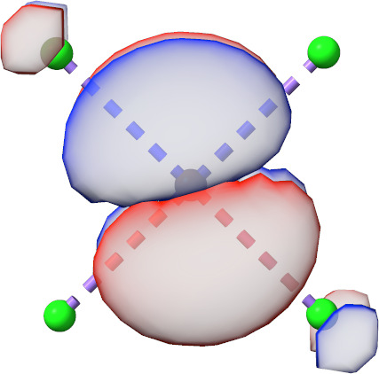
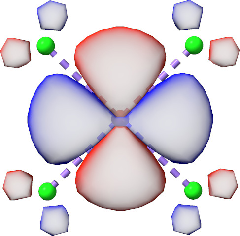
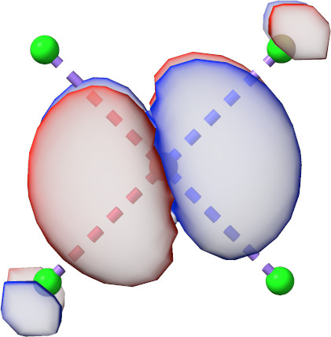
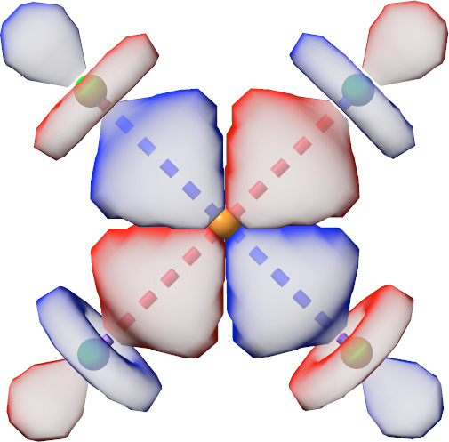
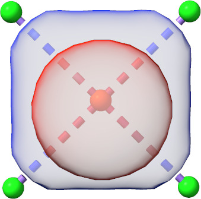
Initial Minimal AS orbitals of CuCl\(^-_{\text{4}}\) generated by AVAS.
The same calculation can be started also by using the
%scf avas ... end end block.
%scf
avas
system
shell 3, 3, 3, 3, 3
l 2, 2, 2, 2, 2
m_l 0, 1, -1, 2, -2
center 0, 0, 0, 0, 0
end
end
end
Here, it is also possible to use target basis functions at different
atoms (center) and to select only a subset of functions in a shell
(\(m_\text{l}\)). Note that if not all functions of a shell (3p, 5d,
7f) are selected, the molecule should be oriented manually to accomplish
the desired basis function overlap.
AVAS can be also used very conveniently in the same fashion for
double-d shell calculations with transition-metal complexes (! AVAS(Double-D)).
For each 3d transition-metal center in a molecule all 3d and 4d
target functions are considered.
Similarly, double-shell active spaces can be also set up for
4d and 5d transition-metal complexes.
There is also a similar keyword for lanthanides and actinides.
! AVAS( Valence-F ) attempts to set up an active space with 7 f functions
for each lanthanide or actinide atom in a molecule.
There is also the possibility to run double-f shell calculations using the
! AVAS( Double-F ) keyword.
To avoid this issue for\(\pi\) active space calculation, all three 2p target AOs are considered first but they are weighted by the three component of the principle axis of inertia with the largest moment. Sayfutyarova2019 For those inertia moment calculations, masses are ignored and only the centers of the desired target p AO are considered.
For a CAS(10,9)\(\pi\)-active space calculation on tryptophan, the AVAS input read
and leads to the following output
-------------------------------------------------
INITIAL GUESS: Atomic Valence Active space (AVAS)
-------------------------------------------------
AVAS threshold : 0.400000
AVAS minimal basis set : AUTO
AVAS list : Shell | 2 1 0> at atom 0 (system 0, type pz)
: Shell | 2 1 1> at atom 0 (system 0, type pz)
: Shell | 2 1 -1> at atom 0 (system 0, type pz)
: Shell | 2 1 0> at atom 1 (system 0, type pz)
: Shell | 2 1 1> at atom 1 (system 0, type pz)
: Shell | 2 1 -1> at atom 1 (system 0, type pz)
: Shell | 2 1 0> at atom 2 (system 0, type pz)
: Shell | 2 1 1> at atom 2 (system 0, type pz)
: Shell | 2 1 -1> at atom 2 (system 0, type pz)
: Shell | 2 1 0> at atom 3 (system 0, type pz)
: Shell | 2 1 1> at atom 3 (system 0, type pz)
: Shell | 2 1 -1> at atom 3 (system 0, type pz)
: Shell | 2 1 0> at atom 4 (system 0, type pz)
: Shell | 2 1 1> at atom 4 (system 0, type pz)
: Shell | 2 1 -1> at atom 4 (system 0, type pz)
: Shell | 2 1 0> at atom 5 (system 0, type pz)
: Shell | 2 1 1> at atom 5 (system 0, type pz)
: Shell | 2 1 -1> at atom 5 (system 0, type pz)
: Shell | 2 1 0> at atom 10 (system 0, type pz)
: Shell | 2 1 1> at atom 10 (system 0, type pz)
: Shell | 2 1 -1> at atom 10 (system 0, type pz)
: Shell | 2 1 0> at atom 11 (system 0, type pz)
: Shell | 2 1 1> at atom 11 (system 0, type pz)
: Shell | 2 1 -1> at atom 11 (system 0, type pz)
: Shell | 2 1 0> at atom 12 (system 0, type pz)
: Shell | 2 1 1> at atom 12 (system 0, type pz)
: Shell | 2 1 -1> at atom 12 (system 0, type pz)
AVAS P matrix eig. val ( Occupied) : (0.000004)
AVAS P matrix eig. val ( Occupied) : (0.000014)
AVAS P matrix eig. val ( Occupied) : (0.000292)
AVAS P matrix eig. val ( Occupied) : (0.040014)
AVAS P matrix eig. val ( Occupied) : 0.978162
AVAS P matrix eig. val ( Occupied) : 0.986637
AVAS P matrix eig. val ( Occupied) : 0.993225
AVAS P matrix eig. val ( Occupied) : 0.994300
AVAS P matrix eig. val ( Occupied) : 0.996447
AVAS P matrix eig. val ( Virtual) : 0.999996
AVAS P matrix eig. val ( Virtual) : 0.999986
AVAS P matrix eig. val ( Virtual) : 0.999708
AVAS P matrix eig. val ( Virtual) : 0.959986
AVAS P matrix eig. val ( Virtual) : (0.021838)
AVAS P matrix eig. val ( Virtual) : (0.013363)
AVAS P matrix eig. val ( Virtual) : (0.006775)
AVAS P matrix eig. val ( Virtual) : (0.005700)
AVAS P matrix eig. val ( Virtual) : (0.003553)
AVAS electrons : 10
AVAS orbitals : 9
------------------
INITIAL GUESS DONE ( 0.3 sec)
------------------
and initial active orbitals.
ABC|DEF|GHI
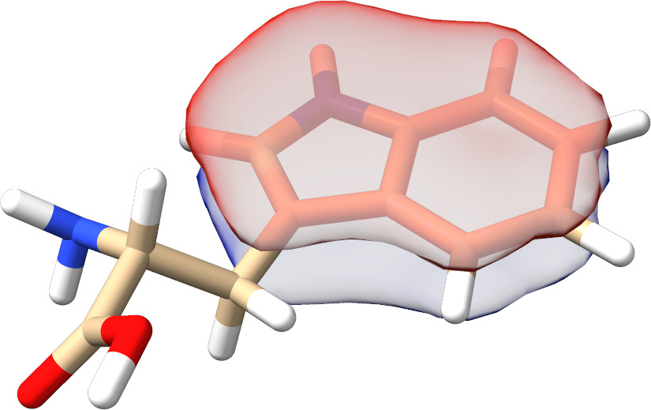
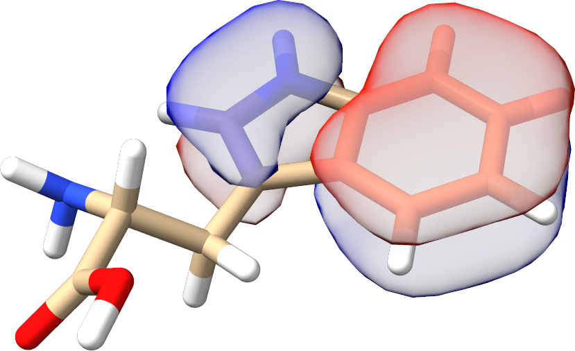
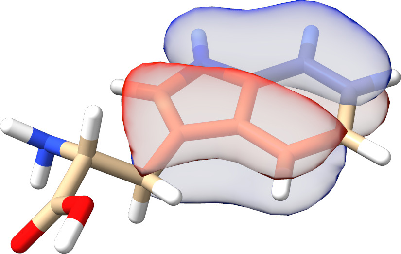
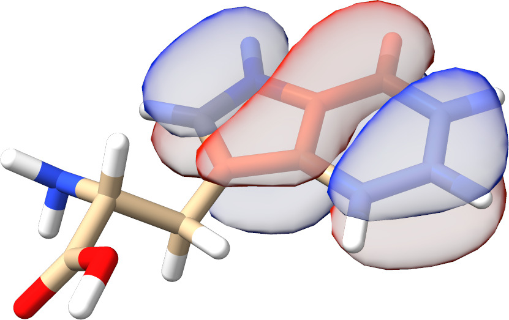
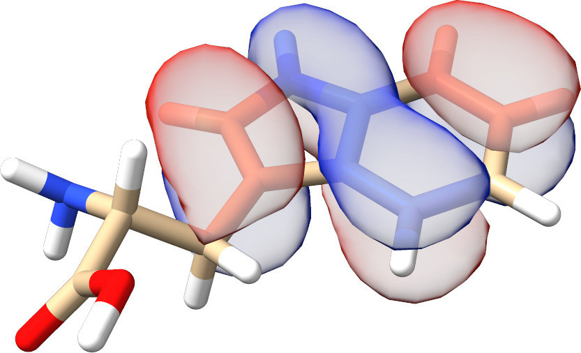
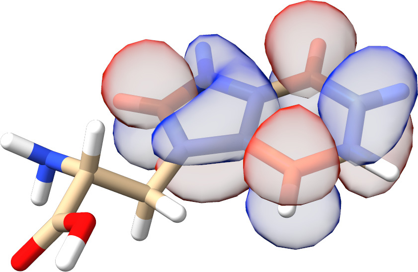
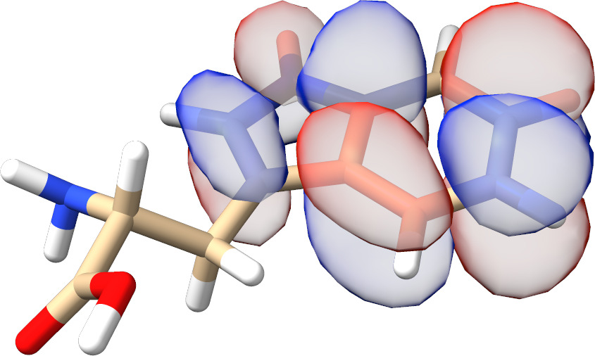
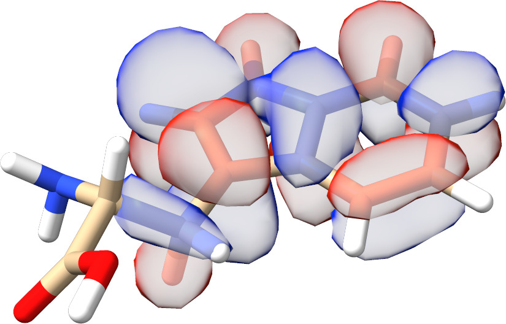
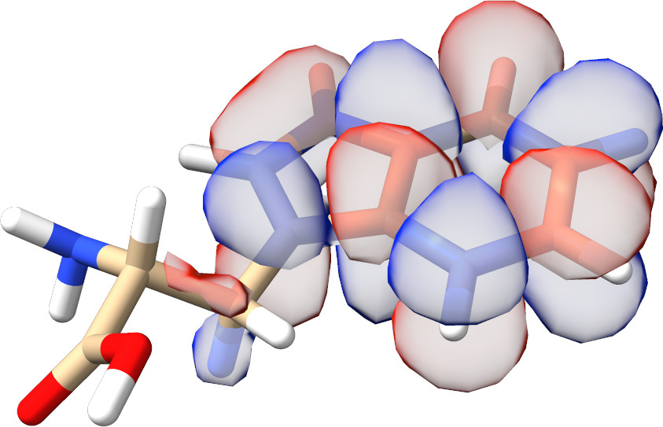
Initial\(\pi\) AS orbitals of tryptophan generated by AVAS.
It is also possible to specify the number of active electrons nel and
orbitals norb directly. For such a calculation, the AVAS singular
value decomposition threshold tol is ignored. In the following
calculation, the strongly occupied orbital from the previous CAS(10,9)
(\(\sigma^{\text{o} }_4\) in fig:avas-tryp) calculation is omitted.
%scf
avas
system
norb 8
nel 8
center 0, 1, 2, 3, 4, 5, 10, 11, 12
type pz, pz, pz, pz, pz, pz, pz, pz, pz
end
end
end
It is also possible to do the AVAS start MO generation for several
systems independently and then re-orthonormalize all MOs at the end
similar to Sayfutyarova2019. This becomes interesting for
generating starting orbitals for multiple\(\pi\) chromophores like the
bridged bithiophene biradical
%scf
avas
system
norb 4
nel 3
center 0, 1, 2, 3, 4 # C / S atoms system 1
type pz, pz, pz, pz, pz
end
system
norb 4
nel 5
center 38, 39, 40, 41, 43 # C / S atoms system 2
type pz, pz, pz, pz, pz
end
end
end
or the FeTPP molecule.
37 structure (0 1) Fe 0.0000 0.0000 0.0000 N 1.9764 0.0000 0.0000 N 0.0000 0.0000 1.9884 N -1.9764 0.0000 0.0000 N 0.0000 0.0000 -1.9884 C 2.8182 0.0000 -1.0903 C 2.8182 0.0000 1.0903 C 1.0918 0.0000 2.8249 C -1.0918 0.0000 2.8249 C -2.8182 0.0000 1.0903 C -2.8182 0.0000 -1.0903 C -1.0918 0.0000 -2.8249 C 1.0918 0.0000 -2.8249 C 4.1961 0.0000 -0.6773 C 4.1961 0.0000 0.6773 C 0.6825 0.0000 4.1912 C -0.6825 0.0000 4.1912 C -4.1961 0.0000 0.6773 C -4.1961 0.0000 -0.6773 C -0.6825 0.0000 -4.1912 C 0.6825 0.0000 -4.1912 H 5.0441 0.0000 -1.3538 H 5.0441 0.0000 1.3538 H 1.3558 0.0000 5.0416 H -1.3558 0.0000 5.0416 H -5.0441 0.0000 1.3538 H -5.0441 0.0000 -1.3538 H -1.3558 0.0000 -5.0416 H 1.3558 0.0000 -5.0416 C 2.4150 0.0000 2.4083 C -2.4150 0.0000 2.4083 C -2.4150 0.0000 -2.4083 C 2.4150 0.0000 -2.4083 H 3.1855 0.0000 3.1752 H -3.1855 0.0000 3.1752 H -3.1855 0.0000 -3.1752 H 3.1855 0.0000 -3.1752
! SVP NoIter ! PModel %scf avas system center 0 type d end system center 1, 2, 3, 4, 5, 6, 7, 8, 9, 10, 11, 12, 13, 14, 15, 16, 17, 18, 19, 20, 29, 30, 31, 32 type pz, pz, pz, pz, pz, pz, pz, pz, pz, pz, pz, pz, pz, pz, pz, pz, pz, pz, pz, pz, pz, pz, pz, pz end end end *xyz 0 1 Fe 0.0000 0.0000 0.0000 N 1.9764 0.0000 0.0000 N 0.0000 0.0000 1.9884 N -1.9764 0.0000 0.0000 N 0.0000 0.0000 -1.9884 C 2.8182 0.0000 -1.0903 C 2.8182 0.0000 1.0903 C 1.0918 0.0000 2.8249 C -1.0918 0.0000 2.8249 C -2.8182 0.0000 1.0903 C -2.8182 0.0000 -1.0903 C -1.0918 0.0000 -2.8249 C 1.0918 0.0000 -2.8249 C 4.1961 0.0000 -0.6773 C 4.1961 0.0000 0.6773 C 0.6825 0.0000 4.1912 C -0.6825 0.0000 4.1912 C -4.1961 0.0000 0.6773 C -4.1961 0.0000 -0.6773 C -0.6825 0.0000 -4.1912 C 0.6825 0.0000 -4.1912 H 5.0441 0.0000 -1.3538 H 5.0441 0.0000 1.3538 H 1.3558 0.0000 5.0416 H -1.3558 0.0000 5.0416 H -5.0441 0.0000 1.3538 H -5.0441 0.0000 -1.3538 H -1.3558 0.0000 -5.0416 H 1.3558 0.0000 -5.0416 C 2.4150 0.0000 2.4083 C -2.4150 0.0000 2.4083 C -2.4150 0.0000 -2.4083 C 2.4150 0.0000 -2.4083 H 3.1855 0.0000 3.1752 H -3.1855 0.0000 3.1752 H -3.1855 0.0000 -3.1752 H 3.1855 0.0000 -3.1752 *
For those systems, all AVAS starting MOs have the desired\(\pi\) or\(d\) character as illustrated for the "active frontier orbitals" in fig:avas-multi-sys.
AA|BB|CD

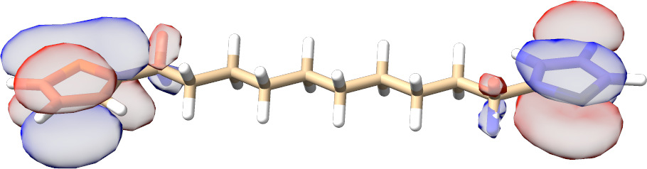
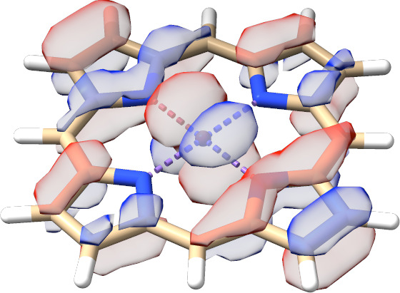
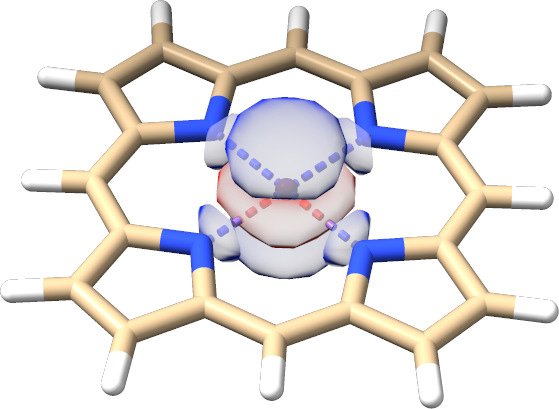
Initial HOMO and LUMO AVAS orbitals of a bridged bithiophene biradical and FeTPP.
Example: Symmetry¶
The CASSCF program can make some use of symmetry. Thus, it is possible to do the CI calculations separated by irreducible representations. This allows one to calculate electronic states in a more controlled fashion.
Let us look at a simple example: C\(_{2}\)H\(_{4}\). We first generate symmetry adapted MP2 natural orbitals. Since we opt for initial guess orbitals, the computationally cheaper unrelaxed density suffices:
! def2-TZVP def2-TZVP/C UseSym RI-MP2 conv # conventional is faster
# for small molecules
%mp2
density unrelaxed # unrelaxed is sufficient for guess orbitals.
natorbs true
end
* int 0 1
C 0 0 0 0 0 0
C 1 0 0 1.35 0 0
H 1 2 0 1.1 120 0
H 1 2 3 1.1 120 180
H 2 1 3 1.1 120 0
H 2 1 3 1.1 120 180
*
The program does the following. It first identifies the group correctly
as D\(_{2h}\) and sets up its irreducible representations. The process
detects symmetry within SymThresh (\(10^{-4}\)) and purifies the
geometry thereafter:
------------------
SYMMETRY DETECTION
------------------
The point group will now be determined using a tolerance of 1.0000e-04.
Splitting atom subsets according to nuclear charge, mass and basis set.
Splitting atom subsets according to distance from the molecule's center.
Identifying relative distance patterns of the atoms.
Splitting atom subsets according to atoms' relative distance patterns.
Bring atoms of each subset into input order.
The molecule is planar.
The molecule has a center of inversion.
Analyzing the first atom subset for its symmetry.
The atoms in the selected subset form a 4-gon with alternating side lengths.
Testing point group D2h.
Success!
This point group has been found: D2h
Largest non-degenerate subgroup: D2h
Symmetry-perfected Cartesians (point group D2h):
Atom Symmetry-perfected Cartesians (x, y, z; au)
0 -1.275565140397 0.000000000000 0.000000000000
1 1.275565140397 0.000000000000 0.000000000000
2 -2.314914514054 1.800205921988 0.000000000000
3 -2.314914514054 -1.800205921988 0.000000000000
4 2.314914514054 1.800205921988 0.000000000000
5 2.314914514054 -1.800205921988 0.000000000000
-----------------------------------------------
SYMMETRY-PERFECTED CARTESIAN COORDINATES (A.U.)
-----------------------------------------------
Warning (ORCA_SYM): Coordinates were not cleaned so far!
------------------
SYMMETRY REDUCTION
------------------
ORCA supports only abelian point groups.
It is now checked, if the determined point group is supported:
Point Group ( D2h ) is ... supported
(Re)building abelian point group:
Creating Character Table ... done
Making direct product table ... done
Constructing symmetry operations ... done
Creating atom transfer table ... done
Creating asymmetric unit ... done
----------------------
ASYMMETRIC UNIT IN D2h
----------------------
# AT MASS COORDS (A.U.) BAS
0 C 12.0110 -1.27556514 0.00000000 0.00000000 0
2 H 1.0080 -2.31491451 1.80020592 0.00000000 0
----------------------
SYMMETRY ADAPTED BASIS
----------------------
The coefficients for the symmetry adapted linear combinations (SALCS)
of basis functions will now be computed:
Number of basis functions ... 86
Preparing memory ... done
Constructing Gamma(red) ... done
Reducing Gamma(red) ... done
Constructing SALCs ... done
Checking SALC integrity ... nothing suspicious
Normalizing SALCs ... done
Storing the symmetry object:
Symmetry file ... Test-SYM-CAS-C2H4-1.sym.tmp
Writing symmetry information ... done
It then performs the SCF calculation and keeps the symmetry in the molecular orbitals.
NO OCC E(Eh) E(eV) Irrep
0 2.0000 -11.236728 -305.7669 1-Ag
1 2.0000 -11.235157 -305.7242 1-B3u
2 2.0000 -1.027144 -27.9500 2-Ag
3 2.0000 -0.784021 -21.3343 2-B3u
4 2.0000 -0.641566 -17.4579 1-B2u
5 2.0000 -0.575842 -15.6694 3-Ag
6 2.0000 -0.508313 -13.8319 1-B1g
7 2.0000 -0.373406 -10.1609 1-B1u
8 0.0000 0.139580 3.7982 1-B2g
9 0.0000 0.171982 4.6799 4-Ag
10 0.0000 0.195186 5.3113 3-B3u
11 0.0000 0.196786 5.3548 2-B2u
12 0.0000 0.242832 6.6078 2-B1g
13 0.0000 0.300191 8.1686 5-Ag
14 0.0000 0.326339 8.8801 4-B3u
... etc
The MP2 module does not take any advantage of this information but produces natural orbitals that are symmetry adapted:
N[ 0](B3u) = 2.00000360
N[ 1]( Ag) = 2.00000219
N[ 2]( Ag) = 1.98056435
N[ 3](B3u) = 1.97195041
N[ 4](B2u) = 1.96746753
N[ 5](B1g) = 1.96578954
N[ 6]( Ag) = 1.95864726
N[ 7](B1u) = 1.93107098
N[ 8](B2g) = 0.04702701
N[ 9](B3u) = 0.02071784
N[ 10](B2u) = 0.01727252
N[ 11]( Ag) = 0.01651489
N[ 12](B1g) = 0.01602695
N[ 13](B3u) = 0.01443373
N[ 14](B1u) = 0.01164204
N[ 15]( Ag) = 0.01008617
N[ 16](B2u) = 0.00999302
N[ 17]( Ag) = 0.00840326
N[ 18](B3g) = 0.00795053
N[ 19](B3u) = 0.00532044
N[ 20]( Au) = 0.00450556
etc.
From this information and visual inspection you will know what orbitals you will have in the active space:
These natural orbitals can then be fed into the CASSCF calculation. We perform a simple calculation in which we keep the ground state singlet (A\(_{1g}\) symmetry, irrep\(=\)0) and the first excitedtriplet state (B\(_{3u}\) symmetry, irrep\(=\)7). In general the ordering of irreps follows standard conventions and in case of doubt you will find the relevant number for each irrep in the output.
For example, here (using !LargePrint):
----------------------------
CHARACTER TABLE OF GROUP D2h
----------------------------
GAMMA O1 O2 O3 O4 O5 O6 O7 O8
Ag : 1.0 1.0 1.0 1.0 1.0 1.0 1.0 1.0
B1g: 1.0 1.0 -1.0 -1.0 1.0 1.0 -1.0 -1.0
B2g: 1.0 -1.0 1.0 -1.0 1.0 -1.0 1.0 -1.0
B3g: 1.0 -1.0 -1.0 1.0 1.0 -1.0 -1.0 1.0
Au : 1.0 1.0 1.0 1.0 -1.0 -1.0 -1.0 -1.0
B1u: 1.0 1.0 -1.0 -1.0 -1.0 -1.0 1.0 1.0
B2u: 1.0 -1.0 1.0 -1.0 -1.0 1.0 -1.0 1.0
B3u: 1.0 -1.0 -1.0 1.0 -1.0 1.0 1.0 -1.0
---------------------------------
DIRECT PRODUCT TABLE OF GROUP D2h
---------------------------------
** Ag B1g B2g B3g Au B1u B2u B3u
Ag Ag B1g B2g B3g Au B1u B2u B3u
B1g B1g Ag B3g B2g B1u Au B3u B2u
B2g B2g B3g Ag B1g B2u B3u Au B1u
B3g B3g B2g B1g Ag B3u B2u B1u Au
Au Au B1u B2u B3u Ag B1g B2g B3g
B1u B1u Au B3u B2u B1g Ag B3g B2g
B2u B2u B3u Au B1u B2g B3g Ag B1g
B3u B3u B2u B1u Au B3g B2g B1g Ag
We use the following input for CASSCF, where we tightened the integral
cut-offs and the convergence criteria using !VeryTightSCF.
# Keywords to be used as Orbstep/Switchstep
SuperCI_PT # perturbative SuperCI (first-order) - default
TRAH # restricted-step augmented Hessian (second-order 1-step)
#
SuperCI # SuperCI (first-order)
DIIS # DIIS (first-order)
KDIIS # KDIIS (first-order)
SOSCF # approx. Newton-Raphson (first-order)
NR # augmented Hessian Newton-Raphson
# unfolded two-step procedure
# - still not true second-order
And gives:
------------
SCF SETTINGS
------------
Hamiltonian:
Ab initio Hamiltonian Method .... Hartree-Fock(GTOs)
General Settings:
Integral files IntName .... Test-SYM-CAS-C2H4-1
Hartree-Fock type HFTyp .... CASSCF
Total Charge Charge .... 0
Multiplicity Mult .... 1
Number of Electrons NEL .... 16
Basis Dimension Dim .... 86
Nuclear Repulsion ENuc .... 32.9609050695 Eh
Symmetry handling UseSym .... ON
Point group .... D2h
Used point group .... D2h
Number of irreps .... 8
Irrep Ag has 19 symmetry adapted basis functions (ofs= 0)
Irrep B1g has 12 symmetry adapted basis functions (ofs= 19)
Irrep B2g has 8 symmetry adapted basis functions (ofs= 31)
Irrep B3g has 4 symmetry adapted basis functions (ofs= 39)
Irrep Au has 4 symmetry adapted basis functions (ofs= 43)
Irrep B1u has 8 symmetry adapted basis functions (ofs= 47)
Irrep B2u has 12 symmetry adapted basis functions (ofs= 55)
Irrep B3u has 19 symmetry adapted basis functions (ofs= 67)
And further in the CASSCF program:
Symmetry handling UseSym ... ON
Point group ... D2h
Used point group ... D2h
Number of irreps ... 8
Irrep Ag has 19 SALCs (ofs= 0) #(closed)= 2 #(active)= 1
Irrep B1g has 12 SALCs (ofs= 19) #(closed)= 1 #(active)= 0
Irrep B2g has 8 SALCs (ofs= 31) #(closed)= 0 #(active)= 1
Irrep B3g has 4 SALCs (ofs= 39) #(closed)= 0 #(active)= 0
Irrep Au has 4 SALCs (ofs= 43) #(closed)= 0 #(active)= 0
Irrep B1u has 8 SALCs (ofs= 47) #(closed)= 0 #(active)= 1
Irrep B2u has 12 SALCs (ofs= 55) #(closed)= 1 #(active)= 0
Irrep B3u has 19 SALCs (ofs= 67) #(closed)= 2 #(active)= 1
Symmetries of active orbitals:
MO = 6 IRREP= 0 (Ag)
MO = 7 IRREP= 5 (B1u)
MO = 8 IRREP= 2 (B2g)
MO = 9 IRREP= 7 (B3u)
Setting up the integral package ... done
Building the CAS space ... done (7 configurations for Mult=1 Irrep=0)
Building the CAS space ... done (4 configurations for Mult=3 Irrep=7)
Note that the irrep occupations and active space irreps will be frozen to what they are upon entering the CASSCF program. This helps to setup the CI problem.
After which it smoothly converges to give:
6: 1.986258 -0.753012 -20.4905 3-Ag
7: 1.457849 -0.291201 -7.9240 1-B1u
8: 0.541977 0.100890 2.7454 1-B2g
9: 0.013915 0.964186 26.2368 3-B3u
As well as:
-----------------------------
SA-CASSCF TRANSITION ENERGIES
------------------------------
LOWEST ROOT = -78.110314788 Eh -2125.490 eV
STATE ROOT MULT IRREP DE/a.u. DE/eV DE/cm**-1
1: 0 3 B3u 0.163741 4.456 35937.1
Example: Breaking Chemical Bonds¶
Let us turn to the breaking of chemical bonds. As a first example we
study the dissociation of the H\(_{2}\) molecule. Scanning a bond, we have
two potential setups for the calculation: a) scan from the inside to the
outside or b) from the outside to inside. Of course both setups yield
identical results, but they differ in practical aspects i.e. convergence
properties. In general, scanning from the outside to the inside is the
recommended procedure. Using the default guess (PModel), starting
orbitals are much easier identified than at shorter distances, where
the antibonding orbitals are probably 'impure' and hence would require
some additional preparation. To ensure a smooth potential energy
surface, in all subsequent geometry steps, ORCA reads the converged
CASSCF orbitals from the previous geometry step. In the following,
TightSCF is used to tighten the convergence settings of CASSCF.
%casscf
OrbStep SuperCI # or any other from the list above
SwitchStep DIIS # or any other from the list above
SwitchConv 0.03 # gradient at which to switch
SwitchIter 15 # iteration at which the switch takes place
# irrespective of the gradient
MaxIter 75 # Maximum number of macro-iterations
end
The resulting potential energy surface (PES) is depicted in fig:7 together with PESs obtained from RHF and broken-symmetry UHF calculations (input below).
And
Note
The FlipSpin option does not work together with the parameter
scan. Only the first structure will undergo a spin flip. Therefore, at
the current status, a separate input file (including the coordinates or
with a corresponding coordinate file) has to be provided for each
structure that is scanned along the PES.
Potential Energy Surface of the H\(_2\) molecule from RHF, UHF and CASSCF(2,2) calculations (Def2-SVP basis).
It is obvious, that the CASSCF surface is concise and yields the correct dissociation behavior. The RHF surface is roughly parallel to the CASSCF surface in the vicinity of the minimum but then starts to fail badly as the H-H bond starts to break. The broken-symmetry UHF solution is identical to RHF in the vicinity of the minimum and dissociates correctly. It is, however, of rather mediocre quality in the intermediate region where it follows the RHF surface.
A more challenging case is to dissociate the N-N bond of the N\(_{2}\) molecule correctly. Using CASSCF with the six p-orbitals we get a nice potential energy curve (The depth of the minimum is still too shallow compared to experiment by some 1 eV or so. A good dissociation energy requires a dynamic correlation treatment on top of CASSCF and a larger basis set).
Potential Energy Surface of the N\(_2\) molecule from CASSCF(6,6) calculations (Def2-SVP basis).
One can use the H\(_{2}\) example to illustrate the state-averaging feature. Since we have two active electrons we have two singlets and one triplet. Let us average the orbitals over these three states (we take equal weights for all multiplicity blocks):
1 structure (0 1) H 0 0 0
!Def2-SVP TightSCF
%casscf
# define CAS(2,2)
nel 2
norb 2
# state-averaged triplet and singlet states
mult 3,1
nroots 1,2
end
# Scanning from the outside to the inside
%paras
R [4.1 3.8 3.5 3.2 2.9 2.6 2.4 2.2
2 1.7 1.5 1.3 1.1 1 0.9 0.8
0.75 0.7 0.65 0.6]
end
* xyz 0 1
H 0 0 0
H 0 0 {R}
end
which gives:
State averaged CASSCF(2,2) calculations on H\(_2\) (two singlets, one triplet; Def2-SVP basis). The grey curve is the ground state CASSCF(2,2) curve
One observes, that the singlet and triplet ground states become degenerate for large distances (as required) while the second singlet becomes the ionic singlet state which is high in energy. If one compares the lowest root of the state-averaged calculation (in green) with the dedicated ground state calculation (in gray) one gets an idea of the energetic penalty that is associated with averaged as opposed to dedicated orbitals.
A more involved example is the rotation around the double bond in C\(_{2}\)H\(_{4}\). Here, the\(\pi\)-bond is broken as one twists the molecule. The means the proper active space consists of two active electron in two orbitals.
The input is (for fun, we average over the lowest two singlets and the triplet):
# SuperCI_PT specific settings
MaxRot 0.05 # cap stepsize
DThresh 1e-6 # thresh for critical occupation
State averaged CASSCF(2,2) calculations on C\(_2\)H\(_4\) (two singlets, one triplet; SV(P) basis). The grey curve is the state averaged energy.
We can see from this plot, that the CASSCF method produces a nice ground state surface with the correct periodicity and degeneracy at the end points, which represent the planar ethylene molecule. At 90\(^{\circ}\) one has a weakly coupled diradical and the singlet and triplet states become nearly degenerate, again as expected. Calculations with larger basis sets and inclusion of dynamic correlation would give nice quantitative results.
Example: Excited States¶
As a final example, we do a state-average calculation on H\(_{2}\)CO in order to illustrate excited state treatments. We expect from the ground state (basically closed-shell) a n\(\to \pi^{\ast }\) and a\(\pi \to\pi^{\ast }\) excited state which we want to describe. For the n\(\to\pi^{\ast }\) we also want to calculate the triplet since it is well known experimentally. First we take DFT orbitals as starting guess.
MaxDIIS 15 # max. no of DIIS vectors to keep
DIISThresh 1e-7 # overlap criteria for linear dependency
In this example the DFT calculation produces the desired active space (n,\(\pi\) and\(\pi^\ast\) orbitals) without further modification (e.g. swapping orbitals). In general it is advised to verify the final converged orbitals.
# default = dynamic level-shifting based on Ext-Act, Int-Act
ShiftUp 2.0 # static up-shift the virtual orbitals
ShiftDn 2.0 # static down-shift the internal orbitals
MinShift 0.6 # minimum separation subspaces
We get:
-----------------------------
SA-CASSCF TRANSITION ENERGIES
------------------------------
LOWEST ROOT (ROOT 0 ,MULT 1) = -113.805194041 Eh -3096.797 eV
STATE ROOT MULT DE/a.u. DE/eV DE/cm**-1
1: 0 3 0.129029 3.511 28318.5
2: 1 1 0.141507 3.851 31057.3
3: 2 1 0.453905 12.351 99620.7
The triplet n\(\to \pi^{\ast }\) states is spot on with the experiment excitation energy of 3.5 eV.Robin1974 Similarly, the singlet n \(\to \pi^{\ast }\) excited state is well reproduced compared to 3.79 eV and 4.07 eV reported in the literature.Robin1974,Kuppermann1987 Only the singlet\(\pi \to \pi^{\ast }\) excited state stands out compared to the theoretical estimate of 9.84 eV computed with MR-AQCC.muller_2001. The good results are very fortuitous given the small basis set, the minimal active space and the complete neglect of dynamical correlation.
The state-average procedure might not do justice to the different nature of the states (n\(\to \pi^{\ast }\) versus\(\pi \to \pi^{\ast }\)). The agreement should be better with the orbitals optimized for each state. In ORCA, state-specific optimization are realized adjusting the weights i.e. for the second singlet excited root:
Second-Singlet:
%casscf
# define CAS(5,4)
nel 4
norb 3
# define singlet with and compute the 3 lowest
# states
mult 1
nroots 3
weights[0] = 0,0,1 # weights for the roots
end
Note, that state-specific orbital optimization are challenging to converge and often prone to root-flipping.rootflip
To analyze electronic transitions, natural transition orbitals (NTO)
are available for state-averaged CASSCF (and also CASCI) calculations.
NTOs are switched on for every ground- to excited-state transition by
just adding DoNTO true to the %casscf ... end input block, i.e.
For each excitation, the most dominant natural occupation numbers (singular values >1.e-4) are printed for each transition. A set of donor orbitals and a set of acceptor orbitals, each of dimension Nbf x (Nocc + Nact), are created and stored in files with unique names. We obtain for the previous formamide example the following CASSCF NTO output
==========================================
CASSCF Natural Transition Orbitals
==========================================
------------------------------------------------
NATURAL TRANSITION ORBITALS FOR STATE 1 1A
------------------------------------------------
STATE 1 1A : E= 0.141508 au 3.851 eV 31057.3 cm**-1
Threshold for printing occupation numbers 1.0000e-04
0 : n= 1.30882812
1 : n= 0.02641080
=> Natural Transition Orbitals (donor ) were saved in casscf.1-1A_nto-donor.gbw
=> Natural Transition Orbitals (acceptor) were saved in casscf.1-1A_nto-acceptor.gbw
------------------------------------------------
NATURAL TRANSITION ORBITALS FOR STATE 2 1A
------------------------------------------------
STATE 2 1A : E= 0.453905 au 12.351 eV 99620.7 cm**-1
Threshold for printing occupation numbers 1.0000e-04
0 : n= 1.30519478
1 : n= 0.24869813
2 : n= 0.00471742
=> Natural Transition Orbitals (donor ) were saved in casscf.2-1A_nto-donor.gbw
=> Natural Transition Orbitals (acceptor) were saved in casscf.2-1A_nto-acceptor.gbw
For each transition, plots of the NTO pairs can be generated with the orca_plot program (see Sec. utilities.plots for details),
, e.g., acceptor orbitals of the 2 1A1 state in interactive mode:
Most dominant natural transition orbital (NTO) pair for the 2 1A1 (S2) transition in formaldehyde.
Alternatively, NTOs can also be computed directly in orca_plot from the
CASSCF transition density matrices.
Those need to be stored and kept in the density container by invoking
Example: Large Active Spaces using ICE-CI¶
The state-averaged CASSCF procedure can be used for the calculation of spin-state energetics of molecules showing a multi-reference character. The main obstacle in getting qualitatively accurate spin-state energetics for molecules with many transition metal centers is the proper treatment of the static-correlation effects between the large number of open-shell electrons. In this section, we describe how one can effectively perform CASSCF calculations on such systems containing a large number of high-spin open-shell transition metal atoms.
As an example, consider the Iron-Sulfur dimer\([\text{Fe(III)}_2\text{SR}_2]^2-\) molecule. In this system, the Fe(III) centers can be seen as being made up mostly of S=5/2 local spin states (lower spin states such as 3/2 and 1/2 will have small contributions due to Hunds' rule.) The main hurdle while using the CASSCF protocol on such systems (with increasing number of metal atoms) is the exponential growth of the Hilbert space although the physics can be effectively seen as occurring in a very small set of configuration state functions (CSFs). Therefore, in order to obtain qualitatively correct spin-state energetics, one need not perform a Full-CI on such molecules but rather a CIPSI like procedure using the ICE-CI solver should give chemically accurate results. In the case of the Fe(III) dimer, one can imagine that the ground singlet state is composed almost entirely of the CSF where the two Fe(III) centers are coupled antiferromagnetically. Such a CSF is represented as follows:
In order to make sense of this CSF representation, one needs to clarify a few points which are as follows:
-
First, in the above basis the 10 orbitals are localized to 5 on each Fe center (following a high-spin UHF/UKS calculation.)
-
Second, the orbitals are ordered (as automatically done in ORCA_LOC) such that the first five orbitals lie on one Fe(III) center and the last five orbitals on the second Fe(III) center.
Using this ordering, one can read the CSF shown above in the following way: The first five 1 represent the five electrons on the first Fe(III) coupled in a parallel fashion to give a S=5/2 spin. The next five -1 represent two points:
-
First, the five consecutive -1 signify the presence of five ferromagnetically coupled electrons on the second Fe(III) center resulting in a local S=5/2 spin state.
-
Second, the second set of spins are coupled to the first 1 via anti-parallel coupling as signified by the sign of the last five -1 entries.
Therefore, we can see that using the CSF representation, one can obtain an extremely compact representation of the wave function for molecules consisting of open-shell transition metal atoms. This protocol of using localized orbitals in a specified order to form compact CSF representations for transition metal systems can be systematically extended for large molecules.
We will use the example of the Iron-Sulfur dimer\([\text{Fe(III)}_2\text{SR}_2]^2-\) to demonstrate how to prepare a reference CSF and perform spin-state energetics using the state-averaged CASSCF protocol. In such systems, often one can obtain an estimate of the energy gap between the singlet-state and the high-spin states from experiment. Ab initio values for this gap be obtained using the state-averaged CASSCF protocol using the input shown below.
E(CAS)= -230.590325053 Eh DE= -0.000798832
--- Energy gap subspaces: Ext-Act = -0.244 Act-Int = -0.002
--- current l-shift: Up(Ext-Act) = 0.54 Dn(Act-Int) = 0.30
The main keyword that needs to be used here (unlike in other CAS-SCF calculations) is the actorbs keyword. Since we are using a local basis with a specific ordering of the orbitals, in order to represent our wave function it is imperative to preserve the local nature of the orbitals as well as the orbital ordering. Therefore, we do not calculate natural orbitals at the end of the CASSCF calculation (as is traditionally done) instead we impose the orbitals to be as similar to the input orbitals as possible. This is automatically enabled for intermediate CASSCF macro iterations. The resulting CASSCF calculation provides a chemically intuitive and simple wave function and transition energy as shown below:
---------------------------------------------
CAS-SCF STATES FOR BLOCK 1 MULT=11 NROOTS= 1
---------------------------------------------
STATE 0 MULT=11: E= -5066.8462457411 Eh W= 0.5000 DE= 0.000 eV 0.0 cm**-1
1.00000 ( 1.000000000) CSF = 1+1+1+1+1+1+1+1+1+1+
---------------------------------------------
CAS-SCF STATES FOR BLOCK 2 MULT= 1 NROOTS= 1
---------------------------------------------
STATE 0 MULT= 1: E= -5066.8548894831 Eh W= 0.5000 DE= 0.000 eV 0.0 cm**-1
0.98159 (-0.990753235) CSF = 1+1+1+1+1+1-1-1-1-1-
-----------------------------
SA-CASSCF TRANSITION ENERGIES
------------------------------
LOWEST ROOT (ROOT 0 ,MULT 1) = -5066.854889483 Eh -137876.131 eV
STATE ROOT MULT DE/a.u. DE/eV DE/cm**-1
1: 0 11 0.008644 0.235 1897.1
As we can see from the output above, 98% of the wave function for the singlet-state is given by a single CSF which we gave as a reference CSF. This CSF has a very simple chemical interpretation representing the anti-parallel coupling between the two high-spin Fe(III) centers. Since Iron-Sulfur molecules show a strong anti-ferromagnetic coupling, we expect the singlet state to be lower in energy than the high-spin (S=5) state. The CASSCF transition energies show essentially this fact. The transition energy is about\(\text{2000cm}^{-1}\) which is what one expects from a CASSCF calculation on such sulfide bridged transition-metal molecules.
Example: Geometry Optimization¶
In this section, we want to optimize the geometry of formaldehyde with CASSCF. The present implementation of analytic gradients are only implemented in the case that the solution is fully variational (orbitals are optimized for a single state).
To define the active space, lets first look at the natural orbitals from a simple correlation calculation like MP2 or a calculation with the MRCI module. Both are usually a good choice and easily generated. For example:
Now examine the occupation numbers of the natural orbitals (you will find that in the output of the MP2 part of the calculation):
Natural Orbital Occupation Numbers:
N[ 0] = 2.00000000
N[ 1] = 2.00000000
N[ 2] = 1.98676733
N[ 3] = 1.97726840
N[ 4] = 1.97500109
N[ 5] = 1.96759239
N[ 6] = 1.96423113
N[ 7] = 1.93719340
N[ 8] = 0.05427454
N[ 9] = 0.02555886
N[ 10] = 0.02530580
N[ 11] = 0.01358500
N[ 12] = 0.01096092
N[ 13] = 0.01028129
N[ 14] = 0.00702048
N[ 15] = 0.00627820
A rule of thumb is that orbitals with occupation numbers between 1.98 and 0.02 should be in the active space. Thus, in the present case we speculate that a 10 electrons in 8 orbitals active space would be appropriate for the CASSCF of the ground state. Let's try:
FreezeIE 0.4 # keep active space until int-ext rotation have
# a contribution of less than 40% to the ||g||
FreezeActive 0.03 # keep almost doubly occupied orbitals as long as
# their contribution is less than 3% to the ||g||
If we run that calculation, it converges and produces the following:
MACRO-ITERATION 10:
--- Inactive Energy E0 = -82.97337099 Eh
E(CAS)= -113.889438276 Eh DE= -0.000000807
--- Energy gap subspaces: Ext-Act = -0.431 Act-Int = -0.240
N(occ)= 1.99763 1.99696 1.98360 1.97923 1.94253 0.05958 0.02153 0.01894
||g|| = 0.000361782 Max(G)= 0.000189613 Rot=9,2
---- THE CAS-SCF GRADIENT HAS CONVERGED ----
--- FINALIZING ORBITALS ---
---- DOING ONE FINAL ITERATION FOR PRINTING ----
--- Forming Natural Orbitals
--- Canonicalize Internal Space
--- Canonicalize External Space
From which we see that we had two orbitals too many in the active space with occupation numbers very close to two. The presence of barely correlated orbitals (occupation close to 0.0 or 2.0) can cause convergence problems. Their inclusion in the active space does not significantly change the energy and it might better to omit these orbitals from the start.
In the present case, we re-run the CASSCF with 6 active electrons in six orbitals. The result is:
...
MACRO-ITERATION 8:
--- Inactive Energy E0 = -100.52457962 Eh
E(CAS)= -113.885584276 Eh DE= -0.000001152
--- Energy gap subspaces: Ext-Act = -0.438 Act-Int = -0.283
N(occ)= 1.98134 1.97931 1.94184 0.05868 0.02101 0.01781
||g|| = 0.000752012 Max(G)= -0.000357510 Rot=13,4
---- THE CAS-SCF GRADIENT HAS CONVERGED ----
--- FINALIZING ORBITALS ---
---- DOING ONE FINAL ITERATION FOR PRINTING ----
--- Forming Natural Orbitals
--- Canonicalize Internal Space
--- Canonicalize External Space
MACRO-ITERATION 9:
--- Inactive Energy E0 = -100.52457962 Eh
--- All densities will be recomputed
E(CAS)= -113.885584276 Eh DE= -0.000000000
--- Energy gap subspaces: Ext-Act = -0.858 Act-Int = -0.283
N(occ)= 1.98172 1.97932 1.94207 0.05845 0.02100 0.01743
||g|| = 0.000752012 Max(G)= -0.000327367 Rot=12,4
--------------
CASSCF RESULTS
--------------
Final CASSCF energy : -113.885584276 Eh -3098.9843 eV
The calculation converges very quickly and the occupation numbers show you that all of these orbitals are actually needed in the active space. The omission of the two orbitals from the active space came at an increase of the energy by\(\sim\)4 mEh which seems to be tolerable. Let's look what we have in the active space in figure fig:CAS-H2CO.
ABC|DEF
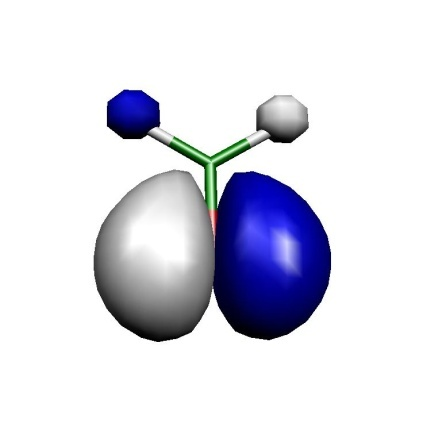
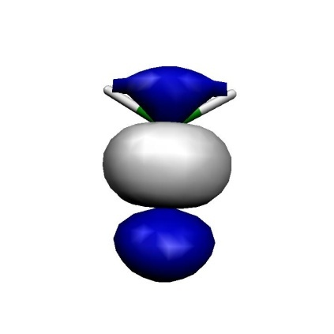
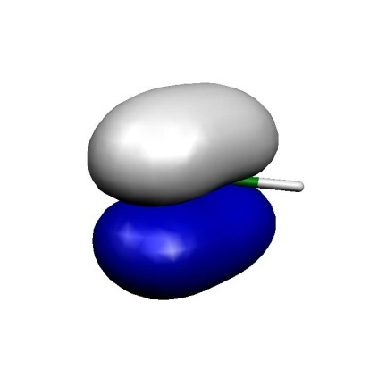
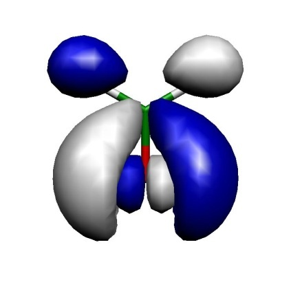
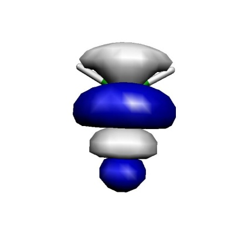
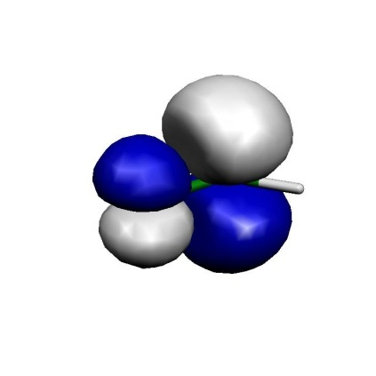
Orbitals of the active space for the CASSCF(6,6) calculation of H\(_2\)CO.
Thus, we can see that we got a fairly nice result: our calculation has correlated the in-plane oxygen lone pair, the C-O\(\sigma\) and the C-O\(\pi\) bond. For each strongly occupied bonding orbital, there is an accompanying weakly occupied antibonding orbital in the active space that is characterized by one more node. In particular, the correlating lone pair and the C-O\(\sigma^{\ast }\) orbital would have been hard to find with any other procedure than the one chosen based on natural orbitals. We have now done it blindly and looked at the orbitals only after the CASSCF --- a better approach is normally to look at the starting orbitals before you enter a potentially expensive CASSCF calculation. If you have bonding/antibonding pairs in the active space plus perhaps the singly-occupied MOs of the system you probably have chosen a reasonable active space.
Now that we establish the good active space, let us optimize the geometry of the molecule using a reasonable basis set:
and get:
---------------------------------------------------------------------------
Redundant Internal Coordinates
--- Optimized Parameters ---
(Angstroem and degrees)
Definition OldVal dE/dq Step FinalVal
----------------------------------------------------------------------------
1. B(O 1,C 0) 1.2101 0.000259 -0.0002 1.2100
2. B(H 2,C 0) 1.0942 -0.000029 0.0001 1.0943
3. B(H 3,C 0) 1.0942 -0.000029 0.0001 1.0943
4. A(O 1,C 0,H 3) 122.07 0.000023 -0.00 122.07
5. A(H 2,C 0,H 3) 115.85 -0.000046 0.01 115.86
6. A(O 1,C 0,H 2) 122.07 0.000023 -0.00 122.07
7. I(O 1,H 3,H 2,C 0) -0.00 -0.000000 0.00 -0.00
----------------------------------------------------------------------------
Let us compare to MP2 geometries (this job was actually run first):
FreezeGrad ... enabled if ||g|| is below 0.02
Note Convergence can be signaled if the reduced gradient reaches GTol
Last frozen orbital ... 9
First deleted orbital ... 320
Once rotations with core and deleted orbitals are stabilized they will be damped.
-------------------------------------------------------------------------
Redundant Internal Coordinates
--- Optimized Parameters ---
(Angstroem and degrees)
Definition OldVal dE/dq Step FinalVal
----------------------------------------------------------------------------
1. B(O 1,C 0) 1.2127 0.000374 -0.0002 1.2125
2. B(H 2,C 0) 1.0991 -0.000031 0.0001 1.0992
3. B(H 3,C 0) 1.0991 -0.000031 0.0001 1.0992
4. A(O 1,C 0,H 3) 121.77 0.000023 -0.00 121.77
5. A(H 2,C 0,H 3) 116.45 -0.000046 0.01 116.46
6. A(O 1,C 0,H 2) 121.77 0.000023 -0.00 121.77
7. I(O 1,H 3,H 2,C 0) -0.00 -0.000000 0.00 -0.00
----------------------------------------------------------------------------
The results are actually extremely similar (better than 1 pm agreement). Compare to RHF:
---------------------------------------------------------------------------
Redundant Internal Coordinates
--- Optimized Parameters ---
(Angstroem and degrees)
Definition OldVal dE/dq Step FinalVal
----------------------------------------------------------------------------
1. B(O 1,C 0) 1.1784 -0.000164 0.0001 1.1785
2. B(H 2,C 0) 1.0921 0.000010 -0.0000 1.0921
3. B(H 3,C 0) 1.0921 0.000010 -0.0000 1.0921
4. A(O 1,C 0,H 3) 121.93 -0.000003 -0.00 121.93
5. A(H 2,C 0,H 3) 116.13 0.000005 0.00 116.13
6. A(O 1,C 0,H 2) 121.93 -0.000003 -0.00 121.93
7. I(O 1,H 3,H 2,C 0) 0.00 0.000000 -0.00 -0.00
----------------------------------------------------------------------------
Thus, one can observe that the correlation brought in by CASSCF or MP2 has an important effect on the C\(=\)O distance (\(\sim\)4 pm), while the rest of the geometry is not much affected.
Example: Natural Orbitals as Input for Coupled-Cluster Calculations¶
Consider the possibility that you are not sure about the orbital occupancy of your system. Hence you carry out some CASSCF calculation for various states of the system in an effort to decide on the ground state. You can of course follow the CASSCF by MR-MP2 or MR-ACPF or SORCI calculations to get a true multireference result for the state ordering. Yet, in some cases you may also want to obtain a coupled-cluster estimate for the state energy difference. Converging coupled-cluster calculation on alternative states in a controlled manner is anything but trivial. Here a feature of ORCA might be helpful. The best single configuration that resembles a given CASSCF state is built from the natural orbitals of this state. These orbitals are also ordered in the right way to be input into the MDCI program. The convergence to excited states is, of course, not without pitfalls and limitations as will become evident in the two examples below.
As an example, consider some ionized states of the water cation:
First, we generate the natural orbitals for each state with the help of the MRCI module. To this end we run a state average CASSCF for the lowest three doublet states and pass that information on to the MRCI module that does a CASCI calculation and produces the natural orbitals:
||g|| = 0.001240414 Max(G)= -0.000431747 Rot=319,1
--- Option=FreezeGrad: ||g|| = 0.001081707
= 87.21%
Omitting frozencore elements
This produces the files Basename.bm_sn.nat where "m" is the number of the block
(m = 0 correspond to the doublet in this case) and "n" stands of the relevant state
(n = 0,1,2).
These natural orbitals are then fed into unrestricted QCISD(T) calculations:
||g|| = 0.771376945 Max(G)= 0.216712933 Rot=140,53
--- Orbital Update [ NR]
Warning: NEGATIVE diagonal element D(81,53)= -4.733590
Warning: NEGATIVE diagonal element D(82,53)= -4.737955
...
As a reference we also perform a SORCI on the same system
--- Orbital Update [ NR]
AugHess Tolerance (auto): Tol= 1.00e-07
AUGHESS-ITER 0: E= -0.174480747 <r|r>= 0.558679452
AUGHESS-ITER 1: E= -0.308672359 <r|r>= 0.468254671
AUGHESS-ITER 2: E= -0.434272813 <r|r>= 0.286305469
AUGHESS-ITER 3: E= -0.439149451 <r|r>= 0.286514628
AUGHESS-ITER 4: E= -0.605787445 <r|r>= 0.191691955
AUGHESS-ITER 5: E= -0.607766529 <r|r>= 0.310450670
AUGHESS-ITER 6: E= -0.611674930 <r|r>= 0.141402593
AUGHESS-ITER 7: E= -0.623145299 <r|r>= 0.394505306
AUGHESS-ITER 8: E= -0.658410333 <r|r>= 0.166915094
AUGHESS-ITER 9: E= -0.790571374 <r|r>= 4.722929453
AUGHESS-ITER 10: E= -0.790590554 <r|r>= 4.716012014
AugHess: No convergence in the Davidson procedure
...
we obtain the transition energies:
Thus, in this example the agreement between single- and multireference methods is good and the unrestricted QCISD(T) method is able to describe these excited doublet states. The natural orbitals have been a reliable way to guide the CC equations into the desired solutions. This will work in many cases.
CASSCF Densities¶
In general, densities are stored in the so-called density container (.densitiesfile). Using
the orca_plot program we can print a list of the available densities:
!KeepDens, ORCA stores all of the computed densities. Below is an example snippet
from a QD-NEVPT2 calculation with spin-orbit coupling.
---------------------
List of density names
---------------------
Index: Name of Density
------------------------------------------------------------------------
0: cas.scfp
1: cas.scfr
2: Tdens-CAS.mult.3.root.0.p
3: Tdens-CAS.mult.3.root.1.p
4: Tdens-CAS.mult.3.root.2.p
5: Tdens-CAS.mult.1.root.0.p
6: Tdens-CAS.mult.1.root.1.p
7: Tdens-CAS.mult.1.root.2.p
8: Tdens-CAS.mult.3.root.0.r
9: Tdens-CAS.mult.3.root.1.r
10: Tdens-CAS.mult.3.root.2.r
11: Tdens-CAS.mult.1.root.0.r
12: Tdens-CAS.mult.1.root.1.r
13: Tdens-CAS.mult.1.root.2.r
14: Tdens-CAS-DPDICPT2.mult.3.root.0.r
15: Tdens-CAS-DPDICPT2.mult.3.root.1.r
16: Tdens-CAS-DPDICPT2.mult.3.root.2.r
17: Tdens-CAS-DPDICPT2.mult.1.root.0.r
18: Tdens-CAS-DPDICPT2.mult.1.root.1.r
19: Tdens-CAS-DPDICPT2.mult.1.root.2.r
20: Tdens-CASQDSOCMO.root.0.p
21: Tdens-CASQDSOC.root.0.p
22: Tdens-CASPTQDSOCMO.root.0.p
23: Tdens-CASPTQDSOC.root.0.p
24: Tdens-CAS-DPDICPT2QDSOCMO.root.0.p
25: Tdens-CAS-DPDICPT2QDSOC.root.0.p
Here, the densities 2-12 are CASSCF state-specific densities denoted with "Tdens-CAS" and a string flagging its multiplicity (potentially also irreducible representation) and root count. Similarly, densities 13-19 arise from the QD-NEVPT2 procedure and carry the prefix "Tdens-CAS-DPDICPT2". The latter is shared with other diagonalize-perturb-diagonalize type theories (DPD). The remaining densities containing the "SOC" substring, belong to densities computed in the framework of quasi-degenerate peturbation theory and differ in the handling of the reference wavefunction and the choice of the diagonal energies. The prefix "Tdens-CASQDSOC" refers to the canonical CASSCF results. Densities with the NEVPT2 diagonal energies are maked as "TDens-CASPTQDSOC". And finally the density using the QD-NEVPT2 revised reference wavefunction contain the string "Tdens-CAS-DPDICPT2QDSOC".
Warning
Densities with the "MO" substring in the prefix should be ignored as they are intermediates.
CASSCF Properties¶
The CASSCF program is able to calculate UV transition, CD spectra, SOC, SSC, Zeeman splittings, EPR g-matrices and A-matrices (the latter implemented in the same way as in the DCD-CAS(2) methodLang2019), magnetization, magnetic susceptibility and MCD spectra. Note that the results for the Fermi contact contribution to A will not be reliable if the spin density is dominated by spin polarization, which is a dynamic correlation effect. The properties are exercised in more detail in the CASSCF tutorial.
In ORCA, the UV/CD spectra are computed using via the one photon spectrocopy tool.
A few selected properties, such as the Zeeman splitting, are available through linear response described in
the section spectroscopyproperties.casscfresp. The majority of magnetic properties are computed in the framework of quasi-degenrate perturbation theory, which is also used in the orca_mrci program. Input and keywords mimic the ones in the MRCI module described in section
mrci.soc. As an example, the input file to calculate g-values and HFC constants A of CO\(^{+}\) is listed below:
%casscf
...
# NR specific settings:
aughess
Solver 0 # Davidson (default)
1 # Pople (pure NR steps)
2 # DIIS
MaxIter 35 # max. no. of CI iters.
MaxDim 35 # Davidson expansion space
MaxDIIS 12 # max. number of DIIS vectors
UseSubMatrixGuess true # diag a submatrix of the Hessian
# as an initial guess
NGuessMat 512 # size of initial guess matrix (part of
# the Hessian exactly diagonalized)
ExactDiagSwitch 512 # up to this dimension the Hessian
# is exactly diagonalized (small problems)
PrintLevel 1 # amount of output during AH iterations
Tol 1e-6 # convergence tolerance
Compress true # use compressed storage
DiagShift 0.0 # shift of the diagonal elements of the
# Hessian
UseDiagPrec true # use the diagonal in updating
SecShift 1e-4 # shift the higher roots in the Davidson
# secular equations
UpdateShift 0.5 # shift of the denominator in the
# update of the AH coefficients
end
end
In addition to pseudo-spin 1/2 A-tensors for individual Kramers doublets, the CASSCF module also features the calculation of "intrinsic" HFC A-tensors for the whole lowest nonrelativistic spin multiplet in the effective Hamiltonian approach.LangThesis
In contrast to the MRCI module, the CASSCF module also supports the calculation of susceptibility tensors at non-zero magnetic fields. The corresponding keywords are
...
%casscf
...
rel
dosoc true
dosusceptibility true
susctensor_nfields 2 # number of user-defined magnetic fields
susctensor_magfields[0] = 35000,0,0 # 1st user-defined magnetic field
susctensor_magfields[1] = 70000,0,0 # 2nd user-defined magnetic field
end
end
This example input calculates the susceptibility tensor at the two
(vector-valued!) magnetic fields (35000,0,0) and (70000,0,0) (in Gauss).
Note that for practical reasons it is necessary to specify the number of
user-defined magnetic fields using the keyword susctensor_nfields.
Until ORCA 4.0 it was possible to access spin-spin couplings only via running CAS-CI type calculations in MRCI. Converged CASSCF orbitals can be read setting the following flags
2 structure (1 2) C 0 0 0.0 O 0 0 2.3504
!MOREAD NOITER ALLOWRHF TZVPP TightSCF Bohrs
%moinp "convergedCASSCF.gbw"
%mrci
...
TPre 0.0
citype mrci
newblock 2 *
excitations none
refs CAS(9,8) end
end
soc
DoSSC true # spin-spin coupling
DoSOC true # spin-orbit coupling
...
end
end
* xyz 1 2
C 0 0 0.0
O 0 0 2.3504
*
Starting with ORCA 4.1, spin-spin couplings are also directly accessible
in the CASSCF module via the keyword DoSSC true in the rel subblock.
Note that the calculation of SSC requires the definition of an auxiliary
basis set (AuxC auxiliary basis set slot), since it is only
implemented in conjunction with RI integrals. A common way to introduce
dynamical correlation for the property computation, is to replace the
energies entering the quasi-degenerate perturbation theory. If the
NEVPT2 energy correction is computed in CASSCF, there will be additional
printings where CASSCF energies are replaced by the more accurate NEVPT2
values. Alternatively, these diagonal energies can be taken from the
input file similarly how it is described for the MRCI module. A more
detailed documentation is presented in the MRCI property section.
Note
- The program does NOT print the SOC matrix by default! To obtain
SOCMEs at the CASSCF/NEVPT2/... levels, please set the
PrintLevelin therelblock to at least 2.
1- and 2-shell Abinitio Ligand Field Theory (AILFT)¶
Starting from ORCA 5.0, ORCA features a 1- and 2-shell AILFT module. AILFT was originally developed for 1-shell d- and f- LFT problems atanasov_modern_2011,lang_ailft_2020. In ORCA 5.0 an extenion to 2-shell AILFT was devloped by increasing the parameter space of the LFT hamiltonian. This provides access to all common 1- and 2-shell AILFT problems namely:
-
Valence LFT problems, involving the d-, f-, sp-, ds- and df-shells
-
Core LFT problems involving the sd-, pd-, sf- and pf-shells become readily accesible.
(Note: Since ORCA 6.1 it is also possible to project the ab initio hamiltonian of an extended active space calculation onto the 1-shell AILFT problem. This way one recover improved 1-shell parameters without introducing new parameters. This is covered in detail in the subsequent section.)
Requesting an CAS-AILFT calcultion withing the CASSCF module is provided in two ways:
-
Through the ActOrbs xOrbs keywords (e.g. xOrbs: dOrbs, fOrbs spOrbs, psOrbs, sdOrbs, dsOrbs, sfOrbs, fsOrbs, pdOrbs, dpOrbs, pfOrbs, fpOrbs, dfOrbs, fdOrbs)
-
Through the LFTCase keyword where particular LFT problems can be requested according to the above 1- and 2-shell combinations (e.g. LFTCase 3d, LFTCase 4f, LFTCase 1s3d, LFTCase 2p3d ...)
Note: that the LFTCase keyword overwrites the ActOrbs keyword and as it will be discussed below provides a particular utility that simplifies the 2-shell AILFT input.
A simple input for the Ni\(^{2+}\) \(d^8\) ion is provided below:
1 structure (2 3) Ni 0.0000000000 0.0000000000 0.0000000000
!NEVPT2 def2-SVP def2-SVP/C %casscf nel 8 norb 5 ActOrbs dOrbs mult 3,1 nroots 10,15 rel dosoc true end end *xyz 2 3 Ni 0.0000000000 0.0000000000 0.0000000000 *
The programm after the CASSCF convergence will undergo few important steps and sanity checks which involve
-
an Orbital purification step
-
a Phase correction of the 1 and 2-electron integrals
It is then important from the user's perspective to monitor that these steps have been succesfully performed. The relevant parts of the output are provided below:
---- THE CAS-SCF GRADIENT HAS CONVERGED ----
--- FINALIZING ORBITALS ---
---- DOING ONE FINAL ITERATION FOR PRINTING ----
--- d-orbitals (depends on the molecular axis frame)
L-Center: 0 Ni [0.000, 0.000, 0.000]
--- The active space contains 5 d Orbitals : OK
Setting 9 active MO to AO dz2 (11)
Setting 10 active MO to AO dxz (12)
Setting 11 active MO to AO dyz (13)
Setting 12 active MO to AO dx2y2 (14)
Setting 13 active MO to AO dxy (15)
--- Canonicalize Internal Space
--- Canonicalize External Space
...
=============================
AB INITIO LIGAND FIELD THEORY
d8 configuration
2 CI blocks
MOs 9 to 13
=============================
Metal/Atom center is atom 0
orbital phases = 1.0 1.0 1.0 1.0 1.0
Metal/Atom d-orbital parts of active orbitals
Shell 7
9 10 11 12 13
dz2 : 0.848522 -0.000000 0.000000 -0.000000 -0.000000
dxz : -0.000000 0.848522 0.000000 -0.000000 0.000000
dyz : 0.000000 0.000000 0.848522 -0.000000 -0.000000
dx2y2 : -0.000000 -0.000000 -0.000000 0.848522 0.000000
dxy : -0.000000 0.000000 -0.000000 0.000000 0.848522
Shell 8
9 10 11 12 13
dz2 : 0.300072 0.000000 -0.000000 0.000000 0.000000
dxz : 0.000000 0.300072 -0.000000 0.000000 -0.000000
dyz : -0.000000 -0.000000 0.300072 0.000000 0.000000
dx2y2 : 0.000000 0.000000 0.000000 0.300072 -0.000000
dxy : 0.000000 -0.000000 0.000000 -0.000000 0.300072
Adjusting phases of one-electron integrals ... done
Adjusting phases of two-electron integrals ... done
In a subsequent step the program will
-
compute the AI Hamiltonian
-
construct the parameterized LFT Hamiltonian
-
and perform the fit
The relevant output can be seen below:
Calculating ab initio Hamiltonian matrices ...
------------------------------------------------------------
NRoots (NEVPT2) for this block = 10
NEVPT2 correction for this block is calculated
Full NEVPT2 Hamiltonian constructed
Full NEVPT2 Hamiltonian diagonalized
------------------------------------------------------------
------------------------------------------------------------
NRoots (NEVPT2) for this block = 15
NEVPT2 correction for this block is calculated
Full NEVPT2 Hamiltonian constructed
Full NEVPT2 Hamiltonian diagonalized
------------------------------------------------------------
Calculating fit matrices ... done
Fitting ... done
In following the fitted 1-electron energies and SCP parameters also Racah parameters for 1-shells will be printed at the CASSCF and NEVPT2 levels of theory
------------------------------
AILFT MATRIX ELEMENTS (CASSCF)
--------------------------------
Ligand field one-electron matrix VLFT (a.u.) :
Orbital dz2 dxz dyz dx2-y2 dxy
dz2 -8.111733 -0.000000 -0.000000 0.000000 -0.000000
dxz -0.000000 -8.111733 -0.000000 -0.000000 0.000000
dyz -0.000000 -0.000000 -8.111733 -0.000000 0.000000
dx2-y2 0.000000 -0.000000 -0.000000 -8.111733 -0.000000
dxy -0.000000 0.000000 0.000000 -0.000000 -8.111733
-------------------------------------------------
Slater-Condon Parameters (electronic repulsion) :
-------------------------------------------------
F0dd(from 2el Ints) = 0.980960738 a.u. = 26.693 eV = 215296.0 cm**-1 (fixed)
F2dd = 0.451725025 a.u. = 12.292 eV = 99142.2 cm**-1
F4dd = 0.280604669 a.u. = 7.636 eV = 61585.6 cm**-1
-------------------
Racah Parameters :
-------------------
A(F0dd from 2el Ints) = 0.949782441 a.u. = 25.845 eV = 208453.2 cm**-1
B = 0.006037419 a.u. = 0.164 eV = 1325.1 cm**-1
C = 0.022270212 a.u. = 0.606 eV = 4887.7 cm**-1
C/B = 3.689
-------------------------------------------------------------------------------
-----------------------------------------
The ligand field one electron eigenfunctions:
-----------------------------------------
Orbital Energy (eV) Energy(cm-1) dz2 dxz dyz dx2-y2 dxy
1 0.000 0.0 -0.999978 -0.000164 -0.001934 0.005783 -0.002568
2 0.000 0.0 -0.005768 -0.000269 -0.000262 -0.999967 -0.005788
3 0.000 0.0 0.002600 0.000424 0.001046 0.005773 -0.999979
4 0.000 0.0 0.000241 -0.999246 -0.038831 0.000280 -0.000462
5 0.000 0.0 0.001930 0.038832 -0.999243 0.000246 -0.001022
Ligand field orbitals were stored in ni.3d.casscf.lft.gbw
...
------------------------------
AILFT MATRIX ELEMENTS (NEVPT2)
--------------------------------
Ligand field one-electron matrix VLFT (a.u.) :
Orbital dz2 dxz dyz dx2-y2 dxy
dz2 -8.118685 0.000000 0.000000 0.000005 -0.000000
dxz 0.000000 -8.118666 -0.000000 -0.000000 0.000000
dyz 0.000000 -0.000000 -8.118674 -0.000000 0.000000
dx2-y2 0.000005 -0.000000 -0.000000 -8.118676 0.000000
dxy -0.000000 0.000000 0.000000 0.000000 -8.118667
-------------------------------------------------
Slater-Condon Parameters (electronic repulsion) :
-------------------------------------------------
F2dd = 0.415943380 a.u. = 11.318 eV = 91289.0 cm**-1
F4dd = 0.259145554 a.u. = 7.052 eV = 56875.9 cm**-1
-------------------
Racah Parameters :
-------------------
B = 0.005550482 a.u. = 0.151 eV = 1218.2 cm**-1
C = 0.020567107 a.u. = 0.560 eV = 4514.0 cm**-1
C/B = 3.705
-------------------------------------------------------------------------------
-----------------------------------------
The ligand field one electron eigenfunctions:
-----------------------------------------
Orbital Energy (eV) Energy(cm-1) dz2 dxz dyz dx2-y2 dxy
1 0.000 0.0 -0.927589 0.002893 0.009447 0.373452 -0.003963
2 0.000 3.0 0.337599 0.005897 0.449370 0.827017 -0.010128
3 0.000 3.0 0.160011 -0.005672 -0.893243 0.420094 0.001383
4 0.001 4.4 0.000644 0.105816 -0.006612 -0.009602 -0.994317
5 0.001 4.6 0.001541 0.994348 -0.007084 -0.002573 0.105893
Ligand field orbitals were stored in ni.3d.nevpt2.lft.gbw
Note that:
-
At the CASSCF level F0 (and subsequently racah A) is computed from CASSCF 2-electron coulomb integrals
-
On the other hand at the NEVPT2 level F0 is not defined hence F0 and racah A are not printed. Below an alternative using the effective Slater exponnets will be provided.
-
The LFT orbitals are saved in *.lft.gbw files which can be processed by the orca_plot to generate orbital visualization files.
AILFT provides a Fit quality analysis (see the original paper atanasov_modern_2011,lang_ailft_2020)
Note: That at the CASSCF level the AI matrix of free atoms and ions is exactly parameterized in the chosen LFT parameterization scheme. As a result the RMS AI-LFT fitting errors is expected to be practically zero. This is not the case when a correlation treatment is chosen like NEVPT2 and the errors are expected to be somewhat larger.
The above is shown below:
Calculating statistical parameters ... done
Reference energy AI-LFT = -38.134150221 au
Reference energy AI = -38.134150221 au
------------------------------------------------
COMPARISON OF AB INITIO AND LIGAND FIELD RESULTS
------------------------------------------------
Block 1
---------
AI-Root 0: E(AI)= 0.000 eV -> LF-Root 0: 0.000 eV S= 0.998 Delta= -0.000 eV
AI-Root 1: E(AI)= 0.000 eV -> LF-Root 1: 0.000 eV S= 0.981 Delta= -0.000 eV
AI-Root 2: E(AI)= 0.000 eV -> LF-Root 2: 0.000 eV S= 0.980 Delta= -0.000 eV
AI-Root 3: E(AI)= 0.000 eV -> LF-Root 3: 0.000 eV S= 0.773 Delta= 0.000 eV
AI-Root 4: E(AI)= 0.000 eV -> LF-Root 4: 0.000 eV S= 0.774 Delta= -0.000 eV
AI-Root 5: E(AI)= 0.000 eV -> LF-Root 5: 0.000 eV S= 0.985 Delta= -0.000 eV
AI-Root 6: E(AI)= 0.000 eV -> LF-Root 6: 0.000 eV S= 0.986 Delta= -0.000 eV
AI-Root 7: E(AI)= 2.464 eV -> LF-Root 7: 2.464 eV S= 0.998 Delta= -0.000 eV
AI-Root 8: E(AI)= 2.464 eV -> LF-Root 8: 2.464 eV S= 0.998 Delta= -0.000 eV
AI-Root 9: E(AI)= 2.464 eV -> LF-Root 9: 2.464 eV S= 1.000 Delta= -0.000 eV
RMS error for this block = 0.000 eV = 0.0 cm**-1
Block 2
---------
AI-Root 0: E(AI)= 2.033 eV -> LF-Root 0: 2.033 eV S= 1.000 Delta= -0.000 eV
AI-Root 1: E(AI)= 2.033 eV -> LF-Root 1: 2.033 eV S= 1.000 Delta= -0.000 eV
AI-Root 2: E(AI)= 2.033 eV -> LF-Root 2: 2.033 eV S= 0.903 Delta= -0.000 eV
AI-Root 3: E(AI)= 2.033 eV -> LF-Root 3: 2.033 eV S= 0.967 Delta= -0.000 eV
AI-Root 4: E(AI)= 2.033 eV -> LF-Root 4: 2.033 eV S= 0.935 Delta= -0.000 eV
AI-Root 5: E(AI)= 3.183 eV -> LF-Root 5: 3.183 eV S= 0.996 Delta= -0.000 eV
AI-Root 6: E(AI)= 3.183 eV -> LF-Root 6: 3.183 eV S= 0.999 Delta= -0.000 eV
AI-Root 7: E(AI)= 3.183 eV -> LF-Root 7: 3.183 eV S= 0.996 Delta= -0.000 eV
AI-Root 8: E(AI)= 3.183 eV -> LF-Root 8: 3.183 eV S= 0.999 Delta= -0.000 eV
AI-Root 9: E(AI)= 3.183 eV -> LF-Root 9: 3.183 eV S= 0.999 Delta= -0.000 eV
AI-Root 10: E(AI)= 3.183 eV -> LF-Root 10: 3.183 eV S= 0.995 Delta= -0.000 eV
AI-Root 11: E(AI)= 3.183 eV -> LF-Root 11: 3.183 eV S= 0.992 Delta= -0.000 eV
AI-Root 12: E(AI)= 3.183 eV -> LF-Root 12: 3.183 eV S= 0.999 Delta= -0.000 eV
AI-Root 13: E(AI)= 3.183 eV -> LF-Root 13: 3.183 eV S= 0.996 Delta= -0.000 eV
AI-Root 14: E(AI)= 7.856 eV -> LF-Root 14: 7.856 eV S= 1.000 Delta= -0.000 eV
RMS error for this block = 0.000 eV = 0.0 cm**-1
Total RMS error g= 0.000 eV = 0.0 cm**-1
Note: Dropped RMS error for the reference energy.
Confidence intervals (95) computed from the square root of the
diagonal elements of the covariance matrix:
H(dz2 ,dz2 )= 0.000000000 a.u. = 0.000 eV = 0.0 cm**-1
H(dxz ,dz2 )= 0.000000000 a.u. = 0.000 eV = 0.0 cm**-1
H(dxz ,dxz )= 0.000000000 a.u. = 0.000 eV = 0.0 cm**-1
H(dyz ,dz2 )= 0.000000000 a.u. = 0.000 eV = 0.0 cm**-1
H(dyz ,dxz )= 0.000000000 a.u. = 0.000 eV = 0.0 cm**-1
H(dyz ,dyz )= 0.000000000 a.u. = 0.000 eV = 0.0 cm**-1
H(dx2-y2,dz2 )= 0.000000000 a.u. = 0.000 eV = 0.0 cm**-1
H(dx2-y2,dxz )= 0.000000000 a.u. = 0.000 eV = 0.0 cm**-1
H(dx2-y2,dyz )= 0.000000000 a.u. = 0.000 eV = 0.0 cm**-1
H(dx2-y2,dx2-y2)= 0.000000000 a.u. = 0.000 eV = 0.0 cm**-1
H(dxy ,dz2 )= 0.000000000 a.u. = 0.000 eV = 0.0 cm**-1
H(dxy ,dxz )= 0.000000000 a.u. = 0.000 eV = 0.0 cm**-1
H(dxy ,dyz )= 0.000000000 a.u. = 0.000 eV = 0.0 cm**-1
H(dxy ,dx2-y2)= 0.000000000 a.u. = 0.000 eV = 0.0 cm**-1
H(dxy ,dxy )= 0.000000000 a.u. = 0.000 eV = 0.0 cm**-1
F2dd = 0.000000000 a.u. = 0.000 eV = 0.0 cm**-1
F4dd = 0.000000000 a.u. = 0.000 eV = 0.0 cm**-1
Pearson's correlation coefficient = 1.000 (should be close to 1)
Calculating statistical parameters ... done
Reference energy AI-LFT = -38.134345028 au
Reference energy AI = -38.134150221 au
------------------------------------------------
COMPARISON OF AB INITIO AND LIGAND FIELD RESULTS
------------------------------------------------
Block 1
---------
AI-Root 0: E(AI)= -0.000 eV -> LF-Root 0: 0.000 eV S= 0.933 Delta= -0.000 eV
AI-Root 1: E(AI)= 0.000 eV -> LF-Root 1: 0.000 eV S= 0.769 Delta= -0.000 eV
AI-Root 2: E(AI)= 0.001 eV -> LF-Root 2: 0.000 eV S= 0.773 Delta= 0.000 eV
AI-Root 3: E(AI)= 0.001 eV -> LF-Root 3: 0.000 eV S= 0.742 Delta= 0.001 eV
AI-Root 4: E(AI)= 0.002 eV -> LF-Root 4: 0.000 eV S= 0.750 Delta= 0.001 eV
AI-Root 5: E(AI)= 0.003 eV -> LF-Root 5: 0.001 eV S= 0.931 Delta= 0.002 eV
AI-Root 6: E(AI)= 0.003 eV -> LF-Root 6: 0.001 eV S= 0.998 Delta= 0.003 eV
AI-Root 7: E(AI)= 2.195 eV -> LF-Root 7: 2.266 eV S= 1.000 Delta= -0.070 eV
AI-Root 8: E(AI)= 2.195 eV -> LF-Root 8: 2.266 eV S= 0.998 Delta= -0.070 eV
AI-Root 9: E(AI)= 2.195 eV -> LF-Root 9: 2.266 eV S= 0.998 Delta= -0.070 eV
RMS error for this block = 0.039 eV = 311.1 cm**-1
Block 2
---------
AI-Root 0: E(AI)= 1.812 eV -> LF-Root 0: 1.875 eV S= 0.825 Delta= -0.063 eV
AI-Root 1: E(AI)= 1.812 eV -> LF-Root 1: 1.875 eV S= 0.938 Delta= -0.063 eV
AI-Root 2: E(AI)= 1.812 eV -> LF-Root 2: 1.875 eV S= 1.000 Delta= -0.063 eV
AI-Root 3: E(AI)= 1.812 eV -> LF-Root 3: 1.875 eV S= 1.000 Delta= -0.063 eV
AI-Root 4: E(AI)= 1.812 eV -> LF-Root 4: 1.875 eV S= 0.773 Delta= -0.063 eV
AI-Root 5: E(AI)= 2.987 eV -> LF-Root 5: 2.932 eV S= 0.955 Delta= 0.056 eV
AI-Root 6: E(AI)= 2.987 eV -> LF-Root 6: 2.932 eV S= 0.910 Delta= 0.055 eV
AI-Root 7: E(AI)= 2.988 eV -> LF-Root 7: 2.932 eV S= 0.874 Delta= 0.056 eV
AI-Root 8: E(AI)= 2.988 eV -> LF-Root 8: 2.932 eV S= 0.792 Delta= 0.056 eV
AI-Root 9: E(AI)= 2.988 eV -> LF-Root 9: 2.932 eV S= 0.796 Delta= 0.056 eV
AI-Root 10: E(AI)= 2.988 eV -> LF-Root 10: 2.932 eV S= 0.808 Delta= 0.056 eV
AI-Root 11: E(AI)= 2.988 eV -> LF-Root 11: 2.932 eV S= 0.971 Delta= 0.056 eV
AI-Root 12: E(AI)= 2.988 eV -> LF-Root 12: 2.932 eV S= 0.994 Delta= 0.056 eV
AI-Root 13: E(AI)= 2.989 eV -> LF-Root 13: 2.932 eV S= 0.994 Delta= 0.057 eV
AI-Root 14: E(AI)= 7.122 eV -> LF-Root 14: 7.241 eV S= 1.000 Delta= -0.119 eV
RMS error for this block = 0.064 eV = 519.6 cm**-1
Total RMS error g= 0.057 eV = 457.2 cm**-1
Note: Dropped RMS error for the reference energy.
Confidence intervals (95) computed from the square root of the
diagonal elements of the covariance matrix:
H(dz2 ,dz2 )= 0.000523387 a.u. = 0.014 eV = 114.9 cm**-1
H(dxz ,dz2 )= 0.000393965 a.u. = 0.011 eV = 86.5 cm**-1
H(dxz ,dxz )= 0.000523387 a.u. = 0.014 eV = 114.9 cm**-1
H(dyz ,dz2 )= 0.000393965 a.u. = 0.011 eV = 86.5 cm**-1
H(dyz ,dxz )= 0.000393965 a.u. = 0.011 eV = 86.5 cm**-1
H(dyz ,dyz )= 0.000523387 a.u. = 0.014 eV = 114.9 cm**-1
H(dx2-y2,dz2 )= 0.000393965 a.u. = 0.011 eV = 86.5 cm**-1
H(dx2-y2,dxz )= 0.000393965 a.u. = 0.011 eV = 86.5 cm**-1
H(dx2-y2,dyz )= 0.000393965 a.u. = 0.011 eV = 86.5 cm**-1
H(dx2-y2,dx2-y2)= 0.000523387 a.u. = 0.014 eV = 114.9 cm**-1
H(dxy ,dz2 )= 0.000393965 a.u. = 0.011 eV = 86.5 cm**-1
H(dxy ,dxz )= 0.000393965 a.u. = 0.011 eV = 86.5 cm**-1
H(dxy ,dyz )= 0.000393965 a.u. = 0.011 eV = 86.5 cm**-1
H(dxy ,dx2-y2)= 0.000393965 a.u. = 0.011 eV = 86.5 cm**-1
H(dxy ,dxy )= 0.000523387 a.u. = 0.014 eV = 114.9 cm**-1
F2dd = 0.002351095 a.u. = 0.064 eV = 516.0 cm**-1
F4dd = 0.003038264 a.u. = 0.083 eV = 666.8 cm**-1
Pearson's correlation coefficient = 1.000 (should be close to 1)
Several utilities are offered for more specialized tasks that provide better control of the AILFT inputs and outputs:
-
Skipping orbital otimization or reading in previously computed orbitals can be requested in two ways:
-
By the !NoIter keyword in the command line
-
By the AILFT_SkipOrbOpt in the ailft block (see example below)
-
-
Estimating F0 SCPs or Racah A from single zeta Slater Exponents can be requested from the AILFT_EffectveSlaterExponents true keyword in the ailft block
-
For the above task the knowledge of the principle quantum numbers is required. This can be specidied in two ways:
-
By the AILFT_PQN x keyword in the ailft block (x=3 for 3d)
-
By the LFTCase x keyword (LFTCase 3d, ommiting in this way the ActOrbs dOrbs keyword)
-
Let us see how all the above translates in the above example of the Ni\(^{2+}\) \(d^8\) ion
1 structure (2 3) Ni 0.0000000000 0.0000000000 0.0000000000
!NoIter NEVPT2 def2-SVP def2-SVP/C %casscf nel 8 norb 5 LFTCase 3d mult 3,1 nroots 10,15 ailft #AILFT_SkipOrbOpt true (An alternative to NoIter) #AILFT_PQNs 3 (Works together with ActOrbs dOrbs as an alternative to LFTCase 3d) AILFT_SlaterExponents true end rel dosoc true end end *xyz 2 3 Ni 0.0000000000 0.0000000000 0.0000000000 *
By running the above input the fitted 1-electron energies and SCP parameters also Racah parameters for 1-shells will be printed at the CASSCF and NEVPT2 levels of theory, including F0s and Racah A as estimated from single zeta effective Slater exponents from the fitted F2dd SCPs.
------------------------------
AILFT MATRIX ELEMENTS (CASSCF)
--------------------------------
Ligand field one-electron matrix VLFT (a.u.) :
Orbital dz2 dxz dyz dx2-y2 dxy
dz2 -7.974440 0.000000 -0.000000 0.000000 -0.000000
dxz 0.000000 -7.974440 -0.000000 -0.000000 0.000000
dyz -0.000000 -0.000000 -7.974440 -0.000000 0.000000
dx2-y2 0.000000 -0.000000 -0.000000 -7.974440 0.000000
dxy -0.000000 0.000000 0.000000 0.000000 -7.974440
-------------------------------------------------
Slater-Condon Parameters (electronic repulsion) :
-------------------------------------------------
-------------------------------------------------------------------------------
Computed Single Zeta Slater Effective Exponents ...
-------------------------------------------------------------------------------
kd(SZ)(from F2dd) = 3.134434893 a.u.
-------------------------------------------------------------------------------
Computed F0s from Single Zeta Slater Effective Exponents ...
-------------------------------------------------------------------------------
F0dd(from F2dd kd(SZ)) = 0.809116820 a.u. = 22.017 eV = 177580.6 cm**-1
F2dd = 0.427107567 a.u. = 11.622 eV = 93739.3 cm**-1
F4dd = 0.264174069 a.u. = 7.189 eV = 57979.5 cm**-1
-------------------------------------------------------------------------------
-------------------
Racah Parameters :
-------------------
A(from F2dd kd(SZ)) = 0.779764145 a.u. = 21.218 eV = 171138.4 cm**-1
B = 0.005721310 a.u. = 0.156 eV = 1255.7 cm**-1
C = 0.020966196 a.u. = 0.571 eV = 4601.5 cm**-1
C/B = 3.665
-------------------------------------------------------------------------------
-----------------------------------------
The ligand field one electron eigenfunctions:
-----------------------------------------
Orbital Energy (eV) Energy(cm-1) dz2 dxz dyz dx2-y2 dxy
1 0.000 0.0 -0.999981 0.000787 -0.001735 0.004390 -0.003810
2 0.000 0.0 0.003811 0.000493 0.000955 0.000497 -0.999992
3 0.000 0.0 0.004388 0.000169 0.000080 0.999990 0.000514
4 0.000 0.0 -0.000750 -0.999810 -0.019460 0.000174 -0.000514
5 0.000 0.0 -0.001754 -0.019459 0.999809 -0.000069 0.000939
Ligand field orbitals were stored in ni.3d.casscf.lft.gbw
...
------------------------------
AILFT MATRIX ELEMENTS (NEVPT2)
--------------------------------
Ligand field one-electron matrix VLFT (a.u.) :
Orbital dz2 dxz dyz dx2-y2 dxy
dz2 -7.974812 -0.000000 -0.000000 0.000002 -0.000000
dxz -0.000000 -7.974860 0.000000 0.000000 0.000000
dyz -0.000000 0.000000 -7.974856 -0.000000 0.000000
dx2-y2 0.000002 0.000000 -0.000000 -7.974837 0.000000
dxy -0.000000 0.000000 0.000000 0.000000 -7.974837
-------------------------------------------------
Slater-Condon Parameters (electronic repulsion) :
-------------------------------------------------
-------------------------------------------------------------------------------
Computed Single Zeta Slater Effective Exponents ...
-------------------------------------------------------------------------------
kd(SZ)(from F2dd) = 3.126330433 a.u.
-------------------------------------------------------------------------------
Computed F0s from Single Zeta Slater Effective Exponents ...
-------------------------------------------------------------------------------
F0dd(from F2dd kd(SZ)) = 0.807024751 a.u. = 21.960 eV = 177121.5 cm**-1
F2dd = 0.426003229 a.u. = 11.592 eV = 93496.9 cm**-1
F4dd = 0.262001371 a.u. = 7.129 eV = 57502.7 cm**-1
-------------------------------------------------------------------------------
-------------------
Racah Parameters :
-------------------
A(from F2dd kd(SZ)) = 0.777913487 a.u. = 21.168 eV = 170732.3 cm**-1
B = 0.005723406 a.u. = 0.156 eV = 1256.1 cm**-1
C = 0.020793760 a.u. = 0.566 eV = 4563.7 cm**-1
C/B = 3.633
-------------------------------------------------------------------------------
-----------------------------------------
The ligand field one electron eigenfunctions:
-----------------------------------------
Orbital Energy (eV) Energy(cm-1) dz2 dxz dyz dx2-y2 dxy
1 0.000 0.0 -0.000608 -0.999795 0.017518 0.010019 0.001244
2 0.000 0.9 0.000003 -0.017532 -0.999696 -0.003661 0.016920
3 0.001 4.9 0.065092 -0.009854 0.004898 -0.995782 0.063719
4 0.001 5.0 -0.004126 0.002173 0.016617 0.063640 0.997824
5 0.001 10.5 0.997871 0.000042 -0.000237 0.065225 -0.000030
Ligand field orbitals were stored in ni.3d.nevpt2.lft.gbw
It is also possible to treat only the High Spin states in the d- and f- 1-shell AILFT. Note that not all the cases can be treated as this renters the different SCP parameters undefined. In the beggining, AILFT will check whether such case is detected and will drop a warning message
For example in the case of the Fe\(^{2+}\) \(d^6\) ion with an input like the following:
1 structure (2 3) Fe 0.0000000000 0.0000000000 0.0000000000
!NoIter def2-SVP def2-SVP/C %casscf nel 6 norb 5 mult 5 nroots 5 LFTCase 3d end *xyz 2 3 Fe 0.0000000000 0.0000000000 0.0000000000 *
the following Warning will be printed in the beggining of the calculation
WARNING: In AILFT F2dd remains undefined when considering only the HS Multiplicity block
Be Careful with the results!
TIP: If possible use in addition a LS Multiplicity Block
Spin orbit coupling effects (SOC) can be introduced by parametrizing the effective SOC constant\(\zeta\). As long as SOC is requested in the rel CASSCF block the respective requested shell effective SOC constant \(\zeta\) will be computed at the end of every AILFT calculation
Hence in the above examples one gets:
----------------------------------------------
SPIN ORBIT COUPLING (based on CASSCF orbitals)
----------------------------------------------
AI-SOC-X integrals (cm-1)
0 1 2 3 4
0 0.000000 0.000000 1078.568273 -0.000000 -0.000000
1 -0.000000 0.000000 -0.000000 -0.000000 622.711683
2 -1078.568273 0.000000 0.000000 -622.711683 0.000000
3 0.000000 0.000000 622.711683 0.000000 -0.000000
4 0.000000 -622.711683 -0.000000 0.000000 0.000000
AI-SOC-Y integrals (cm-1)
0 1 2 3 4
0 -0.000000 -1078.568273 -0.000000 0.000000 0.000000
1 1078.568273 0.000000 -0.000000 -622.711683 -0.000000
2 0.000000 0.000000 0.000000 -0.000000 -622.711683
3 -0.000000 622.711683 0.000000 0.000000 -0.000000
4 -0.000000 0.000000 622.711683 0.000000 0.000000
AI-SOC-Z integrals (cm-1)
0 1 2 3 4
0 0.000000 -0.000000 0.000000 -0.000000 0.000000
1 0.000000 -0.000000 -622.711683 -0.000000 0.000000
2 -0.000000 622.711683 0.000000 -0.000000 -0.000000
3 0.000000 0.000000 0.000000 -0.000000 -1245.423365
4 -0.000000 -0.000000 0.000000 1245.423365 0.000000
Fit to the SOC matrix elements
a = 15.000000
b = 1.158 eV = 9340.7 cm**-1
SOC constant zeta = 0.077 eV = 622.7 cm**-1
LF-SOC-X integrals (cm-1)
0 1 2 3 4
0 0.000000 -0.000000 1078.568273 -0.000000 -0.000000
1 0.000000 0.000000 -0.000000 -0.000000 622.711683
2 -1078.568273 0.000000 0.000000 -622.711683 -0.000000
3 0.000000 0.000000 622.711683 0.000000 -0.000000
4 0.000000 -622.711683 0.000000 0.000000 0.000000
LF-SOC-Y integrals (cm-1)
0 1 2 3 4
0 0.000000 -1078.568273 -0.000000 -0.000000 -0.000000
1 1078.568273 0.000000 -0.000000 -622.711683 -0.000000
2 0.000000 0.000000 0.000000 -0.000000 -622.711683
3 0.000000 622.711683 0.000000 0.000000 -0.000000
4 0.000000 0.000000 622.711683 0.000000 0.000000
LF-SOC-Z integrals (cm-1)
0 1 2 3 4
0 0.000000 -0.000000 -0.000000 -0.000000 -0.000000
1 0.000000 0.000000 -622.711683 -0.000000 -0.000000
2 0.000000 622.711683 0.000000 -0.000000 -0.000000
3 0.000000 0.000000 0.000000 0.000000 -1245.423365
4 0.000000 0.000000 0.000000 1245.423365 0.000000
RMS error of nonzero matrix elements = 0.0 cm**-1
-----SOC-CONSTANTS-----
---All Values in cm-1---
ZETA_D = 622.71
------------------------
Starting fron ORCA 5.0 it is also possible in addition to CASSCF and NEVPT2 to employ DCDCAS(2) and Hermitian QD-NEVPT2 Abinitio Hamiltonians in AILFT Example inputs are provided below for DCDCAS(2):
1 structure (2 3) Ni 0.0000000000 0.0000000000 0.0000000000
!def2-SVP def2-SVP/C %casscf nel 8 norb 5 actorbs dorbs mult 3,1 nroots 10,15 dcdcas true corrorder 2 rel dosoc true end end *xyz 2 3 Ni 0.0000000000 0.0000000000 0.0000000000 *
and Hermitian QD-NEVPT2:
1 structure (2 3) Ni 0.0000000000 0.0000000000 0.0000000000
!def2-SVP def2-SVP/C %casscf nel 8 norb 5 actorbs dorbs mult 3,1 nroots 10,15 PTMethod sc_nevpt2 PTSettings QDType QD_VanVleck end rel dosoc true end end *xyz 2 3 Ni 0.0000000000 0.0000000000 0.0000000000 *
Running the above inputs the respective DCDCAS(2) and Hermitian QD-NEVPT2 Hamiltonians will be processed:
Calculating ab initio Hamiltonian matrices ...
------------------------------------------------------------
DCDCAS correction for this block/order is calculated
DCDCAS Hamiltonian of block = 0 and order = 0 is passed
DCDCAS Hamiltonian diagonalized
------------------------------------------------------------
------------------------------------------------------------
DCDCAS correction for this block/order is calculated
DCDCAS Hamiltonian of block = 0 and order = 1 is passed
DCDCAS Hamiltonian diagonalized
------------------------------------------------------------
------------------------------------------------------------
DCDCAS correction for this block/order is calculated
DCDCAS Hamiltonian of block = 0 and order = 2 is passed
DCDCAS Hamiltonian diagonalized
------------------------------------------------------------
------------------------------------------------------------
DCDCAS correction for this block/order is calculated
DCDCAS Hamiltonian of block = 1 and order = 0 is passed
DCDCAS Hamiltonian diagonalized
------------------------------------------------------------
------------------------------------------------------------
DCDCAS correction for this block/order is calculated
DCDCAS Hamiltonian of block = 1 and order = 1 is passed
DCDCAS Hamiltonian diagonalized
------------------------------------------------------------
------------------------------------------------------------
DCDCAS correction for this block/order is calculated
DCDCAS Hamiltonian of block = 1 and order = 2 is passed
DCDCAS Hamiltonian diagonalized
------------------------------------------------------------
...
Calculating ab initio Hamiltonian matrices ...
------------------------------------------------------------
Hermitian QD-NEVPT2 correction for this block is calculated
Hermitian QD-NEVPT2 Hamiltonian of block = 0 is passed
Hermitian QD-NEVPT2 Hamiltonian diagonalized
------------------------------------------------------------
------------------------------------------------------------
Hermitian QD-NEVPT2 correction for this block is calculated
Hermitian QD-NEVPT2 Hamiltonian of block = 1 is passed
Hermitian QD-NEVPT2 Hamiltonian diagonalized
------------------------------------------------------------
It should be noted that NEVPT2 and Hermitian QD-NEVPT2 AILFT require a complete saturation of the excitation space. This implies that if less roots than the required are requested the AILFT analyis will be skipped in these cases. This is on the contrary not the case in CASSCF or DCDCAS(2) in which AILFT can operate under incomplete saturation of the excitation space.
Calculating ab initio Hamiltonian matrices ...
WARNING: Number of NEVPT2 roots for block 0 (5) is not equal to the number of CASCI CSFs (10)!
Skipping AILFT analysis with NEVPT2 energies!
WARNING: Number of NEVPT2 roots for block 1 (2) is not equal to the number of CASCI CSFs (15)!
Skipping AILFT analysis with NEVPT2 energies!
In a similar fashion one can request a 2-shell AILFT calulation.
For this purpose the recomended steps are the following:
-
In a first step the valence active space orbitals are optimized in the framework of SA-CASSCF calculation, e.g., the 3d MOs in a core 1s3d or 2p3d AILFT calculation, or the f MOs in an 4f5d AILFT calculation)
-
In a second step the relevant core or virtual orbitals are rotated into the active space and the chosen CASCI/AILFT problem is solved by saturating the excitation space with all the involved excitations/multiplicity.
-
In the most of the cases the excitation space of two multiplicities the High-Spin one and the subsequent Low-Spin one are enouph for a succesfull fitting of the parameters
It should be noted that 2-shell AILFT ivolves a 2-step fitting process following a bottom up shell angular momentum approach :
-
At first when possible an intra-shell fitting is performed
-
In following the respective effective Slater exponents are derived
-
In a last step an inter-shell fitting is performed and all the computed/fitted parameters are printed
This implies that:
-
the flag of computing effective Slater exponents is always on by default in 2-shell AILFT
-
the desired LFT problem is best requested by the LFTCase keywords (e.g. LFTCase 1s3d)
Let look at the case of 1s3d LFT problem of the Ni\(^{2+}\) \(d^8\) ion. A relevant input is provided below:
1 structure (2 3) Ni 0.0000000000 0.0000000000 0.0000000000
!NoIter NEVPT2 def2-SVP def2-SVP/C
%method
frozencore fc_none
end
%scf
rotate
{0,8,90}
end
end
%casscf
nel 10
norb 6
mult 3,1
nroots 100,100
LFTCase 1s3d
rel
dosoc true
end
end
*xyz 2 3
Ni 0.0000000000 0.0000000000 0.0000000000
*
Like in 1-shell AILFT, 2-shells AILFT starts with a sanity check
---- THE CAS-SCF GRADIENT HAS CONVERGED ----
--- FINALIZING ORBITALS ---
---- DOING ONE FINAL ITERATION FOR PRINTING ----
--- sd-orbitals (depends on the molecular axis frame)
L-Center: 0 Ni [0.000, 0.000, 0.000]
L-Center: 0 Ni Active Orbital 0 is the s orbital ; l = 0 ; active shell = 0
L-Center: 0 Ni Active Orbital 1 is one d orbital ; l = 2 ; active shell = 7
L-Center: 0 Ni Active Orbital 2 is one d orbital ; l = 2 ; active shell = 7
L-Center: 0 Ni Active Orbital 3 is one d orbital ; l = 2 ; active shell = 7
L-Center: 0 Ni Active Orbital 4 is one d orbital ; l = 2 ; active shell = 7
L-Center: 0 Ni Active Orbital 5 is one d orbital ; l = 2 ; active shell = 7
--- The active space contains 1 s orbitals and 5 d orbitals : OK
Setting 8 active MO to AO s (0)
Setting 9 active MO to AO dz2 (11)
Setting 10 active MO to AO dxz (12)
Setting 11 active MO to AO dyz (13)
Setting 12 active MO to AO dx2y2 (14)
Setting 13 active MO to AO dxy (15)
--- Canonicalize Internal Space
--- Canonicalize External Space
In following the AI-LFT Hamiltonians are constructed and the LFT parameters are fitted at the CASSCF and at the NEVPT2 levels of theory
------------------------------
AILFT MATRIX ELEMENTS (CASSCF)
--------------------------------
Ligand field one-electron matrix VLFT (a.u.) with V(0,0) fixed :
0 1 2 3 4 5
0 -334.652557 -0.000000 0.000000 -0.000000 -0.000000 -0.000000
1 -0.000000 -10.085777 0.000000 0.000000 -0.000000 -0.000000
2 0.000000 0.000000 -10.085777 -0.000000 -0.000000 -0.000000
3 -0.000000 0.000000 -0.000000 -10.085777 0.000000 0.000000
4 -0.000000 -0.000000 -0.000000 0.000000 -10.085777 -0.000000
5 -0.000000 -0.000000 -0.000000 0.000000 -0.000000 -10.085777
-------------------------------------------------
Slater-Condon Parameters (electronic repulsion) :
-------------------------------------------------
F0ss = 17.137989284 a.u. = 466.348 eV = 3761353.9 cm**-1
F0dd = 0.809116820 a.u. = 22.017 eV = 177580.6 cm**-1
F2dd = 0.427107567 a.u. = 11.622 eV = 93739.3 cm**-1
F4dd = 0.278548413 a.u. = 7.580 eV = 61134.3 cm**-1
F0sd = 1.285327742 a.u. = 34.976 eV = 282096.8 cm**-1
G2sd = 0.001928559 a.u. = 0.052 eV = 423.3 cm**-1
R2sddd = 0.003748289 a.u. = 0.102 eV = 822.7 cm**-1
-----------------------------------------
The ligand field one electron eigenfunctions:
-----------------------------------------
Orbital Energy (eV) Energy(cm-1) s dz2 dxz dyz dx2-y2 dxz
1 0.000 0.0 -1.000000 -0.000000 0.000000 -0.000000 -0.000000 0.000000
2 8831.911 71234174.2 0.000000 -0.006282 0.006583 -0.271975 0.962261 0.000000
3 8831.911 71234174.2 0.000000 0.000000 0.000000 0.000000 0.000000 1.000000
4 8831.911 71234174.2 0.000000 -0.075508 -0.016185 -0.959327 -0.271528 0.000000
5 8831.911 71234174.2 -0.000000 0.071391 -0.997365 0.008467 0.009682 0.000000
6 8831.911 71234174.2 -0.000000 0.994566 0.070404 -0.075159 -0.015232 -0.000000
Ligand field orbitals were stored ni.1s3d.casscf.lft.gbw
...
------------------------------
AILFT MATRIX ELEMENTS (NEVPT2)
--------------------------------
Ligand field one-electron matrix VLFT (a.u.) with V(0,0) fixed :
0 1 2 3 4 5
0 -334.652557 -0.000000 0.000000 0.000000 0.000000 0.000000
1 -0.000000 -10.298799 0.000008 0.000006 -0.000002 -0.000002
2 0.000000 0.000008 -10.293700 -0.000042 -0.000008 -0.000006
3 0.000000 0.000006 -0.000042 -10.293839 -0.000001 0.000008
4 0.000000 -0.000002 -0.000008 -0.000001 -10.293927 -0.000033
5 0.000000 -0.000002 -0.000006 0.000008 -0.000033 -10.293511
-------------------------------------------------
Slater-Condon Parameters (electronic repulsion) :
-------------------------------------------------
F0ss = 16.677683435 a.u. = 453.823 eV = 3660328.4 cm**-1
F0dd = 0.806859685 a.u. = 21.956 eV = 177085.2 cm**-1
F2dd = 0.425916096 a.u. = 11.590 eV = 93477.8 cm**-1
F4dd = 0.277771367 a.u. = 7.559 eV = 60963.8 cm**-1
F0sd = 1.424742585 a.u. = 38.769 eV = 312694.9 cm**-1
G2sd = 0.025339297 a.u. = 0.690 eV = 5561.3 cm**-1
R2sddd = 0.003739506 a.u. = 0.102 eV = 820.7 cm**-1
-----------------------------------------
The ligand field one electron eigenfunctions:
-----------------------------------------
Orbital Energy (eV) Energy(cm-1) s dz2 dxz dyz dx2-y2 dxz
1 0.000 0.0 1.000000 0.000000 -0.000000 -0.000000 -0.000000 -0.000000
2 8826.114 71187421.2 -0.000000 0.999998 -0.001607 -0.001229 0.000405 0.000329
3 8826.247 71188489.9 -0.000000 0.000330 -0.040203 -0.027545 -0.995773 -0.077852
4 8826.249 71188507.4 -0.000000 0.001631 0.264542 0.963492 -0.035726 -0.020544
5 8826.254 71188542.9 0.000000 -0.001223 -0.962932 0.264866 0.034492 -0.037635
6 8826.258 71188582.5 0.000000 -0.000317 -0.034070 0.027728 -0.077265 0.996042
Ligand field orbitals were stored in ni.1s3d.nevpt2.lft.gbw
As discussed above saturation of the excitation space is a requirement also in the case of 2-shell AILFT. It is usually enough to specify a large number of roots for two multiplicites (e.g. 100 singlets and triplets in the above example) The exact number of roots will be automatically detected.
Multiplicity ... 3
#(Configurations) ... 15
#(CSFs) ... 15
#(Roots) ... 100
WARNING (ORCA_CASSCF): NRoots > NCSFs. Adjusting to maximum number of roots. Please check the output carefully!
#(Roots) ... 15
ROOT=0 WEIGHT= 0.033333
ROOT=1 WEIGHT= 0.033333
ROOT=2 WEIGHT= 0.033333
ROOT=3 WEIGHT= 0.033333
ROOT=4 WEIGHT= 0.033333
ROOT=5 WEIGHT= 0.033333
ROOT=6 WEIGHT= 0.033333
ROOT=7 WEIGHT= 0.033333
ROOT=8 WEIGHT= 0.033333
ROOT=9 WEIGHT= 0.033333
ROOT=10 WEIGHT= 0.033333
ROOT=11 WEIGHT= 0.033333
ROOT=12 WEIGHT= 0.033333
ROOT=13 WEIGHT= 0.033333
ROOT=14 WEIGHT= 0.033333
BLOCK 2 WEIGHT= 0.5000
Multiplicity ... 1
#(Configurations) ... 21
#(CSFs) ... 21
#(Roots) ... 100
WARNING (ORCA_CASSCF): NRoots > NCSFs. Adjusting to maximum number of roots. Please check the output carefully!
#(Roots) ... 21
ROOT=0 WEIGHT= 0.023810
ROOT=1 WEIGHT= 0.023810
ROOT=2 WEIGHT= 0.023810
ROOT=3 WEIGHT= 0.023810
ROOT=4 WEIGHT= 0.023810
ROOT=5 WEIGHT= 0.023810
ROOT=6 WEIGHT= 0.023810
ROOT=7 WEIGHT= 0.023810
ROOT=8 WEIGHT= 0.023810
ROOT=9 WEIGHT= 0.023810
ROOT=10 WEIGHT= 0.023810
ROOT=11 WEIGHT= 0.023810
ROOT=12 WEIGHT= 0.023810
ROOT=13 WEIGHT= 0.023810
ROOT=14 WEIGHT= 0.023810
ROOT=15 WEIGHT= 0.023810
ROOT=16 WEIGHT= 0.023810
ROOT=17 WEIGHT= 0.023810
ROOT=18 WEIGHT= 0.023810
ROOT=19 WEIGHT= 0.023810
ROOT=20 WEIGHT= 0.023810
However very often the required number of states to be computed in the framework of NEVPT2 type of calculations are quite large. In these cases a Hamiltonian reduction process on the basis of the Restrictive Active Space (RAS) is required. In fact all LFT parameters can be determined by considering up to double excitations from the donor-shell.
Let us consider the 2p3d case of the Fe\(^{2+}\) \(d^6\) ion. Saturation of the active space requires to consider 70 triplet and 378 singlet states. Restriction of the active space to only up to double excitations from the 2p-shell results in 65 quintet and 330 triplet states. The Hamiltonian reduction can be requested in the ailft block:
ailft
AILFT_Dimension 2 # Up to double excitations from the donor shell
Other options:
1 Up to single excitations from the donor shell
0 No excitations from the donor shell
end
Hence the relevant input can be now formulated as:
1 structure (2 5) Fe 0.0000000000 0.0000000000 0.0000000000
!NoIter MOREAD DKH2 DKH-def2-TZVP def2-TZVP/C NEVPT2
%moinp "fe.3d.gbw"
%pal
nprocs 16
end
%method
frozencore fc_none
end
%scf
rotate
{2,6,90}
{3,7,90}
{4,8,90}
end
end
%casscf
nel 12
norb 8
mult 5,3
nroots 65,330
LFTCase 2p3d
ailft
AILFT_Dimension 2
end
rel
dosoc true
GTensor false
DoDTensor false
end
end
*xyz 2 5
Fe 0.0000000000 0.0000000000 0.0000000000
*
Note that before running the above calculation:
-
An initial SA-CASSCF calculation has been performed on the valence states of Fe in the 3d active space. These orbitals (fe.3d.gbw) are read in
-
The computation of the g- and D- tensors is switched off. This is recomended if the magnetism analysis is not required
-
As core spectroscopy is targeted the frozen core is switched off
At the NEVPT2 part the reduced AI and LFT Hamiltonians will be constructed
Calculating ab initio Hamiltonian matrices ...
------------------------------------------------------------
NRoots (NEVPT2) for this block = 65
NEVPT2 correction for this block is calculated
Full NEVPT2 Hamiltonian constructed
Full NEVPT2 Hamiltonian diagonalized
------------------------------------------------------------
------------------------------------------------------------
NRoots (NEVPT2) for this block = 330
NEVPT2 correction for this block is calculated
Full NEVPT2 Hamiltonian constructed
Full NEVPT2 Hamiltonian diagonalized
------------------------------------------------------------
As a result the CASSCF and NEVPT2 LFT parameters will be determined in the requested reduced basis
------------------------------
AILFT MATRIX ELEMENTS (CASSCF)
--------------------------------
-------------------------------------------------
Slater-Condon Parameters (electronic repulsion) :
-------------------------------------------------
F0pp = 3.889665545 a.u. = 105.843 eV = 853682.9 cm**-1
F2pp = 1.832901835 a.u. = 49.876 eV = 402275.5 cm**-1
F0dd = 0.767706319 a.u. = 20.890 eV = 168492.1 cm**-1
F2dd = 0.405248254 a.u. = 11.027 eV = 88941.7 cm**-1
F4dd = 0.264292339 a.u. = 7.192 eV = 58005.5 cm**-1
F0pd = 1.174187892 a.u. = 31.951 eV = 257704.5 cm**-1
F2pd = 0.220959621 a.u. = 6.013 eV = 48495.0 cm**-1
G1pd = 0.157243007 a.u. = 4.279 eV = 34510.9 cm**-1
G3pd = 0.089473762 a.u. = 2.435 eV = 19637.2 cm**-1
...
------------------------------
AILFT MATRIX ELEMENTS (NEVPT2)
--------------------------------
-------------------------------------------------
Slater-Condon Parameters (electronic repulsion) :
-------------------------------------------------
F0pp = 3.527444471 a.u. = 95.987 eV = 774184.6 cm**-1
F2pp = 1.906123325 a.u. = 51.868 eV = 418345.7 cm**-1
F0dd = 0.808248242 a.u. = 21.994 eV = 177390.0 cm**-1
F2dd = 0.426649072 a.u. = 11.610 eV = 93638.6 cm**-1
F4dd = 0.278249395 a.u. = 7.572 eV = 61068.7 cm**-1
F0pd = 1.657417509 a.u. = 45.101 eV = 363761.1 cm**-1
F2pd = 0.198646995 a.u. = 5.405 eV = 43598.0 cm**-1
G1pd = 0.206111579 a.u. = 5.609 eV = 45236.3 cm**-1
G3pd = 0.128174221 a.u. = 3.488 eV = 28131.0 cm**-1
...
In the above example inclusion of SOC will result in the computation of the effective SOC\(\zeta\) constants of both p and d shells:
-----SOC-CONSTANTS-----
---All Values in cm-1---
ZETA_P = 65018.19
ZETA_D = 453.53
------------------------
One important feature of 1- and in particular of the 2-shell AILFT is that it is connected to the standalone orca_lft multiplet program. Hence every succesfull AILFT calculation will automatically construct relevant inputs for the orca_lft.
For example in the avove 2p3d case of the Fe\(^{2+}\) \(d^6\) ion the following inputs will be constructed
with the NEVPT2 one looking like this:
%lft
#-----Parameters------
NEl= 12
Shell_PQN= 0, 2, 3, 0
Mult= 5, 3
NRoots= 65, 330
#--------------------
#---Slater-Condon Parameters---
#---All Values in eV---
PARAMETERS
F0pp = 95.9866
F2pp = 51.8683
F0dd = 21.9936
F2dd = 11.6097
F4dd = 7.5716
F0pd = 45.1006
F2pd = 5.4055
G1pd = 5.6086
G3pd = 3.4878
end
#--------------------
#---LFT-Matrix Elelemnts---
#---All Values in eV---
FUNCTIONS
0 0 " 0.0000"
1 0 " -0.0146"
1 1 " 0.0947"
2 0 " 0.0210"
2 1 " 0.0061"
2 2 " 0.1155"
3 0 " 0.0000"
3 1 " -0.0000"
3 2 " -0.0000"
3 3 "1086.2398"
4 0 " 0.0000"
4 1 " -0.0000"
4 2 " -0.0000"
4 3 " 0.0323"
4 4 "1086.2181"
5 0 " -0.0000"
5 1 " 0.0000"
5 2 " 0.0000"
5 3 " -0.0356"
5 4 " -0.0154"
5 5 "1086.1183"
6 0 " 0.0000"
6 1 " -0.0000"
6 2 " -0.0000"
6 3 " -0.0767"
6 4 " -0.0080"
6 5 " 0.0341"
6 6 "1086.1219"
7 0 " -0.0000"
7 1 " 0.0000"
7 2 " 0.0000"
7 3 " 0.0050"
7 4 " -0.0023"
7 5 " 0.0026"
7 6 " -0.0038"
7 7 "1086.0688"
end
#--------------------
#---SOC-CONSTANTS---
#---All Values in eV---
PARAMETERS
ZETA_P = 8.06
ZETA_D = 0.06
end
#--------------------
#---SPECTRA/PROPERTIES---
DoABS true
#------------------------
end
*xyz Charge Multiplicity
Atom 0.00 0.00 0.00
*
Further details regardin orca_lft can be found in the orca_lft section utilities.lft and the orca_lft tutorial. (utilities.lft) and the orca_lft tutorial.
Extended Space Ab initio Ligand Field Theory (ESAILFT)¶
While the one- and two-shell AILFT approach has been remarkably effective in extracting interpretable parameters. There are still limitation to this approach. The nature of the AILFT extraction requires the CASCI or effective Hamiltonian matrix to be of the same dimension as the LFT Hamiltonian. This means that an extension of the CASSCF calculation, with the active space larger than the d-space to incorporate static correlations without increasing the number of AILFT parameters, is not possible with the original recipes.
We now provide a solution to this limitation by introducing another effective Hamiltonian that is based on partitioning the extended active spaces in CASSCF calculations. This method (esAILFT)rao_extended_2024 allows us to perform AILFT calculations on the basis of extended CASSCF active spaces to, in principle, any number of orbitals. The central idea is that esAILFT would allow for the inclusion of effects such as radial correlation of d-orbitals and reduce the overestimation of the ionic character in the CASSCF calculation.
The method of partitioning given by Löwdin presents one approach for building effective Hamiltonians. In this case, the Hilbert space is divided into a model (A) and an outer (B) space. The time-independent Schrödinger equation can be rewritten as:
Here\(E_{0}\) can be fixed to the lowest energy of the CASCI matrix but a bias-correction term becomes necessary to correct the energies of\(H_{part}^{AI}\)
The individual steps in the calculation are summarized as follows:
-
Orbital preparation Optimized CASSCF MOs are obtained by solving the CASSCF equations. We then exploit the unitary invariance of the active orbital space in order to make these orbitals suitable for the extended AILFT procedure by performing the following three steps
-
The active orbitals are localized which will separate metal-based d- or from ligand-based orbitals
-
The metal-d- orbitals are canonicalized by diagonalizing the matrix representation of the angular momentum operator 𝐿̂ z and then phase-adjusted to be consistent with the ligand field orbitals. Both steps 1.1. and 1.2. are already present in the original AILFT procedure.
-
The remaining outer space orbitals are transformed to diagonalize the corresponding sub-block of the Fock operator. This step is optional but, in our experience, beneficial for the partitioning procedure and the interpretation of the results.
-
Generation of the effective Hamiltonian over the ligand field manifold space. The individual steps are as follows
-
Calculations of the actual effective Hamiltonian
-
Calculation of the bias correction
-
The original AILFT procedure is then used on the effective Hamiltonian.
We can illustrate this with an example for\(V^{2+}\). The process begins with a converged minimal space CASSCF calcutions.
We then run an extended space CASSCF:This can then be used for computing LFT parameters:
ActConstraints 0 # no checks and no changes
1 # maximize overlap of active orbitals and check sanity (default for DIIS)
2 # make natural orbitals in every iteration (default SuperCI)
3 # make canonical orbitals in every iteration
4 # localize orbitals
The output will include a block dedicated for ESAILFT. The information displayed is in an identical format to the one-shell case except it is extracted from the partitioned hamiltonian.
------------------------------
AILFT MATRIX ELEMENTS (Hermitian HEffective)
--------------------------------
Core Excited Spectra: CAS-CI/RAS-CI XAS/RIXS¶
Starting from ORCA 4.1, a CASCI/NEVPT2 protocol can be used to compute core excited spectra, namely X-ray absorption (XAS) and resonant inelastic scattering (RIXS) spectra. RASCI calculations can also be easily specified.
The XAS/RIXS spectra calculations requires two steps:
-
In a first step one needs to optimize the valence active space orbitals in the framework of SA-CASSCF calculations, e.g. including valence excited states in the range between 6 to 15 eV.
-
In a second step the relevant core orbitals are rotated into the active space and the (C/R)ASCI/NEVPT2 problem is solved by saturating the excitation space with singly core-excited electronic configurations using the previously optimized sets of orbitals
Further information can be found in reference2018xascascinevpt2
A relevant input for Fe L-edge XAS calculation of a Fe(III) complex like \(\textrm{Fe(acac)}_3\) is given below for CASCI/NEVPT2:
%moinp "Fe_acac3_casscf.gbw"
%scf
rotate
{4,89,90,0,0}
{3,88,90,0,0}
{2,87,90,0,0}
end
end
%rel
picturechange true
FiniteNuc true
end
%method FrozenCore FC_NONE
end
# CASSCF/NEVPT2 on the valence and L-edge excited states
%casscf
nel 11
norb 8
mult 6,4
nroots 16,173
maxiter 1
# account for spin-orbit coupling
rel
DoSOC true
end
# adding the dynamical correlation with NEVPT2
PTMethod SC\_NEVPT2
end
* xyz 0 6
...
*
For RASCI/NEVPT2 calculations the valence d AS is set to RAS2. The RAS3 space is usually set empty. The RAS1 space contains the previously rotated core orbitals. To generate a single core hole, the number of maximum holes in the RAS1 space must be set to 1. Accordingly, the maximum number of particles in the RAS3 space must be 0. The RASCI input should thus look the following
%casscf
nel 11
norb 8
...
refs
ras(11:3 1/5/0 0) # (Nel: NRAS1 MaxHoles / NRAS2 / NRAS3 MaxParticles)
end
...
end
As it is explicitly described in the respective ROCIS section RIXS spectra can be requested by the following keywords:
RIXS true # Request RIXS calculation (NoSOC)
RIXSSOC true # Request RIXS calculation (with SOC)
Elastic true # Request RIXS calculation (Elastic)
Please consult section rocis.rixs for processing and analyzing the generated spectra.
Core Excited Spectra: CAS-CI/RAS-CI XES¶
Starting from ORCA 5.0 likewise to RASCI-XES (see section x-ray.spectroscopy) orca features a CASCI-XES protocol.
Likewise to the RASCI-XES the CASCI-XES calculations requires two steps:
-
In a first step one needs to optimize the valence active space orbitals in the framework of SA-CASSCF calculations, e.g. including valence excited states in the range between 6 to 15 eV.
-
In a second step the relevant core orbitals e.g metal 1s and 3p are rotated into the active space and the CASCI problem is solved for the ionized system by saturating the excitation space with singly core-excited electronic configurations using the previously optimized sets of orbitals. In CASCI-XES this can be acheived by defining reference configurations. or via the RAS functionality.
The XESSOC calculation is called by speciyfing the following keywords in the rel block:
Following a SA-CASSCF calculation:
7 structure (-3 6) Fe 0 0 0 Cl 2.40 0 0 Cl -2.40 0 0 Cl 0 2.40 0 Cl 0 -2.40 0 Cl 0 0 2.40 Cl 0 0 -2.40
! X2c x2c-TZVPall x2c/J def2-TZVP/C ! NormalPrint ! NoLoewdin NoMulliken %casscf nel 5 norb 5 nroots 1, 24 mult 6, 4 end * xyz -3 6 Fe 0 0 0 Cl 2.40 0 0 Cl -2.40 0 0 Cl 0 2.40 0 Cl 0 -2.40 0 Cl 0 0 2.40 Cl 0 0 -2.40 *
A relevant input for Fe XES calculation of a Fe(III) complex like FeCl\(_6\) is given below:
7 structure (-2 5) Fe 0 0 0 Cl 2.40 0 0 Cl -2.40 0 0 Cl 0 2.40 0 Cl 0 -2.40 0 Cl 0 0 2.40 Cl 0 0 -2.40
! def2-SVP def2-SVP/C ZORA CPCM PAL8
! NormalPrint
! MOREAD
! NoLoewdin NoMulliken
%moinp "FeCl6_casscf.gbw"
%scf
#Rotate the 1s and 3p orbitals below the SOMOs by using the rotate option
rotate {0,59,90} {36,60,90} {37,61,90} {38,62,90} end
end
%casscf
nel 12
norb 9
nroots 1000, 1000
mult 7, 5
maxiter 1
refs
1 2 2 2 0 0 1 2 2
1 2 2 2 0 0 2 1 2
1 2 2 2 0 0 2 2 1
1 2 2 2 0 1 0 2 2
1 2 2 2 0 1 1 1 2
1 2 2 2 0 1 1 2 1
1 2 2 2 0 1 2 0 2
...
2 2 2 2 2 0 0 2 0
2 2 2 2 2 0 1 0 1
2 2 2 2 2 0 1 1 0
2 2 2 2 2 0 2 0 0
2 2 2 2 2 1 0 0 1
2 2 2 2 2 1 0 1 0
2 2 2 2 2 1 1 0 0
2 2 2 2 2 2 0 0 0
end
DoDipoleVelocity true
DecomposeFosc true
rel
dosoc true
XESSOC true
XASMOs 59
DoDTensor false
DoVelocity true
end
end
%method
SpecialGridAtoms 26 #Increase the radial integration accuracy on Fe
SpecialGridIntAcc 7 #Requested radial integration accuracy values
end
* xyz -2 5
Fe 0 0 0
Cl 2.40 0 0
Cl -2.40 0 0
Cl 0 2.40 0
Cl 0 -2.40 0
Cl 0 0 2.40
Cl 0 0 -2.40
*
In ORCA 6 all these type of inputs have been unified across the wavefunction based modiles (e.g. CASSCF MRCI, RASCI, ROCIS and LFT) so in a similar fashion to x-ray.spectroscopy one can also specify the respective RAS excitation space as following:
%casscf
nel 12
norb 9
nroots 1000, 1000
mult 7, 5
maxiter 1
refs ras(12:4 1/5/ 0 0) end
DoDipoleVelocity true
DecomposeFosc true
rel
DoSOc true
Xessoc true
xasmos 59
DoDTensor false
DoVelocity true
end
end
In the above inputs one notes that the exact knowledge of the states to saturate the excitations space is not required. One only need to specify a large number (e.g. 1000) and the program will automatically detect the required 19 septet and 270 quintet states:
BLOCK 1 WEIGHT= 0.5000
Multiplicity ... 7
#(Configurations) ... 4
#(CSFs) ... 4
#(Roots) ... 1000
WARNING (ORCA_CASSCF): NRoots > NCSFs. Adjusting to maximum number of roots. Please check the output carefully!
#(Roots) ... 4
...
BLOCK 2 WEIGHT= 0.5000
Multiplicity ... 5
#(Configurations) ... 89
#(CSFs) ... 105
#(Roots) ... 1000
WARNING (ORCA_CASSCF): NRoots > NCSFs. Adjusting to maximum number of roots. Please check the output carefully!
#(Roots) ... 105
By now running the above input for the 4 septet and the 81 quintet states the following output is generated
--------------------------------------------------------------------------------------------------------
SOC CORRECTED EMISSION SPECTRUM VIA TRANSITION ELECTRIC DIPOLE MOMENTS
--------------------------------------------------------------------------------------------------------
Transition Energy Energy Wavelength fosc(D2) D2 |DX| |DY| |DZ|
(eV) (cm-1) (nm) (au**2) (au) (au) (au)
--------------------------------------------------------------------------------------------------------
421-7.0A->420-5.0A 7084.189573 57137848.2 0.2 0.000000870 0.00000 0.00000 0.00000 0.00007
423-7.0A->420-5.0A 7084.189573 57137848.2 0.2 0.000001088 0.00000 0.00006 0.00006 0.00000
424-7.0A->420-5.0A 7084.189573 57137848.2 0.2 0.000000898 0.00000 0.00002 0.00003 0.00006
422-7.0A->420-5.0A 7084.189573 57137848.2 0.2 0.000000000 0.00000 0.00000 0.00000 0.00000
426-7.0A->420-5.0A 7084.189573 57137848.2 0.2 0.000001048 0.00000 0.00005 0.00005 0.00003
425-7.0A->420-5.0A 7084.189573 57137848.2 0.2 0.000000664 0.00000 0.00005 0.00004 0.00001
427-7.0A->420-5.0A 7084.189573 57137848.2 0.2 0.000000653 0.00000 0.00004 0.00004 0.00000
421-7.0A->419-5.0A 7084.189691 57137849.2 0.2 0.000001233 0.00000 0.00007 0.00005 0.00003
423-7.0A->419-5.0A 7084.189691 57137849.2 0.2 0.000000354 0.00000 0.00002 0.00002 0.00004
422-7.0A->419-5.0A 7084.189691 57137849.2 0.2 0.000001427 0.00000 0.00004 0.00008 0.00000
424-7.0A->419-5.0A 7084.189691 57137849.2 0.2 0.000000467 0.00000 0.00005 0.00002 0.00001
426-7.0A->419-5.0A 7084.189691 57137849.2 0.2 0.000000216 0.00000 0.00003 0.00002 0.00001
425-7.0A->419-5.0A 7084.189691 57137849.2 0.2 0.000001334 0.00000 0.00001 0.00002 0.00009
421-7.0A->418-5.0A 7084.189691 57137849.2 0.2 0.000000757 0.00000 0.00000 0.00005 0.00004
...
Finally by processing the .out file with orca_mapspc:
and by plotting the resulted XES spectrum one will get the respective RASCI-XES spectrum presented in fig:FeCl6_RASCI_K_beta_XES
This will result in fig:FeCl6_RASCI_K_beta_XES.
Calculated RASCI K\(_\beta\) Mainline XES spectrum of\([Fe(Cl)_6]^{3+}\)
Since Orca 6.0 the computed transition moments in the presence of SOC can be taken beyond the dipole approximation by using the OPS tool, check section spectroscopyproperties.ops for details.
All the possible approximations can be requested with the following commands:
#Non-Relativistic/Relativistic treatment
%casscf
DoDipoleLength true
DoDipoleVelocity true
DecomposeFosc true
DoFullSemiclassical true
end
Note
The recomended process for generating XES spectra
- within the electric dipole approximation (EDA) is via DoDipoleLength or DoDipoleVelocity
- beyond EDA, employing the Full Field Matter Interatcion Operator FFMIO via the DoFullSemiclassical
Orca_mapspc can process all these files. The list of the relevant keywords in the case of RASCI-XES protocol is
XESSOC # This will process the SOC corrected beyond the
# electric dipole approcimation (EDA)
XESSOCFFMIO # This will process the SOC corrected FFMIO X-ray
# Emission spectra
A more complete list can be found in (utilities.mapspc)
Note
This is inpriciple the recomended protocol for computing X-ray related spectra XAS, XES, RXES, RIXS:
- As it provides more direct and computationally efficient protocol for computing
- Metal K, L and M edge XAS spectra -\(K_{\alpha}\):\(\mathrm{Fe}\ 2p \rightarrow \mathrm{Fe}\ 1s\) -\(K_{\beta_{1,3}}\):\(\mathrm{Fe}\ 3p \rightarrow \mathrm{Fe}\ 1s\) (Mainline XES)-\(K_{\beta_{2,5}}\) /\(K_{\beta'}\):\((\mathrm{Cl}\ 2p + \mathrm{Fe}\ 3d) \rightarrow \mathrm{Fe}\ 1s\) (VtC-XES)
- as well the respective resonant XES (RIXS) spectra.
- Combined with NEVPT2 the protocol can actually treat quite challenging cases in terms of electron correltion.
- We should mention that within the limits of their applicability XES and RIXS spectra can also be computed on the basis of Static Ground State DFT (SGS-DFT), see discussion in spectroscopyproperties.xes and ROCIS family of methods, see discussion in rocis.rixs.
- A general discussion regarding X-ray spectroscopy experiements and how to approach them on the basis of modern computational spectroscopy methodologies is provided in reference MatheNatRevChem2025
-
For approximate full CI approaches, CASSCF is neither invariant to active-active rotations nor exactly size-consistent. ↩